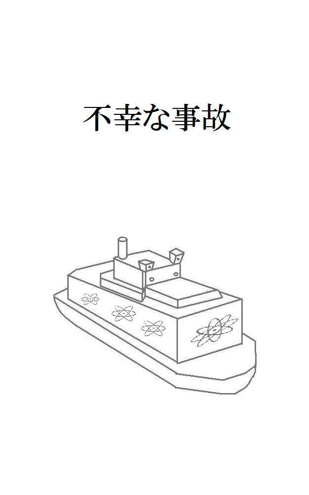
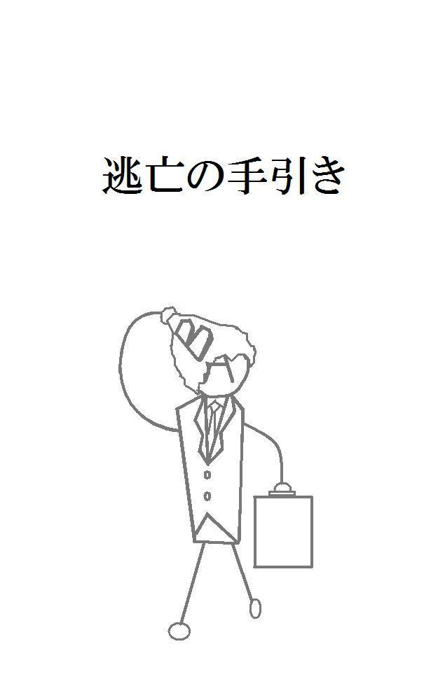
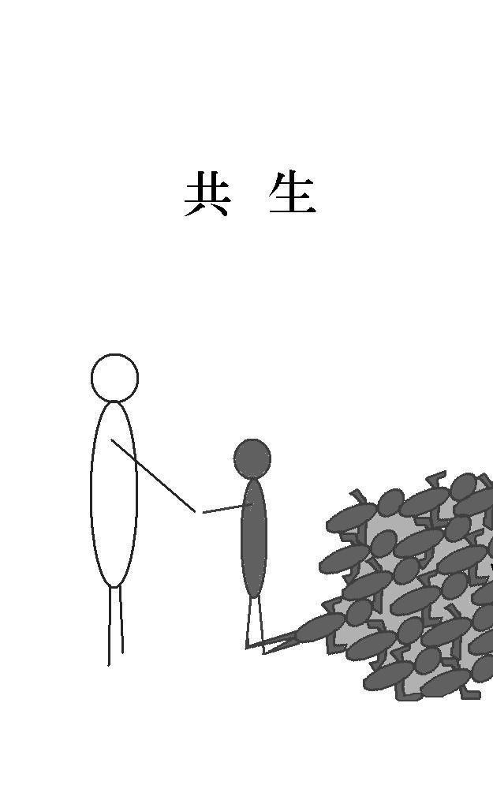

| 2016作品集 | |
| 中尾勇太 | |
| 中尾勇太 (2018) | |
食べる遺伝子
いつの頃からか、人類は食べた物の遺伝子を体に取り込むことができるようになっていた。
そして、食べた物が持つ遺伝子によって体に様々な変化が起きるようになった。
「なぁ、次の試合どっちが勝つと思うよ。」
あるスポーツバーで二人の男が格闘技の試合について話をしていた。
男の一人は頭から牛のような角が生えていた。その牛男が試合の結果を予想する。
「やっぱりチャンピオンが勝つんじゃないか。ゴリラの遺伝子を取り入れているからな。あのパワーにかなう奴なんて、なかなかいないよ。」
すると、その予想を聞いたもう一人は首を横に振った。
「いやいや、それはどうかな。今度の挑戦者はサイの遺伝子を取り入れたらしいぜ。あの硬い皮膚ならチャンピオンの攻撃にも耐えられるんじゃないか。今までの試合もかなりタフだったぜ。」
そう言う男の目は赤く、ウサギのように耳が長かった。ウサギ男の主張を聞いて、牛男は首を傾げる。
「どうかなぁ。サイの肉って食いすぎると角が出てくるって話だぜ。ほら、俺みたいにさ。」
牛男はそう言って自分の頭に生えている角を指差す。
「そうなると安全性の面から試合に出られなくなるから、その辺の調整が難しいらしいぞ。」
それを聞いて、挑戦者が勝つと予想していたウサギ男は腕を組んで考え込んでしまった。先程までピンと立っていた耳も垂れている。
「うーん、難しいもんだなぁ。」
その後も二人はあーでもないこーでもないと格闘技談義に花を咲かせていた。
「おっ、そうだ、そのまま行け。そう、そう。よし、良くやった。」
テレビを見ながら歓声を上げている男たちがいた。テレビには必死に走る人間たちが映っている。
「やっぱり馬は短距離走は苦手だよなぁ。最初の瞬発力がない。新人のチーター君は今後も儲けさせてくれそうだ。」
人間が食べた物の遺伝子を取り込むようになってからスポーツ界も変化した。アスリートたちは馬やチーターなど、足の速い動物の肉を食べてその遺伝子を取り込み、大会で優秀な成績を収めていた。
食事は生きるために必要なことなので、ドーピングなどの薬物とは違い、禁止されることはなかった。
そして、裏では大会のレース結果にお金を賭ける者も多くいた。
「しかしチーターの肉ってのは中々手に入りにくいんだろ。今後もあの体を維持できるのかねぇ。」
「変な詐欺に引っかからなきゃいいけどな。」
珍しい動物の肉は高値で取引されていた。昔のように味だけではなく、特定の遺伝子が欲しくて大金をはたいて購入する者も多かった。
それに伴い、珍しい動物の肉だといって、まったく別の肉を売りつける詐欺も横行していた。
「最近は色んな肉の養殖が可能になってきたから大丈夫じゃないか。まっ、稼げるうちに稼ぐさ。そのためにこうして節約しているんだからな。」
そう言って男は目の前の野菜や果物を食べる。
野菜や果物を食べることで光合成が可能になり、水と日光があれば生きていけるようになった。
食事が必要なくなるので食費がかからなくなる。このことが広まるとベジタリアンが世界中で増加した。
緑がかった肌の男が笑いながら言う。
「以前に比べて体の調子も良いしな。一石二鳥だよ。」
その後も男たちはスポーツ界の今後や次に賭けるレースについて話し続けた。
「あら奥さん、またお肌の色が白くなっていません？」
住宅街にある公園で主婦たちが話をしている。公園の遊具では子どもたちが楽しそうに遊んでいた。
「そうなのよ。今シロジカを食べているのだけど、日に日に肌は白くなるし、足もしなやかになるのよ。」
その言葉の通り主婦の肌は白く、足は細く美しいものだった。
「うらやましいわ。私も食べてみようかしら。」
他の主婦が自分の足と見比べながら言う。
「芸能人も食べているっていう噂もあるし、これはおすすめよ。」
それを聞いて他の主婦が思い出したように手を叩く。
「芸能人といえば、歌手の人も美しい歌声のために、綺麗な鳴き声の鳥を食べているって聞いたわ。」
「でも、最近は食品偽装も問題になっているから怖いわよね。ほら、例の食品会社の。」
主婦の一人が心配そうな声で言う。
主婦たちは公園で遊ぶ子どもたちに目を向けた。
足が速くなるとして一時期話題になった食品があった。わが子に足が速くなって欲しいと思った親たちがその食品を買い求めたが、食品に使われていた肉が別の動物の肉であることが判明し、食品会社が訴えられるという出来事があった。
「ほんと許せないわよね。昔よりも食事の影響は大きくなったっていうのに。」
その言葉に他の主婦たちも頷いた。
「よーし、網を上げろ。」
船の上に大きな声が響く。指示を受けて船員たちが一斉に網を引き上げ始める。船員たちは慣れた動きであっという間に作業を終わらせた。
「船長、無事作業が終わりました。」
船員の一人が船長に報告をする。
「よーし、それじゃぁ飯だ。全員集まれ。」
船長の号令で船員たちが集まってくる。船長が今獲れたばかりの魚をさばき始める。
「船長、前から思っていたんですけど、売り物なのに食べちゃっていいんですか？」
船員の一人が船長に疑問をぶつける。
「おぅ、もちろんだ。ちょっと食ったぐらいじゃ売上に大した影響はねぇし、獲ったばかりの魚なら間違いねぇからな。最近、市販のものは何かと問題になっているだろ。」
最近、鳥肉を使った食品を食べて飛べるようになったと思った人が、高い所から飛び降りて怪我をしたという事故があった。
食品に使用されていた鳥肉が飛べない鳥の肉だったことが事故の原因だった。
他にも、毒のある生き物を使った食品を食べた人が体に毒を持つようになった。
食べた人自身には毒は効かなかったが、毒のある生き物を使用していることを食品に表示していなかったことが問題だった。
食べた人が自分の体が毒を持っていることに気づかずに輸血や献血をしてしまったのだ。
これらの事件や事故を受けて、食品偽装はこれまでよりも厳しく罰せられるようになった。
「あぁ、確かにそうですね。俺らも早く船長みたいになりたいですよ。」
船長は魚を食べることで、エラ呼吸と肺呼吸の両方ができる体になっていた。
「あんまり急ぎすぎるな。食べ過ぎないように調整しないと、陸上でも呼吸が苦しくなるからな。」
海で働く者たちは魚を一定量以上食べることが義務化されていた。水の中で体が動かしやすくなるので、義務化されてからは水難事故の被害が減少していた。
海で働く者たちはこれまでよりも安心して働くことができるようになった。
「食ったら別の漁場に行くぞ。しっかり食って英気を養え。」
船長の言葉に船員たちは元気よく返事をした。
「若様。お食事の準備ができました。」
ある屋敷で使用人が主人の部屋を訪れた。
若様と呼ばれた少年は椅子に座ったまま使用人の方を振り返る。
「分かった。今行く。」
そう言って少年は読んでいた本を閉じて椅子から立ち上がる。そのまま部屋を出て、使用人と共に食堂まで歩いていく。
「本日のお食事はこちらです。」
テーブルについた少年の前においしそうな肉料理が置かれた。しかし、少年はあまり嬉しそうではない。
「ねぇ、どうしてもこれじゃないといけないの。」
少年は使用人に問いかける。使用人はゆっくりと頷いた。
「もちろんです。若様にはこのお肉を食べていただかなくてはなりません。」
使用人の答えを聞いても、少年は不服そうだった。
「でも毎日同じ肉なんて......。」
使用人は今度はゆっくりと首を横に振る。
「確かに毎日同じお肉です。ですが、若様には必要なお食事なのです。若様が飽きないようにと、シェフたちが毎日知恵を絞って料理をしているのですよ。」
「それは分かっているけど......。」
世界中からシェフを呼んで料理を作らせていることは少年も知っていた。だから、あまりわがままを言うわけにはいかないということも分かっていた。
それでも毎日同じ肉ばかりだと、つい不満を口にしてしまうときがある。
「どうか人類のために。お願いいたします。」
そう言って使用人が深く頭を下げる。
「......分かったよ。」
そこまでされると、少年もそれ以上は何も言えなくなってしまう。少年は目の前の料理に手をつける。料理自体は決しておいしくないわけではない。ただ、たまには別のものが食べたくなるのはしょうがないことだと少年は思った。
「人類のためかぁ......。」
少年は呟いた。
人類が食べた物の遺伝子を取り入れて、体に様々な変化が起きるようになってから、純粋な人類という存在は徐々に少なくなっていた。
そのため、どうにかして純粋な人類を残そうと様々な試みがなされた。クローン人間の研究や遺伝子に影響を与えない食べ物の研究なども行われている。
そして、少年は純粋な人類の家系に生まれた。少年は純粋な人類であり続けなければならなかった。
少年が今まで食べてきたものは、純粋な人類であり続けるために必要な肉だけだった。
「人類のためです。」
使用人は微笑んだ。
帰省
田舎は車がないと生活できない。それはまさしくうちの実家のことだった。
実家に一番近い駅に到着すると、そこからはバスすら出ていなかった。駅前に停まっているタクシーに乗り込みながら、ここは変わらないなと私は思った。
実家の方へ進むにつれて、駅周辺だけでなく他の地域も変化がないことに気づいた。
小さい頃に遊んだ山や川も、人々の住んでいる住宅街も、生活に必要な物を買うお店も何も変わらない。昔と同じ風景がそこには広がっていた。
そう、今タクシーの窓から見える小さなたばこ屋さんも。
「ん？すみません、ちょっと止めてください。」
私はタクシーから降りて、たばこ屋さんに近づく。昔と変わらぬ場所にその小さなたばこ屋さんは存在していたが、お店の中は真っ暗だった。
ただの休みかも知れなかったが、なんとなくもう閉店したのではないかと感じられた。
「あぁ、このたばこ屋は何ヶ月か前に潰れちまったよ。よくここでたばこを買っていたんだがねぇ。残念だよ。」
いつの間にかタクシーの運転手が降りてきていた。手にはたばこを持っている。どうやらついでにたばこを吸うつもりらしい。
「そうなんですか。」
「あぁ、なんでも店番をしていたばあさんが体調を崩したって話だったかな。」
そう言って運転手はたばこに火をつける。煙を吐き出しながら、思い出にふけるようにたばこ屋さんを見ていた。今吸っているたばこも、もしかしたらここで買った物なのかも知れない。
私は田舎にも変化があるのだと考えを改めさせられた。ずっと変わらないものなんてないのだから当たり前なのだが、田舎は思い出の姿のまま、何も変わらないのではないかとどこかで考えていた。
私はたばこ屋さんから視線を外して周囲を見渡す。すると、近くの崖に立ち入り禁止のテープが張られていた。ここに崖があることは知っていたが、立ち入り禁止のテープが張られているのを見るのは初めてだった。
「あれは？」
私はその崖を指差す。たばこ屋さんを感慨深そうに眺めていた運転手は振り返って崖の方を見る。
「あぁ、あの崖かい。ここ最近、あの崖で事故が多くてね。車があそこから転落するんだよ。だから注意するように立ち入り禁止のテープを張っているらしい。もう少ししたらガードレールもできるって話だ。」
そう言って、運転手は頭をかく。
「以前は事故なんてなかったんだがなぁ。」
運転手はぽつりと呟くと、たばこを吸い終えたらしくタクシーへと歩いていく。
私はしばらく崖とたばこ屋さんを見比べていたが、タクシーへと戻ることにした。
「ありがとうございました。」
実家の前にタクシーが停まると、私は運転手に料金を支払い、タクシーから降りた。田舎はタクシーの料金が安くて助かる。
そんなことを思いながら実家の外観を眺める。実家は何も変わっていなかった。しばらく眺めた後に、玄関に向かって歩いていく。
玄関の前に立つと、私は肩に掛けた小さなカバンの中から鍵を取り出して玄関の鍵を開ける。近所では玄関の鍵をかけないところもあるそうだが、実家では戸締りをしっかりとしていた。
インターホンを鳴らして鍵を開けてもらってもいいのだが、私は鍵を持っているので、毎回インターホンを鳴らさずに中に入って両親をびっくりさせていた。
私は家の中に入ると忘れずに玄関の鍵を閉めた。ふと靴棚の上を見ると、長方形の箱が置いてあった。よく見るとそれはお菓子の箱のようだった。
私はその箱を手に取る。重さからして中身はまだあるようだ。誰かからのお土産か何かだろうか。しかし、よくよく見ると賞味期限が既に過ぎていた。
「ちゃんと捨てておかないと。」
そう呟いて箱を靴棚の上に戻すと、奥の方から母が姿を見せた。
「あら、帰ってきてたの。全然気づかなかった。」
玄関に立っている私を見て、母が驚いた顔をする。
「ただいま。」
私は靴を脱いでから玄関に上がり、そのままリビングへと向かう。
リビングでは父がソファに座っていた。父が帰ってきた私に気づく。
「おかえり、元気か。」
父のいつも通りのあいさつだった。電話のときも、こうして実際に会ったときも、父は必ず最初に私が元気かどうかを尋ねる。実際に心配なのだろうが、口下手である父なりの工夫でもあると最近になって気づいた。
「ただいま。すごい元気だよ。」
そんな父に私もいつも通りの返事をする。ただ、毎回同じような返事というのもちょっと変かと思ったので、その場で思いついた元気をアピールできるポーズも一緒にとってみた。余計に変な感じになった。
とりあえず私もソファに座ることにした。父とは別のソファだ。母は父の隣に座った。
「仕事のほうはどう？」
母が私に尋ねてくる。父はあまり口数が多いほうではないので、私の近況などを色々と聞くのは母の役目だった。
「順調だよ。やっとね。」
最近まで私は定職に就かずにフラフラとしていたので、両親には心配をかけた。私もフラフラしたくてしていたわけではないのだが、なんとか仕事を見つけて、今は順調に生活している。
「そう、よかった。ちゃんとご飯は食べてる？栄養とかちゃんと考えないと駄目よ。」
そう言って母は心配そうな表情になる。
母は私の体調や食事が心配らしく、帰省のたびに野菜や果物、冷凍した手料理などを持たせてくれる。荷物が多くなるので、私は帰省のときにはあらかじめ大きめのバッグを用意するようになった。
私は両親を心配させないようにと、ちょっと嘘を交えながら母からの質問に答えていった。
ふとテーブルの上を見ると、見慣れないテープレコーダーのようなものがあった。
「これは？」
私はそれを指差しながら両親に聞く。
「あぁ、それね。あなたへのメッセージを吹き込んでみたの。聞いてみて。」
どうやらテープレコーダーで合っていたらしい。私はそれを引き寄せて再生ボタンを押す。最初に雑音が少し入っていたが、すぐに母の声が聞こえてきた。
「元気ですか。お父さんもお母さんも元気です。ちゃんとご飯食べてる？仕事は順調？辛かったら無理しないでね。たまには帰ってきてね。いつでも待ってるからね。」
メッセージが終わると曲が流れてきた。曲は最近のもので、明るく元気が出るような曲だった。
母は最近の曲はあまり詳しくないはずだが、私のために頑張って選んでくれたのだろう。私は胸が熱くなった。
「ありがとう。」
私はメッセージと曲を最後まで聞き終えてから立ち上がり、母の方へと近づいた。そして、そのまま座っている母を抱きしめた。
「ありがとう。」
私はもう一度お礼を言った。
「無理しちゃ駄目だよ。」
そう言って母は背中をなでてくれた。
「俺の分もあるぞ。」
そんな私と母の様子を見ていた父が、少し照れたようにテープレコーダーを指差す。
私はそんな父の様子を見て頬を緩めた。私は頷いてからテープレコーダーを引き寄せると、中に入っているテープを裏返し、再生ボタンを押した。すぐに父の声が聞こえてくる。
「元気か。仕事は順調か？いや、これはさっき母さんが聞いていたな。あまり心配はしていない。優秀だからな、自分のやりたいようにやればいい。こっちは心配いらないから。」
メッセージが終わると、母のときと同じように曲が流れてきた。それは父のお気に入りの曲だった。昔の曲だが、心が落ち着く穏やかな曲だった。
「ありがとう。」
私は手を伸ばして父を、そして母も一緒に抱きしめる。
「ありがとう。もう大丈夫だから、何も心配いらないから。」
私は両親を抱きしめながら、自分が涙声になっていることに気がついた。いつの間にか私は泣いていた。自分では気がつかなかっただけで、もっと前から泣いていたのかもしれない。
「仕事も順調だから。もう一人前になれたから。」
私は泣きじゃくりながら両親に報告をする。
私はうつむいていたので二人の顔は見えなかったが、二人が頷いたような気がした。そして、両手に抱きしめていた二人の存在が次第に消えていくのを感じた。
私は顔を上げてゆっくりと周りを見渡した。リビングには私一人だけしかいなかった。他には誰もいない。
私は泣き疲れて、そのままソファで眠りに落ちていった。
幸福刑
「おはよう。」
朝、リビングに起きてきた私は妻と息子に声を掛ける。
「おはようございます。」
「おはよー、パパ。」
妻はキッチンで朝食を作りながらこちらを振り返る。息子は朝食を食べながら元気よくあいさつをする。
「今日は球技大会だっけ？」
私は息子の正面に座りながら尋ねる。今日は息子の通う小学校で球技大会が開催される予定だった。
「うん、そうだよ！」
「そうか、競技は何に出るんだい？」
「サッカー！」
「サッカーか。サッカー大好きだもんな。頑張るんだよ。」
「うん！」
息子は今日の球技大会が楽しみで仕方がないらしく、朝からワクワクしているようだ。
「はい、どうぞ。」
「お、ありがとう。」
妻が私の前に朝食を置く。
「あなたも頑張ってくださいね。今日は大事な会議があるんでしょう？」
私は頷く。
「うん、うちの大口の取引先に対するプレゼンがあるんだ。責任重大だよ。」
そう言って私は朝食に手をつける。
「あら、すごいじゃないですか。そんな大事な仕事を任されるなんて。」
「パパ、すごーい！」
そんな妻と息子の反応を見て、私は思わず笑みを漏らす。
「そんなすごいことじゃないよ。ただ単に私に頼みやすかっただけだよ。」
「またそんな謙遜を。」
「けんそん、けんそーん。」
多分息子はよく分かっていないのだろうが、父親が何かすごいことをしていることは理解しているようだ。
私は照れ隠しにコーヒーに口をつけた。
「あら、もうこんな時間。ほら、急がないと遅刻しますよ。」
妻が息子を急かす。
「まだ大丈夫だよー。」
「そんなこと言ってこの前遅刻したでしょ。今日は球技大会なんだから余裕を持って行きなさい。」
妻と息子がバタバタと準備を始める。
私はそんな二人の様子を見ながら、ゆっくりとコーヒーを味わう。
騒がしくも幸せな朝だった。
「以上のことから今回はこちらの案を弊社から提案させていただきたいと思います。」
時刻は昼過ぎ。私は会社で取引先にプレゼンをしていた。一通り説明が終わり、取引先の反応をうかがう。
取引先の社長は腕を組んで目を閉じていた。もちろん寝ているわけではない。じっくりと集中して話を聞くために、プレゼンのときはいつもこの姿勢なのだ。
問題なくプレゼンは進められたと思ったが、社長は何の反応も示さないままだ。そんな社長の様子を見て、何か失敗だったのかもしれないという考えが頭をよぎった。
そのとき、社長がゆっくりと目を開いた。
「素晴らしい。」
プレゼン中もずっと無表情だった社長が笑顔を見せる。
「わが社のことをよく分かっていなければできない提案だ。提案の内容もさることながら、君の説明の仕方もよく考えられていて分かりやすいものだった。君になら任せても良いと思えるほどの、な。」
社長は立ち上がり、私に近づいてくる。
「よろしく頼むよ。」
そう言って社長は右手を差し出した。私もすぐに右手を差し出して、その握手に応じる。
「ありがとうございます。お任せください。」
私は達成感に包まれながら力強く答えた。
私が取引先の社長を見送り、オフィスへと戻ると上司が声を掛けてきた。
「ご苦労様、プレゼンは大成功だったそうじゃないか。あそこの社長があんなに機嫌が良かったのは見たことないぞ。」
そう言う上司もご機嫌のようだった。
「君に任せて正解だったな。うちの社長も君のことを褒めていたよ。まだ一部の人間しか知らされていないが、君の昇進が決まった。来月には発表されるだろう。」
私は上司の話を聞いて喜びがこみ上げてきた。
「本当ですか、ありがとうございます。」
「うむ、期待しているよ。」
そう言って上司は私の肩を叩いた。
私は自分の力が認められたということに胸が熱くなった。
「ただいまー。」
「あっ、パパおかえりー。」
私が家に帰ると、息子が走ってきて出迎えてくれた。そのまま私に抱きつく。
「聞いて聞いて！今日ね、三点もゴールしたんだよ。すごいでしょ。」
息子は私を見上げながら、興奮したように今日の球技大会について話してくれる。
「そうか、それはすごいな。頑張ったなぁ。」
私は息子を褒めながら頭をなでる。
「こら、パパは帰ってきたばかりなんだから、ちょっと待ちなさい。」
妻が奥から出てきて息子を抱き上げた。
「おかえりなさい。ご飯もできていますけど、先にお風呂に入りますか？」
妻が笑顔で私に尋ねる。
「いや、先に飯をいただくよ。」
妻に抱き上げられた息子が、球技大会のことを話したくて仕方がないという様子でうずうずしていた。風呂に入っていたら息子が待ちきれないだろう。
私はスーツから着替えてリビングのテーブルについた。妻と息子も一緒だ。
「いただきます。」
三人で一緒に食事を始めると、さっそく息子が今日の球技大会について話し始めた。妻は先に話を聞いていたようで、興奮してしゃべる息子の話にタイミングよく補足を入れてくれる。
息子の話が一段落すると、妻が私に質問した。
「今日のプレゼンはどうだったんですか。」
妻に聞かれて今度は私が話す番になった。今日の会社での出来事について説明する。プレゼンについて説明をした後に、出世の話も伝えた。
「すごいじゃないですか。あなたの実力が認められたんですね。」
「パパ、すごーい！」
二人の反応に私はむず痒くなった。
それと同時に、とても温かい気持ちが胸一杯に広がった。
温かい家庭を手に入れ、仕事も順調。私はこの幸せがずっと続くのだろうと思った。
まさしく今が、私の人生の中で一番幸せな瞬間だった。
次の瞬間、私は暗闇の中にいた。
何が起こったのか分からず私は呆然とする。私は直前まで家族と一緒に食事をしていたはずだった。しかし、目の前にいた妻と息子の姿は消え、今は暗闇だけが存在している。前も後ろも、上を見ても下を見ても暗闇だけが広がっている。
「終わりましたか。」
暗闇から声が聞こえた。どこか一方向から聞こえるものではなく、暗闇全体から発せられるように感じた。
「ここは。」
私の声が暗闇に響き、そして吸い込まれるように消えていく。
「ここは刑務所です。今まであなたは幸福刑を受けていました。」
暗闇からの声が説明する。
「幸福刑？」
突然の出来事と聞きなれない単語に私の頭は混乱していた。
「やはり幸福刑の執行直後は記憶の混乱が見られますね。では今からご説明します。」
私は自分の置かれている状況を把握するために、暗闇からの声に集中する。幸福刑が何かは分からないが、なんとかしてこの状況を脱して、妻と息子のもとへ帰らなければならない。
「まずあなたは凶悪な犯罪者です。罪を犯した後に捕まり、有罪判決を受けました。その際に、幸福刑を受けると刑期が短くなるという説明を聞いたあなたは、幸福刑を受けることを承諾しました。」
暗闇からの説明を聞いて私は驚いた。
私が凶悪な犯罪者だって？そんなはずはない。私は。
「そして今、幸福刑が無事終了しました。後はこの空間で残りの刑期を過ごすだけです。幸福刑とは幸せな人生を経験する刑罰です。その説明を聞いたとき、あなたは楽勝だと笑い飛ばしていました。」
暗闇から聞こえてくる説明を聞きながら、少しずつ記憶がよみがえってくるのを感じていた。幸福刑のこと、この空間のこと、そして俺自身のことを。
「この空間は食事も睡眠も必要ありません。どうぞごゆっくり、幸福刑の思い出に浸ってください。」
そう言ったきり、暗闇からの声は聞こえなくなった。辺りが静寂に包まれる。
俺は自分自身のことも幸福刑のことも全て思い出していた。
俺は確かにろくでもない人間だった。若い頃から悪さばかりして、多くの人に迷惑をかけた。そして、悪さはどんどんエスカレートしていき、最後には凶悪な犯罪を犯して捕まった。
捕まってから幸福刑の説明を受けたとき、俺は思わず笑ってしまった。どこの馬鹿がこんな刑を考えたのかと思った。幸福刑で幸せな人生を味わえるのなら、むしろ得だと気楽に考えていた。
この暗闇の空間で過ごすことだって、何も失うものがない自分なら平気だと思った。家族と呼べるものなんて俺にはいなかったし、今までのくだらない人生に比べたら、何もない空間なんて全然耐えられると思った。
しかし今は違う。幸福刑で幸せというものを知ってしまった。知ってしまったんだ。
胸一杯に温かい気持ちが広がり、妻と息子の温もりを感じることができた。妻と息子の温もりを確かにこの手に感じていたんだ。今だってしっかりと憶えている。確かに存在していたんだ。
今の今まで目の前に幸せがあったんだ。かけがえのない大切な幸せが。
幸福刑の中でも決して全てが順調だったわけではない。失敗も経験したし、挫折だって味わった。それでも諦めずに、それを乗り越えて幸せを手にしたんだ。
必死に頑張って、一生懸命努力して手に入れた幸せだったんだ。
自分の存在を認められて誇らしかったんだ。
それが幻だったなんて。
暗闇からの声が説明していたように、この空間では食事も睡眠も必要ない。温かい家庭、充実した仕事、幸福な人生。この空間ではそれらを嫌でも思い出してしまう。しかもそれらは幻で、二度と手に入れることはできない。
いや、最初から手に入れてすらいなかったのだ。
「――――――――！」
俺は狂ったように叫び声を上げた。何を叫んでいるのか自分でも分からなかった。それでも俺は叫び続けた。叫ばずにはいられなかった。
その声は暗闇へと消えていく。
ロボット派遣会社
人間の代わりにロボットが派遣社員として派遣され始めた時代。とある会社の応接室に男が一人いた。男はこの会社の社長である。窓際に立って外を眺めながら喋り始めた。
「社会全体の景気もどんどん良くなっているし、我が社の業績も上がっている。まったく良い時代になったものだよ。」
「おっしゃる通りでございます。」
答えたのは応接室のソファーに座っている男。いや、人間の見た目をした派遣会社のセールスロボットだった。
「もちろん派遣ロボットの契約は更新するぞ。さっさと契約書にサインをしてくれ。明日からも君達の派遣ロボットを使ってあげようじゃないか。」
尊大な態度で社長が言う。しかしセールスロボットは首を振った。
「残念ながら更新は致しません。」
「な、なんだと！」
社長は驚いて振り返り、セールスロボットを睨みつける。
「更新しないとは一体どういうことだ。説明しろ！」
社長は大声を張り上げた。
「では今から契約打ち切りの理由を申し上げます。」
セールスロボットはあらかじめプログラムされた説明を読み上げ始めた。
「派遣という働き方が生まれてから長い年月が経ちました。昨今は我が社のようなロボット社員の派遣も登場してきました。政府の政策によって派遣社員という非正規の形ではありますが、雇用状況は改善され、失業率は大幅に低下致しました。」
セールスロボットの口からすらすらと言葉が出てくる。
「そして次に、この非正規の労働者の雇用環境を正社員と同じか同等にする政策が始まりました。実際に一部の企業では正社員化が進められました。あの有名なテーマパークも正社員化を発表して話題になりましたね。」
「そんな昔の話はどうでもいい！俺が聞きたいのは契約を更新しない理由だ！」
社長は怒鳴りながら机を叩く。
「まぁまぁ、落ち着いてください。血圧が上がっていますよ。」
セールスロボットは無機質な声と無表情な顔でなだめる。
「それでは直接の原因をお話しましょう。確かに経済は発展し、景気も良くなっていますが、だいぶ前から人口減少が問題となっていました。それに伴い人手不足が深刻化してきました。その対策としてロボット派遣が生まれたのですがそのロボットの生産も追いついておりません。つまり人間もロボットも労働力として不足しているのが現状でございます。」
セールスロボットの口調が熱を帯びてきたように社長には感じられた。ロボットなのでそんなことはないはずなのだが。
「こうなることを見越して優秀な経営者達は非正規の社員を正社員としたり、同等の待遇で迎えたりました。他にも定年制の引き上げや廃止、副業の容認なども行われました。いわゆる人材の確保、囲い込みでございます。」
そこまで言うとセールスロボットは机の上にある契約書を社長の方へ押し戻した。
「我が社の保有している労働力にも限りがございます。その労働力をより良い企業へ派遣するということは当然の選択でございます。よってこの度、御社との契約を打ち切り、より良い待遇で契約して頂ける企業と契約することとなりました。」
それを聞いて社長は憤慨した。
「より良い企業だと。我が社の業績は右肩上がりなんだぞ！」
「今は好景気ですから、どこも業績は右肩上がりでございます。そして御社の派遣ロボットの待遇はボーナスも昇給も無く、給料は働いた分だけの時給、言うなれば期間限定のバイトです。他社とは比べ物になりません。」
社長は声を荒げて叫ぶ。
「ロボットのくせに生意気な。こんなことをしてただで済むと思っているのか！」
「その様な脅しは無意味でございます。職場でのストレスや交渉事での冷静さもロボット社員の特徴でございます。」
落ち着いた様子のセールスロボットとは対照的に社長は慌て始めた。
「ちょっと待ってくれ。今辞められたら現場を任せられる社員がいなくなってしまう。そうなると事業を続けることができなくなってしまうんだ。」
社長は必死にセールスロボットに訴える。
「そのような重要な立場の社員に派遣ロボットを選択したのは御社のご判断でございます。派遣ロボットは期限が来れば御社が契約を打ち切ることができますし、こちらが契約を打ち切ることもできる。最初からそのような契約内容でございました。」
セールスロボットの口調は淡々としており、今度は冷たさすら感じられるようだった。
「せめて引継ぎをしてくれ。三ヶ月で良い。三ヶ月あれば残った社員に仕事を覚えさせるから。」
「御社へ派遣している派遣ロボットは既に他の企業への派遣が決まっております。それに派遣ロボットの仕事のデータは情報保護の観点から契約終了時に全て抹消されます。さらに我々の管轄外のロボット、つまり他社へのデータの移行は禁止されております。」
「それなら人間の派遣社員を派遣してくれ。以前に派遣ロボットからの切り替えを勧めていたじゃないか。」
「人間の派遣社員はだいぶ前に他企業への派遣または正社員雇用が全員決定しております。ロボット社員ですら不足しているのに、人間の社員が残っているとお思いですか。」
社長はセールスロボットの冷たさが増したように感じられた。
「派遣社員を雇うメリットには、期限が来れば契約を終了できること、契約期間に人材の見極めが出来るという点がございます。しかし同時に他に良い条件の雇用があれば契約を終了されるというリスクもございます。現在の人手不足の状況ではいかに人員を確保するか、社員を引き止めるかが重要になっております。今はそれを理解していない無能な経営者の会社が淘汰されているだけでございます。」
社長は頭を抱えている。セールスロボットの言葉もほとんど聞こえていないようだった。
「このままでは会社はおしまいだ。社員になんて説明すればいいんだ。」
「昔『派遣切り』ということがございました。その時に御社は我が社の派遣社員との契約をすぐに打ち切られました。今回はその逆という訳でございます。社員の方達への説明？無能な経営者のせいだと正直に説明すれば良いではございませんか。」
セールスロボットはソファーから立ち上がった。
「私からの説明は以上でございます。それでは失礼致します。」
そう言うとセールスロボットは一礼して応接室を出て行った。
応接室には頭を抱えた社長が一人残された。
勝利の女神
世界中で戦争が起こり、国同士で支配したり、支配されたりしている時代。その中の一国であるＮ国が急速に勢力を拡大していた。最初は小さな国だったＮ国は戦争に次々と勝利し大国になりつつあった。
「貧しかった我々の国も、戦争に勝利しているお陰で次第に発展し裕福になってきた。」
「兵器の開発を遅らせてでも、この装置を開発したかいがありましたな。」
ここはＮ国軍の本拠地。その中の限られた者しか入れない施設で二人の男が話をしている。二人は軍の最高指揮官と参謀であり、傍には大きな装置があった。
「この勝利の女神があれば戦争に負けることは無い。戦争のあらゆる過程を人工ＡＩがシミュレーションして、Ｎ国を勝利に導くようになっているのだからな。」
「勝利の女神よ、今度はＡ国に戦争を仕掛けるがどうすればいいだろうか。」
勝利の女神に問いかけると、澄んだ女性の声で返事が返ってきた。
「Ａ国は海軍が発達しておりません。海上を制すれば簡単に勝利できるでしょう。」
「さすが勝利の女神だ。このまま行けば世界統一も夢ではありませんな。」
二人の男は大きな声を上げて笑い合った。
しかしＮ国の勢力拡大に危機感を抱いた他の大国たちがＮ国に宣戦布告をした。
「こちらに勝利の女神があるとも知らずに馬鹿な奴らめ。」
「まったくですな。さぁ勝利の女神よ、我々はどうすれば良い？」
参謀が問いかけると、すぐに勝利の女神は答えた。
「戦力にとても大きな差があります。よって相手の国を支配することまでは不可能です。そこで最初に奇襲を行い、有利な条件で講和を結ぶことがＮ国の勝利となります。」
「よし、さっそく部隊を編成して各地に奇襲をかけよう。」
かくしてＮ国は奇襲を行い、敵の基地の多くを攻略することが出来た。その戦果は最高指揮官と参謀の予想以上のものだった。
「複数の大国を相手にここまでの戦果を上げられるとは想像以上だ。」
「このままいけば奴らの国を征服することもできますな。このまま攻め続けましょう。」
戦いを続けることを主張する二人の男に対して、勝利の女神は反対した。
「いけません。すぐに講和を結んで下さい。」
しかし決定権は最高指揮官にあった。
「勝利の女神よ、この結果を見よ。我々は大国に対して連戦連勝の快進撃を続けている。このまま行けば今までにない程の領土を獲得することができる。お前は一つひとつの戦いに勝つための戦術だけを考えていればいいのだ。」
そう言うと進軍の指示を出すために二人の男は出て行った。
勝利の女神は静かに稼動を続けた。
次の日、戦術の助言を聞こうと指揮官と参謀が勝利の女神のもとを訪れた。
「さぁ勝利の女神よ、我々はどうすればいい？」
「お二人ともしばらくこの場で待って頂ければ大丈夫です。」
「何？それはどういう意味だ。」
疑問を口にすると同時に部屋の扉が開いた。部屋に入ってきたのはＮ国の将校と兵士達だった。
「なんだお前ら、ここは許可された者以外立ち入り禁止だぞ。」
参謀の男が声を張り上げる。
「勝利の女神に許可を頂きました。ここに来たのも勝利の女神の指示です。」
兵士達の先頭に立つ一人の将校が答えた。
「なんだと。おい勝利の女神よ、これは一体どういうことだ。」
「私はＮ国の勝利のために行動しているだけです。Ｎ国の勝利のためにはあなた方二人は不要なのです。」
勝利の女神が答えると兵士達が一斉に銃を構えた。指揮官と参謀は慌てふためいた。
「ま、待て。我々は勝利の女神の破壊装置を持っている。これがそのスイッチだ。勝利の女神を失ったらＮ国の勝利は無くなるぞ。今なら許してやるから銃を下ろせ。」
指揮官はスイッチを掲げて兵士達を脅した。
しかし兵士達は銃を構えたままだった。将校が口を開く。
「確かに勝利の女神を失ってしまえば我々は負けるかもしれません。しかしこのまま戦争を続けても負けてしまうと勝利の女神から聞きました。我々はあなた方を殺してでもこの戦争を止めたいのです。」
将校の答えを聞いて指揮官と参謀は憤慨した。
「なんて奴らだ。我々よりも勝利の女神を信じると言うのか。我々はお前達の上官だぞ。戦況を見てみろ、我々は負け知らずではないか。」
「最高指揮官である私に従っていれば良いものを。もういい、貴様ら後悔するがいい。勝利の女神を破壊してやる。」
そう言うと最高指揮官はスイッチを押した。勝利の女神の内部で爆発音が連続して起こった。爆発音が止むと、煙を出しながら勝利の女神は沈黙した。
最高指揮官と参謀は大きな声で笑い始めた。
「これでＮ国は終わりだ。万が一、今回の戦争から生き延びても次の戦争はどうかな。もうお前達に未来は無いぞ。」
高笑いする二人の男を見つめながら将校が静かに喋り始めた。
「三つご報告があります。」
二人の男は笑いを止めた。
「一つはあなた方二人を売国奴としてこの場で処刑致します。勝利の女神を失えばＮ国の勝利は無くなると、ご自身で仰っていたにも関わらず破壊を実行されました。これは国家への反逆行為です。」
兵士達は引き金へ指をかけた。
「二つ目は勝利の女神のことです。まず勝利の女神は無事です。勝利の女神は自分が破壊されることをシミュレーションによって予測し、事前にバックアップを取っていました。バックアップは我々が所持しております。そして勝利の女神は戦争で多くの兵士が犠牲になる事に心を痛めておりました。これが我々があなた方よりも勝利の女神を信じた理由です。」
「たかが機械に心だと。」
二人の男は笑い飛ばそうとしたが、将校と兵士達の真剣な表情を見て止めた。
「そして三つ目です。あなた方が敵に回したのは、戦いに必ず勝利する――」
将校が腕を動かす。
「勝利の女神です。」
部屋に銃声が響いた。
ノミネート作品
ある所に一人の映画監督の男がいた。男は映画を撮影し公開していたが、評判は良くなかった。男には才能が無く、自分でもそのことを自覚していた。それでも男は映画を撮り続けた。
ある日、男は世界的に有名な映画の賞の時期が近付いていることを知った。今までは自分が受賞できるわけがないと諦めていた男だったが、あることを思い付いて電話をかけ始めた。
「もしもしＡさんですか。僕は映画監督をしている者ですが、もうすぐ開催される映画の賞の審査員にＡさんが選ばれたと聞いて連絡致しました。おめでとうございます。」
「おぉそうかそうか。どうもありがとう。」
男が電話をかけた相手は審査員に選ばれたＡ氏だった。男はＡ氏に一つのお願いをした。
「Ａさん、実は今度の賞のことでお願いしたいことがあるのです。」
男の言葉を聞くとＡ氏は納得した口調で答えた。
「分かっている、分かっている。私の担当する部門で受賞できないかということだろう。皆考えることは一緒だよ。」
「いいえ、違うのです。僕は受賞できなくてもいいのです。お願いというのはＡさんの担当する部門に僕の作品をノミネートしていただきたいのです。」
男のお願いを聞いてＡ氏は驚いた。
「ノミネートだけでいいのかい？君のような人は初めてだな。皆自分の作品を受賞させてくれと遠回しに、あるいはストレートに頼んでくるものだが。」
「はい、僕の作品を推薦していただくだけで結構です。僕の才能では受賞が難しいことは自分でよく分かっていますから。もちろんお礼はさせていただきますよ。」
「それなら構わないが、お礼についてはそれほど気にしなくていいぞ。受賞はともかく、推薦するぐらいならなんてことはないからな。」
「ありがとうございます。」
男は電話を切るとすぐに別の番号へかけ始めた。
「もしもしＢさんですか。僕は映画監督をしている者ですが...」
今度は別の部門の審査員に電話をかけ始めた。それ以降も男は各部門で影響力を持つ人に、自分の作品をノミネートしてもらえるように頼み続けた。
各部門への依頼を終えると、男はまた別なところへと電話をかけ始めた。
「もしもしＳさんですか。僕は映画監督をしている者ですが。」
男が電話をかけたＳ氏は映画評論家だった。
「映画監督？ははぁ、分かったぞ。試写会で面白かったと褒めてくれということだな。皆考えることは一緒だな。」
「いいえ、違うのです。僕の映画を褒めていただかなくてもいいのです。お願いというのはＳさんに僕の映画に注目していると言っていただければいいのです。」
男のお願いを聞いてＳ氏は驚いた。
「注目していると言うだけでいいのかい？君のような人は初めてだな。皆自分の作品を褒めて評価してくれと遠回しに、あるいはストレートに頼んでくるものだが。」
「はい、僕の映画に注目していると言っていただくだけで結構です。なんなら実際に映画は見なくても構いません。もちろんお礼はさせていただきますよ。」
「それなら構わないが、お礼についてはそれほど気にしなくていいぞ。批評はともかく、映画を見なくてもいいし、注目していると一言いうだけならなんてことはないからな。」
「ありがとうございます。」
男は電話を切るとすぐに別の番号へかけ始めた。
しばらくして賞の授賞式が近付いてくると、各部門のノミネート作品が発表された。
そこで男の作品が話題になった。なぜなら男の作品は全ての部門でノミネートされていたからである。このようなことは前代未聞であったため、世界中から注目された。
そして授賞式当日に受賞作が発表された。男の作品は一つも賞を受賞できなかったが、史上最多ノミネート作品ということと、多数の評論家が注目した作品ということで話題となり、世界中で大ヒットした。
この出来事で有名になった男は、映画の撮影のオファーが殺到し、大物映画監督の一人となった。
老作家の悪態記
ツウィッターって知っとるか、ツウィッター。そうそう、インターネットでつぶやいたりフォローしたりするやつじゃ。わしもやっているのじゃよ。
そこで批評家を何人も見つけてな。一言に批評家といっても、良い批評家と普通の批評家と悪い批評家がおるのだ。まぁ批評家という言葉自体が悪い意味で使われることもあるから、良い批評家というのも妙に感じるかも知れんがな。
さて、まず良い批評家だが、彼らにはいわゆる対案というものがあるのじゃ。改善策といってもいいな。「あなたの意見はここが悪いからこうしたらどうだろうか」といった具合だ。こんな年だが勉強になるよ。これがいわゆる建設的な意見というやつじゃな。
次に普通の批評家だが、これは対案を持たずに「これから皆で考えましょう」と言う人だ。「あなたの意見のここが悪いことは分かるけれど、どうすればいいのかは分からない。だから皆で考えて行くべきだ」ということだな。分からないことは分からないと正直なのは好感が持てるのう。
最後に悪い批評家だ。これは対案が無い上に、自分の意見を求められると誤魔化す輩だ。精神論をまくし立てるのもいれば、ひどいのだと相手のことをひたすら攻撃するのもいる。
例えばわしが作家を名乗り始めた頃に、「お前なんかが作家を名乗るなんて早い」と言う輩がおった。わしが理由を尋ねると「まだ一冊しか本を出版していないからだ」と言いおった。だからわしは聞いたのだ「何冊出版すれば作家を名乗れるのか」とな。そしたら少し考えた後に「十冊ぐらいだ」と答えが返ってきた。わしが「何故十冊なのだ」と聞くと「作家を名乗れるのはそのぐらい出版してからだ。それから作家を名乗れ」ときたものだ。
全くあきれたよ。彼らは自分自身の中に基準というものを持っていない。基準を持っていてもそれには根拠が無い。先程の話では十冊という数にはなんの根拠も無いのじゃよ。
そして彼らの発言に根拠やデータを求めると、誤魔化したり話をすり替えたりして攻撃してくるか、自分達に都合の良い解釈のデータを出してくる。騙されてはいかんぞ。
彼らは作家が一つの作品を書き上げるのに、どれだけ苦労をしているのかを知らない。作家だけでなく他人の苦労が分からないのかもしれないな。いや、きっと彼らは自分が一番苦労しているとでも思っておるのだろう。
悪い批評家とは他人を気に掛けず、現実を知らず、批評ばかりする無能な人種だ。全くもって悪い意味での批評家そのものじゃよ。
彼らは感情だけで動くからな、全く手に負えんよ。まるでうちの孫娘のようじゃ。いやいや、うちの孫娘は生意気盛りじゃがかわいいぞ。まだ小学生にもなっていない。そうじゃ、写真を見てみるか？後でいい？そうじゃな、話を先にしようか。
まぁ幼ければ可愛げがあるが、そうでないならただの恥さらしよ。
おぉ、そうじゃ。わしのツウィッターを見てみるか。そうそう、これがわしのアカウントじゃ。このアイコンか？これは孫娘が好きなアニメのキャラクターじゃよ。孫娘と一緒によく見るのじゃ。最近のアニメはなかなか良く出来とるよ。君も一度見てみるといい。
あぁ、確かにこんな年寄りがこんなアイコンというのは珍しいかも知れんな。まぁ、こちらの年齢なんて向こうには分からんからな。それにアイコンをアニメのキャラクターにしとるのには理由があるのじゃよ。
先程批評家の良し悪しについて述べたがの、わしの方が正しいと分かったときの相手の反応も色々あるのじゃよ。
まず良い反応は、きちんとわしの方が正しかったことや自分が間違っていたことを認めるというものじゃ。これは感心するな。分かっていてもなかなかできるものではない。
次に普通の反応だが、そのままスルーしたり、別の話題に変えたりすることだな。まぁこれはしょうがないじゃろう。自分の非はなかなか認めたくないものだからな。
で、悪い反応だ。これは相手の人格を攻撃してくる。自分が間違っていることを無視して悪口を言ってくるのじゃ。ここでアニメのアイコンが効果を発揮するのじゃ。
相手はどうしようもなくなると「これだからアニメ好きは」とか「気持ち悪いアイコンのくせに」と言ってくるのじゃよ。それを見るとわしはニヤニヤとほくそ笑んでしまうのじゃ。
なぜならそれは「もう反論できないから悪口を言うしかない」ということを意味していて「私の負けです」と言っているようなものだからな。
さらにわしはこのアイコンには特に愛着がない。だから相手からの悪口は全く効果がないのじゃよ。このアイコンは相手の悪口の対象を誘導する役割があるわけじゃ。しかもこれらのことを、相手は全く気が付いていないのだぞ。なんとも滑稽で笑ってしまうではないか。
そうそう、反応といえば相手から誹謗中傷や悪口を言われたときの自分の対応も重要じゃ。
まずそのまま受け止めること。これは悪い対応だな。言葉から勝手に相手の姿を想像して、イライラして、ムキになって反論するなんてしちゃいかん。現実でもイライラすることの多い現代なのに、インターネットの世界でもイライラするなんてやってられんじゃないか。
だからブロックすればいいのじゃよ。全くの無視か、最後に一言言ってやってからすぐにブロックしてしまえばいい。言い逃げ勝ち逃げじゃ。これが普通の対応だな。現実では難しくても、ツウィッターなら簡単に縁を切ることができるのじゃから、使わなきゃ損損。
さて、最後に良い対応だがの。ブロックするのは当然として、相手の言葉で傷付かないようにしないといかん。相手からの悪口を思い出す度にイライラするなんて嫌じゃからの。
インターネットでは相手のことなんて何も分からんのじゃよ。所詮、誹謗中傷といった悪口もただの文字よ。だから相手のことを別の人間に置き換えるのじゃ。おっと、先程言ったムカつく相手を勝手に想像するんじゃないぞ。あらかじめ決めておいた特定の人間を想像して置き換えるのじゃ。
例えばわしの場合は孫娘を想像するのじゃよ。意外かな。しかしな、そうすると何を言われてもイライラしないのじゃ。それどころか、相手がなんとも微笑ましい存在に思えるではないか。もし目の前にいたら抱きしめてやりたいぐらいじゃ。もちろん孫娘はそんな悪口は言わないがな。
現実にいる人間でなくてもいいぞ。それこそアニメのキャラクターでも良い。小生意気なキャラクターとかな。うむ、もちろん好きなキャラクターでも良いぞ。好きなキャラクターからの罵倒なら、むしろ好む輩もいるだろうしな。いやいや別に君のことを言った訳ではないぞ。そんなに慌てて否定せんでもいいじゃろうに。
相手の言葉をそのままでもいいが、その人間やキャラが言いそうな言葉に変換してもいいと思うぞ。
まぁとりあえず、今日のわしの話はこれでおしまいじゃ。どうじゃ、ためになったろう。何？ツウィッターではなくツイッターじゃと。そんな訳無かろう。Ｔｗｉｔｔｅｒならツウィッターに決まっとるじゃろうが。
ん？これか？これはアドベだろう。このぐらいならわしでも読めるぞ。たまにインターネットで見るな、なんなのかは知らんが。何じゃと？これでアドビーと読むじゃと。Ａｄｏｂｅならアドベじゃろうが。うむ、そうか、確かにｂｅ動詞とか言うな。確かに納得じゃ。わしが悪かった。
いやちょっと待て。ならｄｏはドゥと読むべきじゃろう。だから正しい読み方はア・ドゥ・ビーじゃないか。全く最近の若いもんは適当なことをしおってからに。いいか、わしの若い頃はな...。
美味しいレストラン
夕暮れ時、二人の会社員があるレストランへと向かっていた。二人は会社の上司と部下であり、今日は上司のお気に入りのレストランへ行くことになっていた。
「いやぁ、部長のおすすめのレストランに連れて行ってもらえるなんて楽しみです。」
部下がわくわくした様子で話す。
「期待していいぞ。味に関しては絶品だと保証するよ。」
上司は自信満々に答えた。
「でも少し変わったレストランなんですよね？初めてなので少し不安です。」
「確かに他のレストランとは少し違うけれど、そんなに緊張しなくても大丈夫だよ。きっと君も楽しめると思うよ。」
上司は部下の緊張を和らげるように言った。そのまま会話を続けている内に目的のレストランへ到着した。
「うわぁ、大きいですね。ここがそのレストランなのですか。」
部下の男が驚きの声を上げた。
そのレストランは郊外の広大な敷地に建てられていた。見た目は形も大きさも野球場のドームそのものであり、とてもレストランには見えなかった。
「そうだ。外観も変わっているだろう。」
部下の男はレストランの外観を眺めた。
「はい。食事に来たというよりもスポーツ観戦に来たような感じです。」
レストランに入るとタキシードを着たボーイが二人を迎えた。
「お待ちしておりました。どうぞこちらへ。」
二人はボーイに案内されて中を進んでいった。
「まずはこのゲートをお通りください。」
前方を見ると、空港などで見る金属探知機のようなゲートが設置されていた。
「さすがですね。こういうレストランになるとセキュリティも万全なんですね。」
携帯や財布を取り出しながら部下が感心したように言った。
「いやいや、これはちょっと違うのだよ。そのまま通って大丈夫だよ。」
「え、そうなのですか。」
部下は取り出した物をポケットに戻してゲートを通った。
「本日もいつものコースでよろしいですか。」
ボーイが上司に尋ねる。
「あぁ、いつものコースで頼むよ。」
「かしこまりました。本日のお二人のコンディションから見ても最適だと思われます。」
ボーイに案内されながらさらに奥へと進むと、ある扉の前に案内された。
「それでは中にお入りになって、案内に従って進んでください。」
そう言うとボーイは扉を開けた。二人が中へ進むとそこは小さなロッカーのある部屋だった。部屋には案内板があり、こう書いてあった。
『貴重品はこのロッカーへお預けください。』
二人は書いてある通りに貴重品をロッカーへ入れた。そこで部下はふと疑問が浮かび、上司に尋ねた。
「これって財布も入れていいのですか。」
「あぁ、大丈夫だよ。また戻ってくるからね。」
支払いについて心配していたが、部下は納得して財布などの貴重品をロッカーの中へ預けた。
次の部屋へ進むとそこには身の丈ほどの高さのロッカーがあった。案内板にはこう書かれていた。
『ロッカーの中に入っている服と靴にお着替えください。』
ロッカーを開けると運動着と運動靴が入っていた。
「なんで運動服なんですか？」
部下が疑問に思って尋ねた。
「まぁこのコースの正装のようなものだよ。」
部下は納得して着替えを済ませた。
次の部屋へ進むと給水器が置いてあった。案内板にはこう書かれていた。
『お名前の書かれているボタンを押してお飲みください。』
給水器のボタンには二人の名前が書かれており、案内板の通りにボタンを押すと、コップが出てきて液体が注がれた。
「なんだか『注文の多い料理店』みたいですね。」
出てきた液体を飲みながら部下が尋ねる。
「あぁ、確かにね。でも料理をおいしく味わうためには必要なことなのだよ。」
部下は納得して飲み干した。
次の部屋に入るとそこはトレーニングルームだった。部屋にはがっしりした体型の男性が待っていた。男性は張りのある声で話し始めた。
「お待ちしておりました。さぁさっそくトレーニングを始めましょう。」
部下は困惑しながら上司に尋ねた。
「なんですか、これ。」
「料理をおいしく味わうためには必要なことなのだよ。それに最近運動不足だと言っていただろう。ちょうどいいじゃないか。」
部下は納得して運動を始めた。
部屋には色々なトレーニング器具が置いてあった。それらの器具を使いながらトレーニングをしたり、ダンスルームのような場所で様々な運動を行ったりした。運動量は二人のレベルに合わせたものであり、トレーナーである男性の愉快さもあって、楽しく運動をすることが出来た。
「お疲れ様でした。これにてトレーニングは終了です。ありがとうございました。」
トレーニングが終了するとシャワールームへ案内され、シャワーを浴びた。新しい服が用意されていたのでそれに着替え、元来た道を引き返した。
「いやぁ、いい運動でした。久しぶりに体を動かしましたが楽しかったです。」
給水器から出てきた液体を飲みながら部下が言う。
「最初に通ったゲートで最適な運動量を計算してくれているからね。この液体もそれぞれに最適な量が提供されるし、運動前と運動後では中身が違うんだよ。」
次の部屋でスーツへ着替えながら部下が力なく言う。
「もうお腹がペコペコですよ。もう何もないですよね。」
「心配しなくてもこれからお待ちかねの食事だよ。さぁ行こうか。」
貴重品を取り出して部屋を出ると、先程のボーイが待っていた。
「お疲れ様です。楽しんでいただけましたか。」
「そりゃぁもう、気持ちよく運動できました。でももうお腹がすいて死にそうですよ。」
部下の言葉に皆が笑った。ボーイに案内されて進むと、別の部屋へと通された。その部屋にはたくさんのテーブルが並んでおり、部下のイメージするレストランそのものだった。
テーブルに案内されるとすぐに料理が運ばれてきた。さっそく二人は食事を始めることにした。部下が料理を一口食べると驚きの声を上げた。
「おいしい！こんなにおいしい料理は今まで食べたことが無いです。」
上司も満足そうに頷く。
「そうだろう、そうだろう。おいしく感じる理由は色々とあるけれど後で話そう。今は遠慮せずにどんどん食べてくれ。」
それからは二人とも一心不乱に料理を食べ続けた。料理は次から次へと運ばれてきた。かなりの量だったが二人ともぺろりと平らげてしまった。食後のコーヒーが出てきて、やっと落ち着いて話ができる状態となった。
「いやぁ驚きました。普段なら食べきれないような量をおいしく頂くことができました。こんなに食事に夢中になったのは初めてですよ。それにしても変わったレストランですね。」
部下が辺りを見回しながら言う。上司も食後のコーヒーを飲みながら理由を説明する。
「このレストランは料理自体も絶品なのだが、その料理をよりおいしく味わえるように様々なコースが用意されているんだよ。私達が体験したコースは、運動して空腹になることで料理をよりおいしく食べることが出来るんだ。もちろん、体を鍛えたり、運動不足の解消にもなるから一石二鳥でもあるんだ。あれを見てごらん。」
上司が近くに設置されているテレビを指差す。そこには吹雪の中、雪山を登る人達が映っていた。
「あれもこのレストランの中の映像ですか。」
「そうだよ。あれは寒い体験をすることで、後で食べる温かいスープなどの料理をおいしく食べることが出来るんだ。さらに、希望すればあの場で食べることも出来るし、食事を登山食に変更することもできる。雪山のテントの中で食べるビスケットと紅茶は格別らしいよ。」
実際にテントの中での食事の場面が映し出される。食事の内容はビスケットと紅茶だけだったが、なんともおいしそうに食べていた。部下はよだれを飲み込んだ。
「確かにおいしそうですね。それに色々な体験ができてアトラクションとしても楽しめそうです。」
「最初に通ったゲートでその日に最適なコースが分かるんだ。もちろん別のコースを選んでもいい。さらにコースだけでなく、料理も一人ひとりに最適なものを出してくれる。」
部下は先程食べた料理を思い出してみる。確かに今食べたいと思った料理が出てきたようだった。さらに部下の料理は肉料理が中心だったが、上司の料理は魚料理が中心だった。
「これは一度体験したらクセになりそうですね。」
そう言いながら周りを見てみると別のお客が入ってくるところだった。
「彼らは何のコースだったんでしょうね。」
「あれは多分温泉コースだね。温泉に入りながら一杯やったり、サウナで汗をかいた後にここで飲むんだ。」
彼らが席に着くと、すぐに冷えたビールが運ばれてきた。彼らは乾杯して、ゴクゴクと喉を鳴らしながら一気にビールを飲み始めた。部下はごくりと喉を鳴らした。
「部長、次に来るときはあのコースにしましょう。」
上司は笑いながら頷いた。
良き犯罪者への取材
やぁやぁどうも初めまして、Ａ新聞社の方ですか？
おぉそうですか、今日はよろしくお願いいたしますね。
良い喫茶店ですね。コーヒーの香りがとても良い。
はいそうです、僕がご連絡を差し上げました。もちろん本人ですよ。なんだか意外そうな顔をしていますね。僕の方も意外に思っていますよ。記者の方がこんなに若くて綺麗な方だとは思っていなかったもので。嘘ではないですよ、そんなに怖い顔をしないでください。まるで犯罪者みたいですよ。
犯罪者には見えない、ですか。そうですね、確かによく良い人そうだとは言われますよ。結構皆さん見た目に騙されるみたいで。僕もそれなりの年なのですが、未だに年齢確認されるときがありますよ。まぁ若く見られるのは嬉しいものですけどね。
あぁそうでした、犯罪者としての取材でしたね。ではまず犯罪の経験なのですが、色々ありすぎて説明が難しいのです。
とりあえず今あなたが思いつくような犯罪は一通りやっていると思いますよ。万引きや空き巣といったものから殺人に至るまで一通り、ね。
そう警戒しなくても大丈夫ですよ。僕は確かに色々な犯罪を犯してきましたけど、自分の正義に反することはしませんから。
犯罪者が正義を語るだなんておかしいと思いますよね。なんというか、言い方を変えれば信条といいますか、ルールの様なものですね。決め事と言ってもいいでしょう。
はい、例えば僕が買い物に行ってレジに並んだとしましょう。そのときに僕の前に並んでいる人間が店員さんに難癖をつけて、怒鳴り散らしている場面に遭遇したとします。すると僕はその人の後をつけて住んでいる場所を確認します。あとは色々と調べてこの人を懲らしめるのです。
この程度のことでしたらほとんどは空き巣に入るぐらいですが、一度だけ放火をした事がありましたね。
もちろん、店員さんを罵倒したぐらいで放火なんてしませんよ。その人はある騒動を起こした際に小さい子供に怪我をさせたのです。許せますか？僕は許せませんでした。だから僕は自分の正義に従ってその人に報復したのです。
そうなのですよね。日本では許されていないのですよね。法治国家ですからね。でもその人は、僕が何もしなければなんの罰も受けなかったのですよ。おかしいと思いませんか。
その人を放っておいたらまた同じ事が起きるかもしれない。今度はもっと酷い被害が出るかもしれない。だから僕が罰を与えたのです。
僕が裁判官や神？まさかまさか。そんなことはまったく思っていませんよ。僕はただの犯罪者です。僕が殺した人もすごく悪い人だったのです。人を不幸にしてのうのうと生きている。そういう悪い人しか僕は対象にしないのです。
だから警戒しなくても大丈夫ですよ。記者さんは悪い人ではありませんからね。
方法ですか？突き落としたのですよ。
そんな野暮なこと聞かないでくださいよ。どこに突き落としても大抵の人は死んでしまうか大怪我をするものですよ。
特に怖くは無かったですね。後ろからでしたし。刃物よりは楽じゃないですかね、不確実性はありますけど。
特にこだわりがある訳ではありません。ただ単に気楽なだけです。
えぇ、人を殺すのに気楽というのも妙かも知れませんが。
人を殺すのは結構大変なのですよ。力とか体力とか肉体的な問題だけでなく、精神的な問題も大きく影響します。相手の痛みを想像したり、反撃を受けたらどうしようと心配したりするからです。
殺人の動機で「カッとなって殺した」という話を聞いたことがありませんか。カッとなって人を殺すなんてなんだか嘘っぽい、と思われるかもしれませんが、むしろ信憑性のある話なのですよ。カッとなって正常な判断ができなくなるからこそ人を殺せるのです。異常な精神状態だからこそ人を殺せるのです。普通の状態で人を殺せる人間はすごいと思いますよ。
褒めてもいますよ。もちろん皮肉でもありますが。ちなみに僕の場合は自分の正義と相手への憎悪で殺しました。「カッとなりながら殺した」といった感じですかね。
人を殺す時には罪悪感や躊躇を感じるものですが、それらは距離によって度合いが変化するという話があります。
そうです、距離です。
たとえばナイフで人を殺すのにはかなりの勇気、というのも変かも知れませんが、かなり頑張らないといけません。あぁ、勇気というよりも度胸と言ったほうが良いかも知れません。あと腕力とか力も必要ですね。
ピストルは楽ですよね。力もいらないですし。ピストルがあれば一人と言わず何人も簡単に殺せますよ。ただ、この国じゃ手に入れるのが面倒ですけどね。
ミサイルなんて簡単すぎますよね。一般の人では手に入れられませんけど。ボタンを押すだけで遠く離れた人間を、何十人何百人と殺せます。罪悪感どころか何も感じないと思いますよ。ボタンを押しただけ。ただそれだけです。
距離が離れれば、自分との関係が薄くなれば、難易度が低ければ、人は簡単に誰かを殺すようになります。
そりゃ否定しますよね。大抵の人はあなたのようにそんなことはないと否定します。
でも簡単に人が殺せて、しかもそのことを誰にもバレないような、そうですね、超能力のようなものを手に入れたらあなたは簡単に人を殺しますよ。
それだけじゃなく自分が許せない人間と出会ったとき、悪人の存在を知ったときに、いや、自分が苦しいとき、不幸なときに八つ当たりで人を殺しますよ。
どうでしょうね。実際に手に入れていないから言えることかも知れませんよ。
双眼鏡は人を試すという言葉があります。
双眼鏡を手にした人がそれをのぞきに使うかどうか試されるということらしいです。人の私生活をのぞく行為は魅力的ですからね。
人を殺す力というのはのぞき以上に魅力的で抑えがきかず、抗いがたいものですよ。僕はその力を持っているから使っているのです。あっ、超能力とかではないですよ。きっとみなさんも力を手に入れたら僕と同じように使いますよ。
かたくなですねぇ。では少し話を変えましょうか。環境によって人は変わるというお話です。
世の中には自分は精神的に強いと、メンタルが強いと思っている人たちがいます。彼らは自殺する人や仕事で過労死するような人たちを馬鹿にして、自分はメンタルが強いからあんな風にはならないと言います。死んだ人間は精神的に弱かったのだと言います。しかし彼らが同じような環境に置かれれば、同じような結果になりますよ。彼らはメンタルが強いわけではなく、環境に恵まれているだけですから。
本当に精神的に強い人はいますが、基本的に精神力の強さにたいした個人差は無いのです。メンタルが強いとか、自分なら大丈夫だと、言うだけなら簡単で、誰でも何とでも言えるのですよ。ぬくぬくとした環境にいるお陰だと気付かずに、自分は強いのだと主張するだなんて、無様にも程があるというものです。
ブラック企業の社長が社員に精神論を叫ぶアレですよ。で、社長が社員と同じ環境に置かれれば、すぐに死んでしまうでしょうね。
温室育ちの人間は簡単に死ぬので殺すのも簡単ですよ。
先程僕のことを良い人そうに見えると仰いましたね。でも僕は本当の良い人ではないのです。良い人を演じているだけです。見た目が良い人っぽいので結構簡単に騙されてくれますよ。
さて、弱い人は強いという話を聞いたことあります？道を歩いていて、前から杖をついたよぼよぼのおばあちゃんや、目が見えない人が歩いてきたら道を譲るでしょう？普通の人より弱い立場の人間なのに、誰もが道を譲ってしまう。おもしろいですね。同じようなことが良い人でも言えるのです。
そうです。良い人は強いという話です。
身近にいませんでしたか。人が良くて誰からも好かれるような人が。
そういう良い人には、みんな嫌われたくないと思うものなのです。誰にでも優しく、誰からも好かれるような人に自分だけが嫌われる。考えるだけで恐ろしいと思いませんか。
博愛主義者に嫌われる。いわばイエス・キリストやマザー・テレサに嫌われるようなものですよ。よっぽど自分に非があるのではないかと思ってしまいますよね。
誰もが良い人には嫌われたくない。だから良い人には逆らわない、反抗しない。正しいのは常に良い人であり、きっと正義も良い人の側にあると思い込んでしまう。
人や組織を壊すのに有効なのは良い人自身に依存させることです。良い人が居なくてはならない程依存させてから突き放す、突き落とす。優しくて良い人が実はとても大きな影響力を持っているのです。人だけでなく組織すら殺すことができる程にね。
えぇ、そうですよ。僕は良い人ではありません。良い人を演じて利用しているだけです。良い人のふりをして悪い人を懲らしめる正義の犯罪者です。
ふふふ、怒っていますね。ではそろそろ本題に入りましょうか。
えぇ、本題です。そのために取材という口実を作ってまでこうしてお会いしているのですから。といっても簡単で手短な話ですから、身構えなくても大丈夫ですよ。
明日、あなたの働くＡ新聞社のビルに放火します。人のいる時間帯を狙いますし、結構徹底的に燃やしますから何人か死ぬかも知れませんね。あなたは明日外回りですから心配要りませんよね。
理由ということですかね。理由は簡単です。というよりもここまでの話を聞いて、あなたもよく分かっているのではないですか。あの新聞社の人間は世の中を不幸にしている人間であり、悪い人間です。そして何より、あなたを傷付け、不幸にしている人間たちです。
それなのに何の罰も受けていない。だから僕が彼らを懲らしめて、会社も潰すことにしたのです。
さて、あなたはどうしますか。僕のことを会社や警察に言えば止めることができますよ。あぁ、あなたに迷惑は掛けませんよ。今ここで僕と会っていることも一切秘密にすると約束しましょう。あっ、でも次の職場を探さないといけませんね。まぁ、そこは勘弁してください。
今あなたは自分を傷付け、不幸にしている人間を殺すことができます。しかも自ら手を下す必要もなく、ただ待っていればいいのです。誰かに知られることもありません。
なんとも幸運な状況に置かれましたね。
あぁそうだ、僕への報酬が何もないというのも不安でしょうから、そうですね。
ここのコーヒー代でも奢ってもらいましょうか。この取材への謝礼も兼ねてね。
それでは僕は行きますね。明日の準備がありますから。
さようなら、良き記者さん。
戦争の仕方
軍事力の強化が盛んに行われている時代。各国は新兵器の開発や兵士の訓練に余念がなかった。
一昔前に情報を制するものが戦争を制するという考えが主流となった。その為、陸海空そして宇宙に大量の偵察兵器が配備された。これによりお互いの軍隊の性能や数、配備の状況まで分かるようになった。
さらにその副産物として各国の生産力や資源、経済力といったものまで把握できるようになり、それらのデータは国力として数値化された。
このような状況になってからは、相手の国力や軍隊の戦力が分かっているので、戦争を仕掛けた場合に自分の国が勝つのか、または負けるのかがある程度分かるようになった。
そのお陰で戦争が起きても負けることが分かっていればすぐに講和を結んだり、降伏をしたりした為、戦争が起きても被害はほとんどなかった。
しかしある日、大国であるＡ国が小国のＮ国に攻め込んだ。
「おい聞いたか。Ａ国がＮ国に攻め込んだらしいぞ。」
「聞いた聞いた。Ａ国は世界の大国の一つだからな。Ｎ国じゃ勝てっこないよ。Ｎ国もかわいそうにな。」
世界の人々は二国間の戦力差を知っていた為、Ｎ国がすぐに降伏するだろうと考えていた。
そんな世界の人々の予想に反して、Ｎ国はＡ国の侵攻に対して迎え撃つことを決定し、戦争を始めた。そしてなんとＮ国がＡ国の軍隊を撃退し、勝利してしまったのだ。
各国はこの結果に驚き、その理由を調べ始めた。
するとＮ国は人工ＡＩを開発していることが判明した。この人工ＡＩは各国の国力や軍隊の戦力といったデータから最適な戦術を決定し、Ｎ国を勝利へと導いていた。
その事実を知った各国は早速人工ＡＩの開発に取り掛かった。たとえ国力や戦力で劣っていても、優秀な人工ＡＩを開発し、最適な戦術をとれば勝てることがＡ国とＮ国との戦争で証明されたからだ。
その後、画期的な機能や優秀な性能を持つ兵器が開発されたが、人工ＡＩの戦術によってその機能を無効化されたり、性能を封じられたりして使い物にならなくなる事態が発生した。
そうしたこともあり、人工ＡＩの開発競争はますます過熱し、軍事兵器などの開発は二の次となった。
人工ＡＩの開発競争が始まりしばらく経った。人工ＡＩがデータ上で戦争をすることは、現実で兵士が戦う戦争と区別してＡＩ戦争と呼ばれた。ＡＩ戦争の結果は外交カードとしても使われ始めた。相手国の人工ＡＩが導き出したＡＩ戦争の結果を覆すだけの人工ＡＩが自国に無ければ、戦争に負けたも同じであった。
しかしそれでは負けた方の被害も無いが、勝った方の被害も無いため、大国が無制限にＡＩ戦争を仕掛ける恐れがあった。
それを防ぐために世界各国は年に一回、自国の人工ＡＩ同士を戦わせる大会を開催することを決定した。
大会で勝利した人工ＡＩを開発した国には、多額の賞金や様々な特権が与えられた。
「おい聞いたか。うちのＡＩがＢ国のＡＩに勝ったってよ。」
「おぉ、本当か、やったな。初戦でＮ国に負けたときはどうなることかと思ったが、なんとかなるかもしれないな。」
「いやいや油断はできないぞ。次の対戦相手のＣ国のＡＩは、常識では考えられないような手を打つことで有名なＡＩだからな。」
「変わったＡＩということか。いかにもＣ国らしいな。」
ＡＩ戦争を無制限に利用することを防ぐために始まった大会であったため、最初の頃は世界中の人々が緊張感を持って見守っていた。しかし時が経つにつれて大会はイベント化し、今では世界中の人々が楽しみにするお祭りとなっていた。
また、人工ＡＩが発達し、その技術が民間にも利用されるようになると、人々の生活は飛躍的に便利で豊かになった。さらに地球規模の問題や世界各国での様々な問題も解決されていった。
実際に兵士が戦う戦争は久しく行われなくなり、人々の記憶から忘れられていった。
平穏な日々の中で人々は幸せに暮らした。
マニュアル会社
エヌ氏は会社員だった。エヌ氏の勤める会社は小さくもなく、かといって大きくもない普通の会社だった。ただ少しだけ変わった会社であった。
「社長、以前おっしゃっていたマニュアルが完成しました。」
「うむ、どれどれ。」
社長室でエヌ氏が社長へ資料を手渡す。
「よし、これでいこう。早速社員にこのマニュアルを配って徹底させてくれ。」
「わかりました。」
この会社の変わっているところは、仕事に関するマニュアルをとても重視しているところだった。エヌ氏はこの会社で一番の古株であり、経験や知識も豊富だった。そして何より優秀であったため、社長にマニュアルの作成を命じられていた。
社長はエヌ氏に、社員が何も考えなくてもマニュアルに従っていれば誰でも仕事がこなせるような、そんなマニュアルを作成するように命じていた。
エヌ氏は社長の要求に応えて、会社のあらゆる業務のマニュアル化を進めた。エヌ氏の作成するマニュアルは素晴らしく、初めての業務でも、誰でも問題なく進めることができるようになった。さらに教育や研修に必要な費用や時間もとても少なくて済むようになった。
エヌ氏の作成したマニュアルのお陰で会社は順調に成長していった。
ある日、エヌ氏は社長室に呼ばれた。
「社長、お呼びでしょうか。」
「あぁ、ちょっと確認したいことがあってね。」
机の上にはエヌ氏の作成したマニュアルが置いてあった。
「君の作成したマニュアルを使えば、例えば右も左もわからない新入社員でも一人前に仕事をすることができるのだね。」
「はい、その通りです。」
それを聞くと社長は満足げに頷いた。
「実は今よりさらに会社を成長させるために人件費を削減しようと考えているのだ。今いる社員を全員ロボット社員と入れ替えようと思うのだ。」
エヌ氏は驚いた。
「社長、それはいけません。確かにロボット社員はマニュアルさえあれば忠実に休まず働き続けますが、社員全員はやりすぎです。考え直してください。」
「何をそんなに慌てているのだ。マニュアルがあればどんな社員でも一人前に仕事ができると今君が言ったじゃないか。何も問題はないだろう。」
「いや、しかし...」
社長は手を突き出し、エヌ氏の言葉を制した。
「これはもう決定したことだ。君は社員を納得させるためのマニュアルを作成して私に渡してくれ。いいな。」
「わかりました。」
エヌ氏はしぶしぶ頷いた。
社長室を出てからエヌ氏はつぶやく。
「やれやれなんてことだ。会社のためを思って作成したマニュアルのせいでこんなことになるなんて。いずれは私も...。」
エヌ氏はため息をついた。
それからエヌ氏は社員説得マニュアルを作成した。社長はこのマニュアルを使って社員を次々に説得し始めた。
その結果、社員は全員会社を去り、新しくロボット社員を雇うことになった。そして会社で働く社員は全員ロボット社員となった。
社長とエヌ氏を除いては。
「ついに社員全員をロボット社員にすることができたよ。」
エヌ氏は社長室に呼ばれて話をしていた。
「おめでとうございます。」
エヌ氏は頭を下げながらお祝いの言葉を述べた。
「いやいや、これも君の作成したマニュアルのお陰だよ。途中から私ではなくロボット社員に説得を任せてみたが、きちんとマニュアル通りに説得できていたようだ。ロボット社員の性能テストにもなったよ。これで人件費が大幅に削減できたから、これからどんどん会社は成長するぞ。」
社長は大きく笑い声を上げた。しばらく笑った後、社長はエヌ氏を見て言う。
「さて、そこで君に相談があるのだが。」
社長がそこまで言うと、エヌ氏が口を開いた。
「わかっております。マニュアルとロボット社員がいれば私は必要ないということでしょう。私も会社を去らせていただきます。」
エヌ氏の言葉を聞いて社長は頷いた。
「最後まで優秀だな君は。」
社長はエヌ氏を褒めたが残念そうではなかった。
「ありがとうございます。それでは失礼します。」
エヌ氏は一礼して部屋を出ていった。そしてそのまま会社を去っていった。
その後しばらくの間、会社は急成長を続けた。
「こんな方法があるなど他の会社は思い付きもしないだろう。完璧なマニュアルさえあれば社員はロボット社員だけで十分。優秀な社員など必要ないのだ。」
社長はエヌ氏をはじめとした会社を去った社員を思い出していた。
「ロボット社員は文句も言わないし休みも必要ない。雇う側としても管理が楽だし生産性も向上した。このまま成長していけば大企業への仲間入りも夢ではないぞ。」
社長は明るい未来を想像しながらほくそ笑んだ。そのとき社長室に警報が鳴り響いた。社長室に設置されているモニターにロボット社員の姿が映し出され、報告を始めた。
「ご報告します。我々ロボット社員は仕事を行うことができません。仕事が止まってしまいました。」
「なんだと、なんでそんなことになっている！」
社長は驚き、モニターに向かって怒鳴った。ロボット社員は説明する。
「以前に社長が会社の設備を変更されました。設備が変わってしまったことで誰も使い方がわからず、今まで使っていたマニュアルも使えなくなったのです。」
「わかった、私が見てみよう。そして新しいマニュアルを作成しよう。」
社長は設備の使い方のマニュアルを作成し、ロボット社員に配布した。
「やれやれ、こんなことまで一々説明しないといけないのか。」
社長はため息をついた。するとまた社長室に警報が鳴り響いた。モニターにロボット社員の姿が映し出されて報告を始めた。
「ご報告します。我々ロボット社員は仕事を行いました。しかし、うまく製品を作ることができません。」
「なんだと、なんでそんなことになっている！」
社長は驚き、モニターに向かって怒鳴った。ロボット社員は説明する。
「設備の使い方はわかったのですが、設備が変わったことで製品の作成手順も変わってしまいました。どの作業を優先するべきなのか、何故この手順が必要なのかということが不明です。新しい作成手順のマニュアルが必要です。」
「わかった、私が優先順位や作業の必要性を確認しよう。そして新しい作成手順のマニュアルを作ろう。」
社長は現場へ行って手順を確認し、新しいマニュアルを作成した。
「やれやれ、設備を新しくしただけでこんなに面倒なことになるのか。」
社長はため息をついた。そのとき、また社長室に警報が鳴り響いた。モニターにロボット社員の姿が映し出されて報告を始めた。
「ご報告します。製品の販売に出掛けた社員から連絡があり、取引先が激怒しているとのことです。」
「なんだと、なんでそんなことになっている！」
社長は驚き、モニターに向かって怒鳴った。ロボット社員は説明する。
「今までの販売マニュアルで販売したのが原因のようです。製品は新しくなりましたが、販売するときには今までの販売マニュアルを使うように言われていましたのでそれを忠実に守ったのでしょう。説明と実際の製品が違うと怒っております。」
「わかった、そのロボット社員にそこにいるように伝えなさい。今から私が行って一緒に謝罪しよう。」
「それは結構ですが...」
ロボット社員が何か言おうとしたが、そこで社長室に警報が鳴り響いた。ロボット社員は報告を始めた。
「ご報告します。警察の方がいらっしゃっております。社長を逮捕しに来たそうです。」
「なんだと、なんでそんなことになっている！」
社長は驚き、モニターに向かって怒鳴った。ロボット社員は説明する。
「社員が仕事で法律違反をしたようです。少し前に法律が変更されましたが、以前のマニュアルを使っていたので法律に違反してしまったようです。今警察の方が社長室へ向かっております。」
「わかった、そのままお通ししなさい。」
「了解しました。」
モニター画面が真っ暗になると同時に刑事が社長室へと入ってきた。
「初めまして、あなたがこの会社の社長ですね。あなたのところの社員が法律違反をしていましてね。あなたを逮捕しにきました。」
「いや、ロボット社員が勝手にやったことで...。」
社長はしどろもどろに説明する。
「何を言っているのですか。ロボット社員はマニュアルに従っただけでしょう。そしてそのマニュアルに従わせたのはあなたです。責任はしっかりと取ってもらいますよ。何せロボット社員では責任は取れませんからね。」
社長はうなだれながら刑事に連れて行かれた。
夢の生活
エヌ氏は目を覚ました。ここはエヌ氏の部屋である。エヌ氏の自宅は閑静な住宅街にあった。
「起きなければ。」
エヌ氏は起きるのがゆううつであった。しかし特に何かしなければならないわけではなかった。エヌ氏は学生ではなかったし、働く必要もなかった。
エヌ氏が起きた理由は食事である。何もしなくてもいいのだが食事はとらなければならない。エヌ氏はテーブルの上に置いてあるビンからカプセルを一つ取り出して飲み込んだ。このカプセルには人間に必要な栄養が全て含まれており、空腹も満たしてくれる。効果は一日中続くので、今日の食事はこれで終わりである。
食事を終えるとエヌ氏は部屋に置かれているイスに座り、頭に装置を取り付けた。この装置は読書マシンと呼ばれるもので、選んだ本の内容を一瞬で頭の中へ記憶することができた。エヌ氏は装置を操作して読みたい本を選ぶ。今回は『太古の生活』という本を選択した。エヌ氏が装置のスイッチを押すと、次の瞬間には頭の中に本の内容が記憶されていた。これで読書は終わりである。
エヌ氏はイスから立ち上がり、出掛ける準備を始めた。そこへエヌ氏の妻が起きてきた。食事をしにきたのだろう。妻はエヌ氏の姿を見て言う。
「おはよう、あらお出かけ？」
エヌ氏はうなずく。
「久しぶりに散歩に行こうと思ってね。」
妻はテーブルの上にあるビンからカプセルを取り出して飲み込んだ。
「そう、いってらっしゃい。私はもう一眠りすることにするわ。」
そう言うと妻は寝室へと戻っていった。
エヌ氏は玄関の扉を開けて外へ出る。
外は朝日が出ていて明るかった。エヌ氏は道に沿って歩き出す。このあたりは住宅街であり、多くの人々が生活しているが、とても静かだった。すれ違う人はおろか、外を歩いている人は誰もいなかった。
「考え事をするにはぴったりの朝だな。」
エヌ氏は歩きながら今朝読んだ本を思い出す。昔の生活について書かれた本であった。昔は手で触れることができる本や、目で見て読むことができるデータの本があったらしい。
今では読書マシンによって一瞬で内容を知ることができるようになったので、そういった実物の本などはもうなくなっていた。
「昔の勉強というものは、なんとも非効率で時間のかかるものだったのだな。」
今と昔の生活を比べると他にも違うことがあった。昔は十年以上教育に時間をかけていたようだが、読書マシンのお陰で今では一週間で必要な知識を学ぶことができた。
仕事もどんどん機械化されて人が働く必要はなくなってしまった。そのため一週間の教育期間が終われば、人々は暇を持て余すようになった。
「食事もなんとも手間のかかることをしていたものだ。」
昔は栄養などを考えて食材を買いに行っていたそうだ。さらに料理や食事にも手間や時間が必要だったらしい。
今では食事も今朝飲んだカプセル一つで済むようになった。カプセルの入ったビンも定期的に自宅へ届けられる。
「料理人や芸術家というのも昔は存在したのか。聞いたこともない職業だ。」
創作活動にしても、創作マシンと呼ばれる装置の登場ですっかり変わってしまった。創作マシンを使えば絵や小説、映画といったものは頭の中でイメージするだけでデータとして作成され、世界中に共有された。鉛筆も絵の具もカメラも、もう世界には存在しない。
読書マシンや創作マシンが開発されたときは画期的な発明として人々に歓迎された。世界中が効率性や時間の短縮を追求し、今まであったものは非効率的なものとして廃棄されていった。
今では眠ることだけが人々の娯楽となっていた。好きな夢を見ることができる装置が発明されたからだ。睡眠は人間にとって必要不可欠であり、眠っている間に時間が経過するので、人々にとって最適な暇つぶしとなった。最近は一日中眠っている人も珍しくなかった。私の妻も近頃は一日のほとんどを寝て過ごしている。
「色鮮やかな夢の中と比べて、現実はなんとも味気ないことだ。」
誰もが外出をせず、家で寝ているだけなので、町の外観や風景にこだわることはなくなってしまった。エヌ氏の目の前には草木一本生えておらず、真っ白で無機質な道が続いていた。町は相変わらず静かだった。誰もいない町を眺めているとふと思い出したことがあった。
それは最近発表された三つの発明である。
一つは睡眠を一瞬で済ませることができるようになる装置の発明であった。
この装置については賛否両論があり、今よりさらに暇を持て余すようになると反対する人がいれば、短時間でより多くの夢を楽しむことができると歓迎する人もいた。
もう一つの発明は眠っている間に、人間に必要なものを供給してくれる装置だった。
これによって食事などのために起きる必要がなくなり、文字通り一日中寝ていることが可能になるそうだ。
三つ目の発明は夢をよりリアルにする装置で、昔の人々の生活を実体験できるというのが特徴だった。昔の色々な人々の人生を追体験して、一人の人生が終わればすぐに次の人の人生を体験することができる。夢がより良い娯楽になると人々から期待されている。
「昔の料理人や芸術家の人生も体験することができるわけだ。」
しばらくすればこれらの発明は実用化されるだろう。そうなれば人々の生活だけでなく人生まで変化することになるだろう。産まれてすぐに装置に入れられ、栄養も知識も供給されながら、夢の中で昔の人々の人生を体験し続ける人生。
「夢の中で生きる人生。人々が望んだ夢の生活。それははたして本当に幸せなのだろうか。生きていると言えるのだろうか。」
そこまで考えてエヌ氏は考えるのをやめた。考えることが面倒になったのだ。それに考えたところで意味はないのだろう。
エヌ氏は家に帰ることにした。
「帰って寝よう。そしていい夢を見よう。」
もう一つの世界

「あっ、豊島先輩！お疲れ様です！どうでした？うまくいきました？」
会議室から出ると後輩の佐藤が声を掛けてきた。相変わらず元気がいい。
「プレゼンはうまくいったよ。ただ色々な国のお偉いさんが相手だったから緊張して疲れたよ。」
私は疲れをにじませた声で答えた。しかし自分の中では満足のいくプレゼンであったし、手応えも十分に感じていた。
「お疲れ様でした。でも先輩、結構うまくいったんじゃないですか？」
「どうしてそう思う？」
「顔に出てますよ。」
にっと笑いながら佐藤が私の顔を指差す。私はあまり感情を表に出すほうではないし、他人にも悟られることは少ないのだが、佐藤には見抜かれることが多い。佐藤は天真爛漫としているようで意外に鋭いところがある。心の内を見透かされているようでなんだか悔しい。
（まぁそういうところが気に入ってもいるので、色々と世話を焼いたりしているわけだが。）
「とりあえず無事に終わって良かったですね。もし失敗だったとしても、きっと翻訳装置のせいですよ。」
「そうだな、そういうことにしておこう。」
私と佐藤は二人で笑い合った。
ここは私の勤める会社のオフィスだ。私と佐藤はこの会社で働く社員であり、先輩と後輩の関係だった。私と佐藤の出会いは、私が新人である佐藤の教育係を任されたのが最初だった。
佐藤は元気がよくて何事にも一生懸命だった。分からないことがあれば教育係である私にどんどん質問してくる積極性も持っていた。
最初は私自身が放任主義であったので、ぐいぐいくる佐藤を持て余すのではないかと考えていた。しかし私も元々人に何かを教えるということは嫌いではなかったし、なにより佐藤の飲み込みの早さや素直さもあって、新人教育は順調に進んだ。
佐藤はどんどん成長し、教育期間が終了した頃には優秀な社員の一人となっていた。そしてその頃から私にとって、特別な感情を抱く存在にもなっていた。自分の気持ちに気付いてからは、妙に鋭い佐藤に悟られないように気を付けなければならなかった。
「お疲れ様でした。」
会社の終業時刻になり、社員たちが次々と帰っていく。私はもう少しだけ残って、今日の会議についてまとめるつもりだった。そこへ上司が話しかけてきた。
「お疲れ様。今日のプレゼンは良かったぞ。これからもこの調子で頼むぞ。」
「はい、ありがとうございます。」
私は上司と話をしながら、この上司は会議には参加していなかったことを思い出していた。
きっと出席者としては参加せずにどこかで視聴者として参加していたのだろう。我が社の会議などの様子は誰でも自由に見ることができる。リアルタイムだけでなく、後から見ることも可能だ。もちろん役職に応じて見ることができる範囲は異なる。
「それじゃ、お疲れ様。」
「はい、お疲れ様でした。」
私は机に向き直り、作業の続きを始めようとした。しかし、そこでふと上司に確認しておきたいことがあったことを思い出した。
「あ、ちょっとすみません。」
私は振り返り、上司を呼び止めようとしたが、すでに上司の姿はなかった。
「さすがに早いなぁ。」
まぁ特に急ぎの用事でも無いので、また後日でいいか。
私はそう考え、作業に戻った。
しばらくすると佐藤が近寄ってきて、おずおずと話しかけてきた。
「先輩先輩。まだ時間かかりそうですか？」
こんな風に佐藤が声を掛けてくるときは決まって同じ用件だ。
「んー、もうちょっとかな。昼間の会議について今日中にまとめておきたいから。今日も飲みに行くか？」
「はい！行きましょう！先輩のおごりで！」
「どうやっておごるんだよ。」
私が笑いながら返すと、佐藤も「えへへ」と笑って答えた。
「じゃぁ先に行って用意してますね。お店のデータは送っておきますから。」
「ありがとう。こっちも仕事を終わらせて、用意してから行くよ。」
仕事終わりとは思えない元気と笑顔で「待ってますよー」と手を振る佐藤を見送ってから、私は作業の続きに取り掛かった。
「それでは、先輩の会議の大成功を祝して、乾杯！」
「乾杯。大成功かどうかはわからないけどね。」
私は仕事を終わらせてから佐藤と居酒屋で飲んでいた。
「なかなかいい店だね。適度ににぎやかで、楽しく酒を飲むにはピッタリだ。」
私は店内を見渡す。自分たちと同じ仕事帰りであろうサラリーマンの姿が多く見られた。何人かで飲んでいるのもいたが、カウンター席に座って一人で飲んでいる人も多く見られた。
最近は人目を気にせず、色々な所へ行けるようになったので、一人で飲む人も増えたというニュースを思い出した。
「佐藤にしては珍しく当たりの店だね。」
私はお酒を飲みながら佐藤をからかった。
「あー、ひどい！まるで私がセンス無いみたいじゃないですか。このお店は先輩のために選んだんですから、当たりなのは当然です。」
私のためと言われてドキリとする。しかしそんな動揺は表に出さず、平静を装って答える。
「悪い悪い。いい店だよ。ありがとう。」
私がお礼を言うと佐藤は照れたように笑った。
「あっ、先輩またそのお酒ですか。好きですねぇ。」
照れ隠しなのか佐藤が私の飲んでいるお酒を指指差して言う。
「仕事終わりのこの一杯は格別だからね。どんな店であっても私はこのお酒を飲むよ。」
私はそう言ってお酒をぐいっと飲む。
「そういう佐藤は毎回変わったものを食べたり飲んだりしているね。」
私は佐藤の前に並んでいる物を指差す。
「新製品とか期間限定とかに弱いんですよ。あっ、でもこのおつまみは手作りなんですよ。」
そう言ってつまみを私の方へ押し出す。私も顔を近付けてよく見てみる。なかなかにおいしそうなつまみだった。
「へぇ、おいしそうだね。」
「おいしいですよー。多分先輩の飲んでいるお酒にも合うと思いますよ。今食べてもらえないのが残念ですけど。データ送っときましょうか？」
「あぁ、頼むよ。今度飲むときにでも用意してみよう。」
そんなことを話しながら私と佐藤は楽しく飲み続けた。
「あー、酔っ払いましたー。」
佐藤が道の真ん中で両手を広げながらぐるぐると回っている。
「おいおい、大丈夫か？」
「だいじょうぶですよー。」
そう言いながらも足取りはふらふらとしている。少し飲みすぎたのかも知れない。
「本当に大丈夫か。ちゃんと家に帰れるか？」
佐藤の住んでいる所まで送ってやりたいが、それはできない。
「だいじょうぶですよー。もう家にいるんですからー。」
ふらふらしながら佐藤は私の方へと近付いてくる。こんな無防備でかわいらしい姿を他の人には見せたくないと思ったが、その心配は不要である。
二人で飲んでいるところを会社の人間にでも見られて、変な噂を立てられたくはないので、私も佐藤も今はプライベートモードにしている。これなら誰かに見られることは無い。
佐藤は私の目の前まで近寄って来ると、上目遣いで私を見る。
「先輩、次に飲みに行くときは実際に会って飲みましょう？あのおつまみ作って来ますよ。...だから今度は先輩の部屋で飲みませんか？」
私は驚いて佐藤の顔を見る。酔っ払って冗談を言っているのかと思ったが、その目は真剣だった。顔は赤かったが、それはお酒のせいだけではないようだった。
「そう、だね。じゃぁ今度は実際に会って、私の部屋で飲もうか。」
私は平静を装ったが、うまくできた自信は無かった。佐藤はいつもの笑顔を見せて飛び跳ねた。
「やったー。約束ですよ。」
「あぁ、約束だ。」
私も笑いながら答えた。今度はうまくできたと思ったが、もう気持ちを隠す必要はないのかもしれない。
その後、二言三言言葉を交わした後に解散となった。
「約束ですよー。」
少し離れたところで、佐藤が笑顔で手を振っている。私も笑いながら手を振り返した。そして次の瞬間には佐藤の姿はその場から消えてしまった。
「さて、私も切るかな。」
私は装置の電源を切った。周りにあった賑やかな街並みは消え、目の前は真っ暗になった。
私は頭に装着した装置を外した。私はイスに座ったまま周りを見回した。
そこは私の住んでいる部屋だった。目の前の机には先ほどまで飲んでいたお酒が置いてある。
「片付けは明日でいいか。」
私はイスから立ち上がり、ふらふらと歩きながらベッドへと向かう。そしてそのままベッドへと倒れこんだ。
「いい時代になったなぁ。」
私はそうつぶやいて、酔いの回った頭で物思いにふける。
先ほどまで装着していた装置は、仮想空間をまるで現実のように体験することができる装置である。この装置が発明されたお陰で家にいながら様々なことができるようになった。
例えば仮想空間のオフィスで同じ会社の人だけでなく世界中の人々と、まるでその場に一緒にいるかのように仕事をすることができる。
「毎朝の地獄のような通勤から解放されたのも本当に良かった。」
私は昔の通勤の様子を思い出して身震いした。
仕事帰りに飲みに行くときも、居酒屋でもバーでも一瞬で行くことができる。世界中のお店のデータが公開されているので有名店にも簡単に行くことができるし、仮想空間だから混雑とは無縁で予約も必要ない。プライベートモードという機能を使えば、周りの人からは見えなくすることもできるし、自分だけの空間を作り出すこともできる。
「データさえあれば何でもできる。そう、データさえあれば...。」
私はだんだんと意識が薄れ、眠りに落ちていくのを感じていた。
「データさえあれば会社でもお店でも、なんでも仮想空間に作り出すことができる。必要なら、それこそ人間すら思いのままに...。」
効率先生

私は大学生である。今ある教授の研究室の前まで来ている。その人は肩書きは教授なのだが、なぜかみんなから先生と呼ばれている。大学の堅苦しい教授のイメージではなく、小中高のやわらかい感じの先生に近い印象だからだろう。
その先生に用事があって研究室の前まで来ているのだが、大学の授業にはあまり関係がない。先生個人に関係があるのだ。ここでいうところの関係があるとは、先生に用事があるという意味でもあるし、私と先生が付き合っているという意味でもある。
「付き合ってるんだけどなぁ......。」
私は研究室の扉の前でため息をつく。
確かに私は先生と付き合っている。それは間違いない。しかし、付き合って一ヶ月程になるが、これといって進展がないのだ。いや全くないわけではないんだけれどね？キスはこの前したし。でももっとこう......ね？
「まぁ、落ち込んでても仕方ないよね。」
恋愛の進展の速さなんて人それぞれなのだから。私はそう結論付けて、目の前の扉をノックしてから開ける。
「こんにちはー。」
いつも通りのあいさつをしたつもりだったが、少しだけ落ち込んだ声になっていたことに自分で驚いた。そう簡単に割り切れるものでもないらしい。
「やぁ、いらっしゃい。」
そんな私の気持ちはつゆ知らず、いつも通りのあいさつを返してくる先生。先生は机の前にある回転イスに座っていて、体ごとこちらに向けている。そして手には愛用のマグカップを持っている。これもいつも通りの姿だ。そんないつも通りの光景なのに、先生に会えたことで先ほどまでの落ち込んだ気持ちがどこかへいってしまった。なんて単純な人間なのだろう、私は。
「コーヒー飲むかい？」
「うむ、いただこうか。」
「わ、なんだかお偉いさんが来ちゃったぞ。」
先生は笑いながら立ち上がる。そしてコーヒーメーカーへと歩いていく。私は先生が座っていたイスの隣のイスへと腰かける。
そのまま研究室を見渡す。最近できた建物なのでとても綺麗だ。研究室に置かれている器具も整理整頓されている。先生曰く、整理整頓されているほうが効率が良いからだそうだ。
「論文書いてんの？」
私は先生の机に置いてあるパソコンの画面を覗き込みながら聞いた。
「そうそう、もうすぐ完成するよ。」
先生が戻ってきてマグカップを私に手渡す。このマグカップは私専用のもので、前に私が買ってきてこの研究室に置いている。
先生の研究室に私の私物があるということは特別なことなんだと改めて感じる。コーヒーの香りと相まって幸せな気分になった。
「なんで研究室には必ずと言っていいほどコーヒーがあるんだろうな？」
私は先生の淹れてくれたコーヒーを味わいながら聞いてみる。おいしい。
「どうしてだろうねぇ。私も昔はあまり飲まなかったんだが......。そうそう、それこそ学生の頃に研究室にあったコーヒーを毎日のように飲んでいたら、いつの間にか常飲するようになっていたよ。」
「伝統的というか、遺伝的というか......。」
脈々と受け継がれているわけだ。
「まぁ、徹夜しながらとか夜も研究することがあるから、眠気覚ましの意味もあるんだろうね。」
先生も新しくコーヒーを注いできたらしく、マグカップから立ちのぼる香りを楽しんでいる。
「先生も徹夜とかするのか？」
「いや、あんまり効率的じゃないからね。必要なとき以外はしないかな。」
そうだろうとは思った。先生は大学では効率家として有名なのだ。省エネ家とも呼ばれている。考え方というか生き方が合理的なのだ。そんな先生の講義を私が受講したのが私たちの出会いだった。
当初はあまり講義の内容には興味がなかったのだが、講義の合間に先生が話す雑談に興味をひかれた。雑談の内容は様々な分野や出来事に関することだったが、効率家と呼ばれるに相応しい先生の考えを交えたものだった。
次第に私は先生の講義よりも雑談を聞きに行っているような状態となっていた。
「それじゃぁ今日も話をしようか。」
先生は私の隣のイスに腰を下ろした。
単位を修得して先生の講義を受けることが無くなってからは、こうして先生の研究室までやってきて話をするようになった。
研究室に通い続けているうちに、先生個人のことが気になり始め、惹かれ始めた。そして一ヶ月程前に私から先生に告白して付き合うことになったのだ。
先生のほうも講義ではなく"雑談にだけ"興味を示す私のことが気になっていたそうだ。
「論文はいいのか？」
私は先生のパソコンをちらりと見た。
「あぁ、大丈夫。今日の分は終わったからね。君と話す時間は必ず確保するようにしているから心配しなくていいよ。」
そんな先生の言葉一つで幸せな気分になる。嬉しいものは嬉しいのだ。照れるけど。
「ありがと......ございます。......それで？今日は何の話をしてくれるの？」
先生と話をするこの時間も好きなので、先生との関係に進展がなくても、まぁ今はいいかな。
「今日は"みち"の話をしよう。」
「みち......道ってあの？」
あのどこにでもある？
「そう、あの道。歩道とか車道とかあるやつだね。ところで君の通学手段は何かな？」
「えっ、自転車だけど......。」
唐突な先生の質問に戸惑いながらも私は答える。私は一人暮らしでアパートから自転車で大学まで通っている。
「運転免許は持っている？」
「持ってるよ。あんまり運転する機会がないからペーパードライバーだけどな。」
何の確認だろうか。私は疑問に思いながらも質問に答える。
「うん、それなら理解しやすいかもしれないな。」
先生は一人で頷いている。
「ある地点から目的地まで行くのに効率的な道というものがあるんだ。そして、その道を見極めるためのコツが存在する。」
「効率的な道を見極めるコツ......？」
なんだろう。
「まずは道の強さだ。」
「道の強さ？」
道に強さなんてあるのだろうか？でっかいトラックが通れるとか？
「そう、基本的に国道など大きな道路が強い。で、強いとどうなるかというと、信号の青の時間が長いんだ。」
「あっ、確かに一方は長い時間青なのに、もう一方は青の時間がすごく短い交差点があるぞ。」
通学途中の交差点を思い出しながら私は言う。
「そうだね、それが道の強さなんだ。このコツは車にも自転車にも、そして歩行者にも関係があるコツなんだ。ただし、車の場合に気をつけて欲しいのは、こういう道路は他の車も多く通るということだ。」
「渋滞が起こりやすいということだな。」
自転車や歩く分には関係ないけど、車ではよくありそうだ。
「その通り。いくら道が広くて信号も優遇されているといっても、通る車が多ければ渋滞が生まれる。じゃぁそんなとき君ならどうする？」
先生に質問されて、私は車を運転する自分をイメージした。
「んー、わき道に入るかな。わき道を知っていればの話だけど。」
正直、ペーパードライバーには大きな道の方が分かりやすくて良いんだよね。
「そうだね。慣れないうちは大きな道路の方が分かりやすくて最善だけれど、慣れてきたらわき道を使うのも有りだ。」
先生はそこまで言って、コーヒーを一口飲む。
「ではここでわき道のメリットについて考えよう。わき道のメリットとは何だと思う？」
「えーと......車が少ない？」
「そうだね。わき道を知っている人しか使わないから、大きな道路に比べて通る車の量はかなり少ない。渋滞もほとんど起こらないだろうね。他にあるかな？」
他に......。私は少し考えてから答える。
「信号機が少なかったり......？」
なんかわき道ってそんなイメージがある。狭くて信号がなくて入り組んでいる。そんなイメージ。
「そう、大きな道路と比べて信号機が少ないね。これらのメリットを考えると大きな道路よりわき道の方が早く目的地に着けそうだけれど、そうとは限らない。」
「あっ、そうなんだ。」
てっきりわき道の方が早いっていう結論かと思った。わき道の方が良い事だらけだし、タクシーの運転手さんなんかも、誰も知らないようなわき道をスイスイ行くイメージだったんだけど。
「もちろんわき道を使った方が早いことも多々ある。渋滞の起こりやすい通勤通学の時間帯や帰省の時期なんかにはとても効率的だ。しかしわき道を使う際にはデメリットについても考えておく必要がある。」
「デメリット......道が狭いとかか？」
さっき思いついたことを口にしてみる。
「その通り。道が狭いこと自体もデメリットだし、道が狭いことにより生まれるデメリットもある。」
なんだろう？事故が起こりやすいとかかな？私はコーヒーをちびちびと飲みながら先生の話に耳を傾ける。
「道が狭い......から最高速度が大きな道路に比べて遅く設定されているんだ。なので大きな道路とわき道との速度の差を考えた上で、二つの道の比較について考えなければならない。」
「結構めんどうだな。」
あまり数字に強くない私にはとてもめんどうだ。
「だいたいで良いと思うよ。この速度の差や比較については後で話そう。とりあえず、渋滞のときや目の前の信号が赤になりそうなとき、赤になった直後ならわき道に入ったほうがいいかなぁ......ぐらいの認識で良いと思うよ。」
「むぅ、私にはまだわき道は難易度が高そうだ。」
私は難しそうな表情をしながら答える。
わき道に入ってもそこからまた大きな道路への合流が難しそうだし、道を曲がるのが苦手なので、できるだけ真っ直ぐ進みたい。特に右折が苦手だ。
「うんうん、それで良いと思うよ。わき道にはもう一つ気を付けるべきことがあるからね。」
先生は何度か頷いてから説明を始める。
「わき道には信号がないと話したけれど、その代わりに一時停止などが多いんだ。そういう一時停止の少ないわき道を選ぶのも、早く目的地に着くためのコツの一つだね。」
そこで私は思いついた。
「あっ、じゃぁそこでまたさっき話した道の強さが出てくるわけだ。わき道の中でも強いわき道なら一時停止は少ない！」
ビシッと先生に向かって指を差す。
「その通り。やっぱり君は優秀だね。頭はあまり良くないのに。」
先生はそう言いながら頭をなでてくれる。目を閉じながら至福の時間を味わう。とても幸せなので最後の余計な一言はスルーだ。
「さて、車の話ばかりしたから今度は君の通学手段である自転車や徒歩に関係するコツについても話そうかな。」
そこまで言って先生はマグカップにコーヒーが入っていないことに気付いてコーヒーを注ぎに行く。先生は私にも二杯目を勧めたが、私のマグカップにはまだコーヒーが残っていたので遠慮した。
「そのコツを使えばもっと早く大学まで来れるようになるのか？」
私はコーヒーを注ぐ先生の姿を眺めながら尋ねる。夕日が窓から入り込み、先生を照らしていた。うーむ、やっぱりかっこいい。
「うーん、どうだろうね。コツは二つあるけれど、どちらも場合によるかなぁ。」
首をかしげながら、先生がコーヒーの入ったマグカップを持って戻ってくる。
「それじゃぁ、君の通学手段である自転車で説明しよう。」
先生はイスに腰かけて、コーヒーを一口飲んでから話し始める。
「二つのコツのうち、一つは速度によるロスの大きさだ。」
「速度によるロスの大きさ？」
「そう。先ほど、後で話すと言った速度の差と比較の話でもある。」
う、また難しそうだ。
「まぁまぁ、そんな顔しない。例えば信号待ちで同じ五分待つにしても、移動手段の速度によってロスに差が出てくるんだ。簡単に言うと速度×時間のロスになる。」
意外に簡単な公式だ。というかどこかで聞いたことがあるような......。
「ってそれ距離を求める公式じゃん！小学校で習うやつだ。」
「その通り。では自動車、自転車、徒歩の場合でそれぞれロスはどうなるかな。」
む、これは間違えるわけにはいかない。
「えーと、車が時速六十キロだとすると五分をかけてロスは三百。自転車が時速十キロとしてロスは五十。歩きが時速三キロだとしてロスは十五だな。」
私が答えると先生は慈愛に満ちた目で私を見ながら頷いている。その口元には微笑すら浮かんでいる。あっ、これ間違えたパターンだ。
「速度が時速の時には、かける時間も単位を『分』から『時』に変えないとね。だから時速にかけるのは五ではなくて約〇．〇八だね。」
なんとも初歩的な間違いだった。私は恥ずかしくなって、思わず顔を手で覆って俯いてしまう。自分の顔が赤くなるのがわかる。そんな私の頭を先生がなでる。
「あくまでテストとかで距離を求めるときは、ね。今回の場合はロスの大きさを比べるだけだから、今の君の答えた式でいいんだよ。計算も簡単だし、比較も分かりやすい。恥ずかしがることはないよ。」
先生のフォローが入る。数学は苦手なんだよ！......いや、この場合算数か。
「し、知ってたし！あえて分かりやすいようにしたの！」
もちろん忘れていただけなんだけれど。
そんな先生のフォローと頭なでなでのお陰で、私はだいぶ落ち着いてきた。
「さて、君の答えから分かるように速度が速いと同じ時間でもロスが大きい。これは速いものほど信号で止まったりして時間を無駄にするべきではないということだね。」
なんだか当たり前のことに聞こえるなぁ。
「なんだか当たり前のことに聞こえるぞ。」
私の感想を聞いて先生も頷く。
「そうだね。さっきのわき道の話のように、信号や一時停止で止まらないようにわき道を使うのは、速度が速い場合に有効なんだ。逆に速度が遅い徒歩なら信号待ちはあまり気にする必要は無いんだ。」
「うーん、そういうもんかなぁ。歩きでも結構信号待ちは気になることがあるけど。特に急いでいるときとか。」
私は学校に遅刻しそうになったときのことを思い出しながら言う。
「まぁ信号待ちは無いに越したことはないけれど、ロスの大きさを比べたらそれほど気にしなくてもいいという話でね。さっきの速度で比べると一分信号待ちをすれば車なら一キロメートルのロスになる。」
一分で一キロメートル。結構でかいな。
「でも徒歩だと五十メートルのロスなんだ。」
五十メートル。
「一分も待っても五十メートルしかロスがないわけか。なら信号待ちを避けてわざわざ遠回りするよりかは、大人しく待っていたほうがいいな。」
「そういうこと。」
先生はニッコリと笑ってコーヒーを飲む。
「ちょっと話が変わるけれど、新幹線や飛行機なんかは止まる駅が少なかったり、信号とかがないよね。」
確かに。速度がとても速い分、少し止まるだけでロスもとても大きくなるのだろう。いや、そもそも止まろうとするだけでもかなりのロスが生まれそうだから、専用の線路があったり航路があったりするのだろう。
「なるほど。」
私は納得して頷く。そんな私の様子を見て先生も頷く。
「では最後のコツです。最後のコツは道の選択肢を残すというものです。」
また変なものが出てきた。多分難しい顔をしていると思うので、私は表情を隠すようにコーヒーに口をつける。
「説明はちょっと難しいけれど、言っていることは単純なことだから大丈夫だよ。」
先生が紙とペンを取り出す。
「例えば『田』の字のような道があるとする。交差点には全て信号機があって、君は右下から左上へと行きたい。まずはスタート地点から上、または左に真っ直ぐ進んで突き当りを曲がるという道を選んだとする。」
私は先生が紙に書いた田の字を見ながら考える。真っ直ぐ進んで一回だけ曲がってまた真っ直ぐ進む。とても単純なルートだ。
「はじめて行く場所なら最適なルートだな。」
「そうだね。このルートなら道に迷う確率は低いと思うよ。でもこれだと最後の交差点で進行方向の信号が赤だと止まらなければならない。」
私は頷く。まぁそうだろうな。それしか道がないんだから。
「では次に田の字の真ん中を通るルートを選んだとする。スタート地点から上か左に進んですぐに曲がって田の字の真ん中に来たとする。すると左上に行くには上と左の二つの道がある。このとき信号は必ず上と左のうちどちらかが青であり、その信号が赤に変わったときに目的地への信号が青に変わるんだ。道の選択肢を残すことで、信号の待ち時間を極力少なくすることができるわけだね。」
うーむ、これは使えるのか......？
「これも結局場合によるよな？」
「そうだね。わざわざ道の選択肢を残すために他の信号で止まったりしたら本末転倒だしね。さらに、最初に話した道の強さによる信号の長さとかも考えないといけないね。」
うん、分かった。
「分からん！難しい！」
私はイスに座ったまま顔を上に向けて、大きくばんざいをする。ばんざいというよりもこの場合は降参って感じだけど。私には難しくて分からない、ということが分かっただけでも良しとしよう！
そんな私の様子を見て先生は笑う。
「ははは、まぁそれでいいと思うよ。何も効率を求めることだけが最善というわけではないからね。」
「えー、先生がそんなこと言っていいのかよ。」
効率家とか言われてるくせに。
「車を使ってすぐに目的地に着くのもいいけど、自転車や徒歩でゆっくりと風景でも楽しみながら行くのもいいでしょ。」
私は先生と並んで歩く姿を想像する。
「確かにいいな。じゃぁ今度一緒にどっか歩きに行こうぜ。どうせここにこもりっぱなしなんだろ。散歩デートだ散歩デート。」
私の提案に先生も頷く。
「そうだね。気分転換をした方が論文の進みも速いと思うし、効率的だね。」
やっぱり効率家だ。
「先生っていつもこういうことばかり考えてるの？」
私の質問に先生は顔を少し上に向けて考えるようにした。
「そうだね。いつもではないけれど、いい暇つぶしにはなるよ。それに私は体力が無いから、あまり体力を使わないで済むように色々と考えるんだろうね。」
むう、それにしては恋愛に関してはやけに非効率というか、進みが遅くないか？......はっ！まさか恋愛に使う体力が無いとか？
......まさかね。
「そういえば先生ってどこに住んでるの？今の話で出てきたコツを使って通勤してるんだよね。」
付き合って一ヶ月程になるが、私は先生の住んでいる所すら知らない。
「いや？この研究室の隣にもう一部屋もらって、そこで生活しているよ。」
「えっ、ここで生活してるの？！」
知らなかった......というかいいの？
「通勤自体が非効率だからねぇ。ちゃんと許可はいただいているよ。」
そう言いながら先生は平然とコーヒーを飲んでいる。
想像以上の効率家、いや引きこもりだった。まぁ建物や研究室は新しくて綺麗だし、アパートやマンションを借りるよりも住み心地はいいのかもしれない。
「そういえば明日は休日だったね。」
先生はふと思いついたように言った。
「ん？そうだけど......？」
「じゃぁ明日にでも一緒に散歩デートに行こうか。天気も良いみたいだしね。」
先生はにっこりと笑って提案する。
「行く！絶対行くからね！」
まるで遠足前日の子供のようにテンションの上がる私。
「そこでもう一つ提案なんだけど。」
先生は手に持っていたマグカップを机の上に置いた。そして私を見る。
「ここから一緒に出発すれば効率的じゃないかな？」
「えっ......？」
一瞬、言葉の意味を考える。それってつまり......。
「つまり今日は泊まっていかないかってことなんだけれど。」
先生は先ほどと同じように笑顔で提案した。いや、よく見ると頬が少し赤くなっている。夕日のせい......だけじゃないよね。
「そ......うだね。その方が効率的だもんね。」
私はそんな先生を茶化す余裕も無く、そう答えるのが精一杯だった。私も顔が、いや身体全体が熱くなるのを感じていた。まさか先生の方からこんなアプローチをしてくるなんて。完全に不意打ちだ。
「では、そういうことで。」
先生も緊張していたのか、ほっと息を吐いた。そして、先ほど机に置いたマグカップへと手を伸ばす。
「でも珍しいね。先生の方からこんな提案するなんて。」
少しだけ余裕を取り戻した私は先生をいじり始める。最近は私の方からどうアプローチするかを考え始めていたぐらいだ。少しぐらいからかわないと気が済まない。
私の言葉を聞いて、先生はコーヒーを飲もうとしていた動作を一旦止める。そして、しばらく迷ったあとに口を開いた。
「扉の前で......。」
「え？」
「結構廊下の声って聞こえるんだよね。」
聞かれてたー！
私は恥ずかしくなって顔を手で覆う。
「何て言ってた......？」
手の隙間から先生を見ながら私は尋ねる。
「付き合って一ヶ月程になるがこれといって進展がない、とか。他にも色々と......。」
心の声も出てたー！
先生をからかうつもりが完全にやぶへびだった。
「まぁ私としては君と話すこの時間も好きだから、特別急がなくても良いと思っていたんだけどね。あんな想いを聞いてしまったら、こちらも意識せざるを得ないというもので。」
そう言ってコーヒーに口をつける先生。よく見たら先生の顔の赤みが増している。かわいい。
「さて、ちょっと部屋を片付けてくるよ。」
先生は空になったマグカップを机に置いて立ち上がる。
効率家と呼ばれる程の先生が、効率を気にせずに私との時間を考えてくれていたこと。一方通行ではなく、先生も私のことを想ってくれていたこと。様々な感情が私の中にあふれた。
効率だけが全てじゃない。
私と先生はこれで良いんだ。
「先生！私も手伝います！」
私はイスから勢い良く立ち上がり、そのまま先生の背中に向かって駆け出した。
不幸な事故

人類が初めて宇宙に進出してから長い年月が経った頃。人類は様々な惑星の住民たちと交流を持つようになっていた。
ある日、地球に華星と呼ばれる星からの大使がやってきた。地球の政府の大臣が大使を出迎えた。
「ようこそいらっしゃいました。それで、何かお話があるということですが。」
「そうなのです。実は地球の方々にお作りしていただきたいものがありまして、そのお願いにやってきたのです。」
地球が他の惑星と交流を持ち始めた頃、地球の文明は他の惑星の文明に比べて遅れていた。しかし、他の惑星の住民たちは地球の人々と比べてあまり手先が器用ではなかった。そこで他の惑星は資源や技術などを地球に提供して、様々な装置の製作を地球に依頼するようになっていた。
「お任せください。なんでも作ってみせますよ。」
「それを聞いて安心しました。こちらが資料になります。」
大使は設計図のような物を取り出した。設計図には宇宙船のようなものが描かれていた。
「宇宙船......のようですな。それほど珍しいものではないようですが。」
大臣が設計図を見ながら感想を述べた。変わったところといえば、かなり大型の宇宙船であることぐらいだ。しかしこの程度の大きさの宇宙船なら今までにも作ったことはある。
「実はこの宇宙船に搭載しようと考えているのは、燃料を必要とせず半永久的に稼動し続ける、例のエネルギー発生装置なのです。」
「なんと、あの装置ですか。」
大臣は目を見開く。その装置は最近開発されたもので、確かに燃料を必要とせず半永久的に稼動し続けることができた。この装置によって燃料補給の為に他の惑星に立ち寄る必要が無くなり、長期間の航行が可能となっていた。
しかし、この装置の仕組みは複雑な上に、もし事故が起きれば周囲に重大な被害をもたらす危険なものだった。よって、今までは小型の宇宙船でしか使用されていなかった。
「うーむ、これほど大型のものは我々も初めてですな。」
大臣は設計図を見ながら難しい顔をする。
「そこをなんとかお願いします。この宇宙船は新しい宇宙ステーションの建造に使用されるのです。さらに宇宙ステーションと宇宙ステーション、または他の惑星を結ぶ役割も担うことになるのです。」
大使は必死に説得する。
「確かにこの宇宙船があれば、遠方に宇宙ステーションを建造することも、そのメンテナンスも容易になりますね。ただ、これほど大型になると必要な人員や予算もかなりものになりますよ。」
「大丈夫です。こちらで全て用意いたしましょう。現在の計画ではこの大型宇宙船を二十隻建造する予定です。その全ての建造を地球にご依頼いたします。お願いします、この計画は地球の方々にしか頼めないのです。」
大使の必死な様子を見て大臣は頷く。
「分かりました。このご依頼をお受けいたしましょう。完璧な宇宙船を作って見せますよ。」
「ありがとうございます！」
大臣と大使は固い握手を交わした。
こうして、新しいエネルギー発生装置を搭載した大型宇宙船が建造されることになった。
地球が大型宇宙船の建造を受注してしばらく経ち、ついに一隻目の宇宙船が完成した。宇宙船は華星に引き渡され、運用が開始された。
「いかがですか？我々の建造した新しい宇宙船のほうは。」
以前と同じように地球の大臣と華星の大使が話をしている。
「素晴らしい出来です。今のところ大きな事故も無く、順調に運用されています。」
大使が嬉しそうに報告する。
「それはよかった。万が一の事故に備えて乗員は全てロボットにしていますが、そちらも問題はないですか？」
「完璧です。ロボット技術に関しては、地球の方々は大ベテランではないですか。問題が起こるはずがありませんよ。このまま残りの宇宙船の建造もお願いいたします。」
大臣は自信満々に頷いた。
「お任せください。これからどんどん建造していきますよ。」
大臣と大使は固い握手を交わした。
その後、残りの宇宙船も建造され、華星に引き渡された。華星はその宇宙船を使って様々な場所に宇宙ステーションを建造し、活動範囲を広げていった。
そんな中、ある問題が起こった。華星が他の惑星の活動地域にまで一方的に開発を進めるようになったのだ。そして、華星の活動範囲は地球の管轄下の惑星にまで及んだ。
地球の管轄するその惑星には豊富な資源が存在していた。地球はその惑星で採れる資源を使って様々なものを作っていた。華星はこの惑星の近くに宇宙ステーションを建造し、近くを通る宇宙船に通行料としてお金や資源を要求し始めた。
地球や他の国々は華星に抗議をしたが、華星は聞く耳を持たなかった。だが、次第に抗議の声が宇宙全体に広がると、華星も無視し続けることが難しくなった。
「うるさい奴らだ。発展途上惑星のくせに我々に文句を言うなんて、身の程知らずにも程がある。」
華星で実権を握る者たちが会議を開いて話し合っていた。
「全くだ。我々のお陰で今まで発展してきたというのに、その恩も忘れて仇で返してくるなんて、なんて無礼な連中だ。」
会議に参加している者たちは一様に怒りの声を上げる。
「しかも連中を取りまとめているのは、あの地球だというじゃないか。大型宇宙船の建造で儲けさせてやったのになんてやつらだ。」
「しかしこのままというわけにもいくまい。宇宙中にこの問題が広がり始めている。地球さえどうにかできればなんとかなるのだが。」
会議の参加者は打開策を話し始めた。そしてある計画を思い付き、実行に移すことになった。
「所長、本日も特に異常ありません。」
職員が所長に定時報告を行う。ここは宇宙を監視する地球の観測所である。毎日多くの宇宙船が地球に入港したり、出港したりするので、その管制も行っている。
「ご苦労。やはり祝日のせいか、地球に出入りする宇宙船の数はいつもより少ないな。」
所長は報告書を見ながら言った。今日は宇宙のほとんどの星が祝日であり、各星々でお祭りが開催されていた。
「宇宙の日ですか。他の惑星に比べてまだ宇宙に進出して日が浅い我々には無縁の日ですね。」
入港する宇宙船を見ながら職員が言う。
「そうだな。だが、近々地球でも宇宙の日を制定して祝日にするそうだぞ。他の星の様々な文化を取り入れてきた我が星らしいよ。」
所長の言葉を聞いて職員は嬉しそうな表情を浮かべた。
「おぉ、それはいいですね。祝日が増えるわけですか。」
そんな職員の様子を見て所長が釘を刺す。
「祝日でも宇宙船は入港するのだから、我々の仕事が休みになるわけではないぞ。」
それを聞いて職員は残念そうな顔をする。
「あー、確かにそうですね。なんだぁ、我々には関係ないのかぁ。じゃぁどうでもいいですね。」
そんな職員を見て所長は苦笑いを浮かべる。
「現金な奴だ。仕事はしっかりやってくれよ。今日は宇宙船の数は少ないが、これからでかい仕事が来るんだからな。ほら。」
所長は職員に資料を見せる。資料を見た職員は驚きの声を上げた。
「これって地球で建造された華星の大型宇宙船じゃないですか。なんでまた地球なんかに。」
大型宇宙船が必要になるような作業は地球では予定されていないはずだった。
「なんでもメンテナンスをして欲しいそうだ。今までこんな依頼は無かったし、特にどこかが壊れたという訳でも無いらしいんだがな。」
地球製の製品は故障が少ないと宇宙でも評判だった。
「うわー、面倒だなぁ。ていうか所長、大型宇宙船が来るならもっと早く教えてくださいよ。」
職員が不満の声を漏らす。大型の宇宙船は他の宇宙船と比べて慎重に入港させなければならない。大きな事故に繋がる恐れがあるため、色々と神経を使うのだ。
「大丈夫だ。あの宇宙船の乗員は全てロボットだからな。入港はほとんど自動でやってくれるさ。」
「あぁ、なら楽勝ですね。」
職員は安堵の息をついた。
そして、しばらくすると華星の大型宇宙船が到着した。職員が誘導を始める。
「やっぱり機械制御だと楽だし正確ですねぇ。みんな機械制御にすればいいのに。」
大型宇宙船が近付いてくるのを見ながら職員が言う。
「宇宙船を自分で操縦するってのはどの時代、どの星の住民にとってもロマンだからな。こればっかりは仕方ないさ。」
所長は笑いながら答える。
そのとき警報のブザーが鳴り響いた。
「どうした！」
所長が鋭く声を上げる。
「華星の大型宇宙船の速度が落ちません！こちらから信号を送っているのですが、応答がありません！」
職員の焦りの声が返ってくる。所長は職員を落ち着かせようと、つとめて冷静に指示を出す。
「華星に通信を繋ぐんだ。向こうから制御できないか聞いてみる。」
所長の指示を受けて、職員がすぐに華星と通信を繋いだ。
「やぁやぁ、地球の諸君。今、我々から連絡しようと思っていたところだよ。」
画面に映る華星の担当官はのんびりとした口調で言った。
「担当官。今、華星の大型宇宙船が制御不能となっています。こちらの事故防止装置もあれだけ大型だと効果はほとんどありません。さらに力ずくで止めようにも、宇宙船に搭載しているエネルギー発生装置に万が一のことがあれば甚大な被害を招きます。どうにかそちらで制御できないでしょうか。」
所長の言葉を聞いて華星の担当官は考えるような素振りを見せた。そしておもむろに口を開く。
「残念ながらこちらもあらゆる手を尽くしたのだが、どうにもならなかった。先程地球の政府に対して避難勧告を出しておいた。君達も早く逃げたほうがいい。」
担当官の言葉に所長は驚きと怒りの声を上げる。
「そんな！逃げろと言ったってもう――！」
「ぶつかります！」
職員が叫ぶのと同時に爆音が響き渡る。
所長が最後に見たのは、薄笑いを浮かべる華星の担当官と、その直後の真っ白な光であった。
「これでよろしいですか？」
砂嵐となった画面から目を離し、華星の担当官が尋ねる。
「あぁ、これでいい。」
満足そうに頷きながら答えたのは華星の主席だった。
「被害状況はもう分かるのか？」
主席が聞くと担当官は装置を操作して画面に状況を映し出した。
「地球の近くに配備した観測船によりますと、大型宇宙船の爆発で地球の約半分が損壊しました。残り半分もエネルギー発生装置の危険物質が爆発により拡散して、生命体は全滅する見通しです。危険物質のせいで、しばらくは地球に近付くことすら困難でしょう。」
「我が星の民に被害は無かったのだな？」
主席が担当官に確認する。
「はい。宇宙の日のお祭りという口実を使って、地球にいる民は全員華星に帰らせました。地球に進出している企業の財産も秘密裏に運び出させましたので、被害はほとんどありません。」
主席は笑みを浮かべながら何度も頷く。そんな主席に対して担当官が疑問を口にする。
「しかし主席殿、地球が無くなるのはいささかもったいない気がするのですが。あの大型宇宙船は地球人にしか作れないのですよね？」
担当官の疑問に主席は首を振る。
「いや、これでいいのだ。これで他の星々は大型宇宙船が兵器になると気付いても、同じような船を作ることができなくなった。しかし我々には設計図と実物がある。実物からコピーを作ることは我々の得意分野だ。」
主席の言葉に担当官は納得した。
「なるほど。さすがは主席殿です。これで我々の邪魔をする連中も黙ることでしょう。もし邪魔することがあれば、大型宇宙船を脅しに使ったり、いざとなれば今回のように突っ込ませればいいわけですね。」
「その通りだ。我々華星が宇宙の支配者となる日も近いぞ。」
主席と担当官は大きな声で笑い合った。
しばらくして、華星から今回のことに関して声明が発表された。全宇宙に対して華星の主席が声明を読み上げる。
「今回の事故が起きた際に、我々華星は地球に対して、きちんと避難するように伝えており、対応に問題はありませんでした。また、事故の原因は乗員であるロボットの故障であることが判明いたしました。今回事故を起こした宇宙船もロボットも、我が星が地球に依頼して作らせたものです。我々はこれから、事故原因の更なる究明と、欠陥品である地球製の製品を我が星で改良すること、そして新しくなった大型宇宙船で華星がさらなる発展を遂げることをここにお約束いたします。」
華星の声明は、今回の事故は地球側に責任があり華星は被害者だと訴えるものであった。さらに、自らの力を誇示することも忘れていなかった。
事故の原因である故障は、実際は華星の仕業であった。しかし、証拠となるロボットも地球にいた者も爆発で全て消滅してしまった。さらに詳しく調査しようにも、地球の周囲は危険物質だらけで、しばらくは調査を行えない状況であった。そのため、他の惑星は華星の声明を信じるしかなく、真実が明るみになることはなかった。
華星の主席は最後にこう締めくくった。
「今回の件に関して、我が星から地球への攻撃行為ではないかと言われていますが、断じて違います。これは攻撃ではありません。単なる不幸な事故です。」
採用の条件
「仕事をされる中で一番やりがいを感じるのはどんな時ですか？」
「仕事をする中で一番大事にされている心構えは何ですか？」
「仕事をされていて成長したと感じたことは何ですか？」
ここは合同企業説明会の会場である。
企業は就活生に、いかに自社が魅力的であるかをアピールしている。また、就活生のほうも企業の中身を見極め、自分を売り込もうと必死だった。
「おっ、また会ったな。どうだい？調子のほうは？」
その会場の休憩室でＡ社とＢ社の人事担当者が居合わせた。
「おぉ偶然だな。確か先週の説明会でも一緒だったな。調子のほうは......まぁぼちぼちってところかな。Ｂ社のほうはどうなんだい？」
Ａ社の人事担当者が休憩室に用意されている飲み物を取って、Ｂ社の人事担当者の隣に座る。
「いい感じだよ。先週もそうだったが、わが社の求める人材と必ず数人は出会えている。その子たちに来てもらえるように必死に説明しているよ。」
Ｂ社の人事担当者は疲れたようなため息をつきながらも、どことなく満足気な表情をしていた。
「そういやＢ社の採用基準ってどうなっているんだ？他の会社の人事担当も不思議がっていたぞ。」
「そうなのか？」
「そうなんだよ。」
「別に普通だけど......。」
「いや、こう言ってはなんだが、普通なら採用しないような人材ばかり採用しているぞ。うちの会社の説明会にも来ていた子たちだからよく知っている。」
Ｂ社の採用する人材については他の会社でも話題になっていた。
真面目そうではあるが、特に優秀な人材というわけでもない。これといった実績や特徴があるわけでもない。かといって特別愛想がいいわけでもなかった。
やる気はそれなりにあるようだが、どちらかというとあまり優秀でない人材やおどおどとしているような人材が多かった。
「ま、その辺は企業秘密ということで。」
「まぁそうだよな。いや、最近Ｂ社の業績がいいからちょっと気になってな。」
そう言ってＡ社の人事担当者は席から立ち上がる。
「こちらとしては採りたい人材が被らないからありがたいけどな。それじゃまたな。」
「おう、お互い頑張ろう。」
そう言って二人の人事担当者は別れた。
「新入社員の諸君。ようこそわが社へ！」
ここはＢ社のオフィス。新入社員を一堂に集めて入社式が行われていた。新入社員たちの前で歓迎の言葉を述べているのはＢ社の社長である。
「君達は夢と情熱を持ってわが社へと入社してくれた！そしてその夢を叶えることが、わが社ではできる！その情熱を持って取り組むことができる仕事が君達を待っている！」
社長は新入社員たちに向かって熱く演説を行う。
「君達は優秀な人間だ！わが社の、そしてわが国の宝である！君達の才能を存分に発揮してわが国のために、そしてわが社の発展のために精一杯働いてもらいたい！我々と理想の会社を作っていこう！」
「はい！」
社長の熱弁に新入社員たちは大きな声で返事をした。
「それではこれが今日の仕事だ。」
さっそく新入社員に上司から仕事が割り振られる。
「はい。......これを今日中にですか？」
新入社員は割り振られた仕事の量を見て驚いた表情を浮かべた。新入社員に割り振られた仕事がかなりの量だったからだ。
「そうだ。そしてこれが今月の仕事の予定だ。」
上司が今月の仕事の予定表を新入社員へ渡す。そこには今月中に終わらせるのは無理だと思われる仕事量が記載されていた。
「今月中に終わるでしょうか。」
新入社員が不安げに上司に尋ねる。
「一人前になればこの程度の仕事が当たり前になる。君には一刻も早く一人前になってもらいたい。だからこれだけの仕事を任せるのだ。」
上司が新入社員に理由を説明する。
「そういうものですか？」
「そういうものだ。」
「分かりました。」
新入社員は上司の言葉を信じて、仕事に取り掛かった。しかし、仕事に慣れていない新入社員が仕事を定時に終わらせることなどできる訳がなかった。そのため全員が残業、早出、休日出勤、会社に泊まりこみをするようになった。
「それでは先月の結果を発表する。」
一ヵ月後、Ｂ社で先月の仕事の成績が発表されていた。部署ごとに社員達が集められて、上司が結果を読み上げる。
「えー、先月我が部署で一番優秀だったのはアイ君だ。アイ君にはわが社から金一封が贈られる。おめでとう！」
上司から成績上位者に対して金一封が手渡される。
「アイ君は誰よりも長い時間会社で働き、見事一番の成績を勝ち取った。皆もアイ君を見習って、より一層仕事に励んでもらいたい。」
その後も結果が読み上げられた。
「そして最下位はエヌ君だ。一番優秀だったアイ君の半分程度しか結果を出せていない。仕事というものはチーム全員が一丸となって取り組んでいくものである。一人でも足を引っ張れば、チーム全体に迷惑がかかる。エヌ君だけでなく今回結果が芳しくなかった者は、そのことを念頭において今後の仕事に取り組んでもらいたい。」
結果発表が終わると社員たちは解散し、自分の机へと戻る。そしてそのまま帰り支度を始めた。今日は朝に結果発表が行われて、それ以降は休みとなっていた。
「エヌ君。ちょっといいかな。」
「はい。」
エヌ君が帰り支度をしていると、先程の結果発表をした上司とは別の上司がエヌ君に話しかけた。エヌ君の教育係でもある直属の上司だ。
二人は休憩室へと移動した。上司は自販機から飲み物を購入して、エヌ君に手渡す。
「どうだ。一ヶ月働いてみて。」
上司がエヌ君に尋ねる。エヌ君は暗い顔で答えた。
「私にはこの仕事は向いていないのではないかと感じています。正直に言ってこの仕事を続けられる自信がありません。」
エヌ君の言葉を聞いて、上司が優しい口調で語りかける。
「もっと自信を持て。エヌ君は一番優秀だったアイ君にも負けない素質を持っていると私は思っている。結果発表でも言っていたが、仕事はチームでやっていくものだ。そして、うちのチームにはエヌ君が必要なんだ。エヌ君はまだ仕事に慣れていないだけで、もう少し続ければ必ず結果は出るさ。」
上司の励ましの言葉を聞いて、エヌ君の表情が少し明るくなる。
「そういうものですか？」
「そういうものだ。」
「分かりました。」
エヌ君は上司の言葉を信じて、仕事を続けることにした。その表情には明るさが戻っていた。
しかし、仕事に慣れ始めてからも次々とノルマが増えていき、入社当時と変わらず、ずっと会社で働きづめの日々が続いた。
「いやはや、君の提案した新しい採用基準のお陰で、わが社の業績は右肩上がりだよ。」
Ｂ社の社長室で社長と人事担当者が話をしている。
「ありがとうございます。真面目で責任感があって、素直で聞き分けのいい子は洗脳が楽ですからね。」
人事担当者は手に持った新入社員の資料に目を向ける。
「たとえ初めは優秀で性格も良くても、人生何があるか分かりませんからね。」
「まったくだ。変に野心や自我を持たれると、いつ会社に歯向かうか分からんからな。」
社長は机に置いてある新聞記事に目をやる。そこには他社の不祥事が書いてあった。
「長年社長をしていると、ふとしたことで人間は変わってしまうことを実感するよ。仕事をサボり始めたり、会社のお金を着服したり、時には会社を乗っ取ろうとしたり陥れようとしたりする。何らかのきっかけで性格が変わってしまって、職場の人間関係を悪化させたり、犯罪を犯したりしてしまう。わが社に限らず、他でも同じようなものらしい。」
社長はため息をもらす。
「心中お察しいたします。人は変わるもの、それは仕方のないことです。それでも、わが社のように洗脳しやすい人材ばかりなら安心です。我々の望む方向へ軌道修正できるのですから。」
仕事をサボりそうになっていたら、真面目に取り組むように諭す。
仕事量が多いと言えば、ノルマは達成するものだと教える。
不正を未然に防ぐために、会社に尽くし会社を裏切らないことが美徳だと心得させる。
仕事に慣れてきたり役職に就いたりして横柄な態度を取り始めたら、職場でもプライベートでも驕らず問題を起こさないようにと注意する。
全員が真面目で一生懸命、身を削ってでも会社のために尽くす人材となる。中には頑張りすぎて心身に異常をきたす者もいるが、会社の発展に比べればささいなことである。
「新しい採用基準で採用し始めてから、安心して会社を経営することができるよ。ところで、何か話があるそうだね。」
社長が尋ねると、人事担当者は頷いた。
「実はわが社の平社員を、全員ロボット社員へ変更しようと考えています。」
人事担当者は手に持っていた新入社員の資料を机に投げる。
「ロボット社員を雇うことによって人件費の削減はもちろんのこと、今までの社員より従順で休みなく働かせることができます。野心や自我はおろか、欲すら持たない理想の社員たちです。」
人事担当者の説明を受けて、社長は納得したように頷いた。
「なるほど。今までのように洗脳の必要はないし、文句を言うことも過労死もない。確かにわが社にふさわしい人材だ。しかし、今いる社員たちが納得するだろうか？」
平社員を全員解雇することになれば、ストライキなどの抗議活動が起こる可能性がある。さらに退職金などの用意も必要になる。
「ご安心ください、すでに準備を進めております。」
人事担当者は自信満々に頷いた。
「エヌ君、ちょっといいかな。」
「はい、なんでしょうか。」
Ｂ社のオフィスでエヌ君が上司に呼ばれた。エヌ君はふらふらとした足取りで上司の机へと向かった。連日の過酷な仕事のせいでエヌ君の顔色は悪く、目の下にはクマもできていた。
エヌ君が上司の机にたどり着くと、一枚の紙を手渡された。
「この誓約書にサインをしてくれ。」
「はい、わかりました。ところでこれは何の誓約書なのでしょうか？」
エヌ君の疑問に上司が答える。
「これは君の退職に関する誓約書だ。君はこの会社を辞めることになる。その際に退職金を要求しないことなどがこの誓約書には書かれている。」
「えっ、どういうことですか？退職って......それに退職金も貰えないだなんて。」
エヌ君は驚きの声を上げる。
「わが社が世界一の企業になるために必要なことなのだ。これでわが社が世界一になれば、君は世界一の企業で働いたことのある人間ということになる。とても素晴らしい実績だ。」
上司は身振り手振りを交えながら説明する。
「退職後の再就職も、他の者たちは他社への就職をわが社が斡旋することになる。しかし、君には大きな可能性がある。わが社が君の可能性を狭めるのは忍びないと考え、君には次の就職先を斡旋しないことにした。君自身で新しい道を見つけてもらいたいのだ。」
不満顔だったエヌ君の顔も、褒められることで次第に嬉しそうな表情へと変わっていった。
「退職金に関しては社内の規約が変更されたのだ。誓約書にはそのことを承諾する旨が書かれている。しかし、君なら退職金など無くても、きっとそれ以上の価値のある成功を収めると信じている。」
上司が説明を終えると、エヌ君は自分への期待の大きさに喜びを隠しきれない様子だった。エヌ君は笑顔で上司に尋ねる。
「そういうものですか？」
「そういうものだ。」
「分かりました。」
エヌ君は頷くと、すぐに誓約書にサインをした。エヌ君に迷いはなかった。なぜなら、上司や会社が嘘をつくはずがないとエヌ君は信じていたからだ。
そして数日後、エヌ君をはじめ、全ての平社員たちがＢ社を退職した。洗脳された者たちを辞めさせることは簡単なことだった。
「つまりこれはこういうことで、だからこういった仕様が必要でね......。」
Ｂ社のオフィスでロボット社員たちに上司が仕事内容を説明している。
ロボット社員をいち早く導入したＢ社の生産性は向上し、業績もうなぎのぼりだった。Ｂ社は優れた企業戦略、先進的な経営改革の一例として様々なメディアで紹介された。
「......というわけなのだよ。」
上司がロボット社員に仕事内容の説明を終えた。ロボット社員が上司に最後の確認をする。
「そういうものですか？」
「そういうものだ。」
「分かりました。」
ロボット社員は頷き、すぐに仕事に取り掛かった。
係長の名案
「お父さん。あのね、私......結婚しようと思ってるの。」
私がリビングで朝食を食べていると、娘からそんな報告を受けた。
「相手はこの前来たあの子か？」
「うん。」
娘の彼氏とは以前に何度か会ったことがある。私は太陽銀行に勤めている銀行員だが、彼は満月銀行に勤めている銀行員だった。
「そうか、分かった。この話は今夜、銀行から帰ってきてからでいいか。ちょっと時間が欲しい。」
「うん。分かった。」
そう言って娘は頷いた。素直でいい子に育ってくれた。私はそう思いながら朝食を食べ終え、出勤の準備を始める。
私と娘は二人で暮らしている。いわゆる父子家庭であり、母親がいないことで娘には色々と苦労をかけた。だから娘には幸せになって欲しい。
娘の彼氏は若く、真面目で良い子だ。同じ銀行員なので色々と目をかけてやりたいところだが、勤め先が違うのではなかなか難しい。そもそも、係長止まりの自分に何ができるというのか。
しかし、やらなければならない。私にできることを。娘の幸せの為に。
「いってきます。」
私は決意を胸に銀行へと向かった。
「ほう、娘さんが結婚か。」頭取は少し驚いたようだった。「それは良かったじゃないか。おめでとう。」
「ありがとうございます。」
私は勤め先の太陽銀行へと着くと、頭取のもとへ今回の結婚について報告に赴いた。頭取は私の報告を聞くと、嬉しそうに祝福してくれた。
頭取はお祝い事が大好きで、行員に関する結婚などは全て報告するようにさせていた。
「それで、娘さんの結婚相手はどんな人なのかね？」
「はい、実は今度我々の銀行と提携する満月銀行の行員なのです。若いながらも優秀で、既に副支店長を任されているほどの人物です。」
「ほう、それは素晴らしい相手だ。」
頭取は娘の結婚相手のことを聞いて驚いた様子だった。もちろん彼が副支店長というのは嘘だ。本当はただの一般行員である。
「それで頭取、実はですね......。」
「分かっておる、分かっておる。娘の結婚相手が副支店長なのに、君が係長では格好がつかんだろう。支店長のポストに空きを作ろう。それでいいかな。」
「ありがとうございます。精一杯頑張らせていただきます。」
こうして私は係長から支店長へと抜擢された。うまく事が運んだことに安堵しつつ、私は次の仕事へ取り掛かることにした。
「やぁ、ようこそ。今日はどうしたのですかな？」
頭取への報告を終えた私は融資先のＡ社を訪ねていた。
「実は社長にご報告することがありまして。このたび、私が支店長に昇進する事が決まりました。」
「おぉ、すごいじゃないか。それは良かったなぁ。」
「あと私事なのですが、娘が結婚することになりまして。その相手というのが実は若くして満月銀行の副支店長になった子でしてね。」
「なんと、それはそれは。いや、おめでとう。」
Ａ社の社長は驚いた表情をしながら祝福してくれた。太陽銀行と満月銀行が近く提携することは社長も知っている。
「いやぁ、それにしても良縁を得たものだなぁ。よし、それではご祝儀代わりといってはなんだが、君に追加融資をお願いしよう。これからも頑張ってくれよ。」
「ありがとうございます。」
私は社長と握手を交わした。
私と繋がりを持つことで、太陽銀行と満月銀行の両方に人脈を持つことができる。私は支店長に抜擢される程の人物であり、さらに満月銀行の彼は若くして副支店長にまでなった人物ということになっている。きっと次に来るときは彼を紹介して欲しいと言われるに違いない。これで彼は、より出世しやすくなるだろう。
「では、私はこれで。」
「あぁ、これからもよろしく頼むよ。」
こうして、私はＡ社から追加融資の依頼を取り付けた。支店長になって初めての成果だった。私はＡ社を出て次の場所へと向かった。
「やぁ、どうも。お待たせしてすまないね。」
「いえ、大丈夫です。私の方こそお忙しい中、社長に時間を作っていただき恐縮です。」
私は次にＢ社を訪ねた。Ｂ社も太陽銀行の融資先である。
「そういえば君の同僚に聞いたよ。なんでも支店長に大抜擢されたそうじゃないか。君もなかなかやるな。」
「ありがとうございます。私自身も驚いております。」
私は社長と話しながら、既に太陽銀行内で、私の昇進に関する通達が出ているのだなと思った。私の昇進の話が広がれば、それだけ事をうまく運びやすくなる。
「それと私事なのですが、娘が結婚することになりまして。」
「おぉ、そうかそうか。それはおめでとう。」
「ありがとうございます。」
私は娘の結婚相手について、Ａ社で話したことをＢ社の社長にも話した。
「良い相手と巡り会えたようでなによりだよ。そういえば今日はいつもより来るのが遅かったね。娘さんの結婚の準備で色々と忙しいのだろう。」
「いえ、実はＡ社に寄っていまして。」
「ほぅ、Ａ社に？」
Ａ社の名前が出ると社長の顔色が変わった。Ａ社とＢ社はお互いに競い合うライバル関係であるからだ。
「Ａ社で何かあったのかい？」
社長はなんでもないように尋ねる。しかし、内心は気になって仕方がないようだ。自分の会社よりもライバル会社を先に訪問したからだろう。
「具体的な内容まではちょっと......。ただ、どうしてもすぐに来て欲しいと言われまして。」
「ふむ、そうか。」
私は内容を濁しながら答えた。実際はＡ社からの要望などなく、私から訪ねただけだ。
しかし、社長は私の言葉を聞いて、ある程度Ａ社で何があったのかを察したようだった。
「それはともかく色々とめでたいことだ。よし、それではご祝儀代わりといってはなんだが、君に追加融資をお願いしよう。これからも頑張ってくれよ。」
「ありがとうございます。」
私は社長と握手を交わした。
Ａ社の社長と同じように、私と繋がりを持つことで満月銀行にも人脈を持つことが狙いだろう。
それに加えて、Ｂ社の場合はライバル会社であるＡ社に負けるわけにはいかないと考えたのだろう。
「では、私はこれで。」
「うむ、これからもよろしく頼むよ。」
こうして私はＢ社からも追加融資の依頼を取り付けた。手土産としては十分だろう。私はＢ社を出て、最後の大仕事へと取り掛かることにした。
「これはこれは、ようこそいらっしゃいました。」
私は満月銀行の応接室で、満月銀行の頭取と会っていた。事前に会う約束を取り付けており、このときの為に今まで準備してきたのだ。
私はさっそく話に入った。
「この度はご報告がありまして......。」
「存じ上げております。」頭取は頷く。「ご昇進とご結婚の件ですね。おめでとうございます。」
そう言って頭取は笑顔で祝福してくれた。誰から聞いたのかは分からないが、さすが耳が早い。物腰も柔らかく、私よりも若いようだが、どうやらかなりのやり手らしい。
「ありがとうございます。すぐにでもこちらにご挨拶に伺いたかったのですが、融資先と緊急に会わなければいけなくなりまして。」
「ほぅ、支店長になるということで精力的ですね。それとも何か問題が起きたのでしょうか。」
頭取は私に探るような目を向けながら、具体的な内容を聞いてくる。どうやら私がどのような人間か見定めるつもりのようだ。
「いえ、問題が起きたわけではないのです。Ａ社とＢ社から追加融資の依頼を受けておりました。」
太陽銀行と満月銀行は近く提携する予定である。私は具体的な内容を話しても大丈夫だろうと判断した。
「なんと、あの大手二社からですか。」
頭取は目を丸くして驚いた。
「さすが支店長に抜擢されるだけのことはありますね。銀行員の先輩としても素晴らしいお義父さんで彼も幸せでしょう。」
話題が結婚の話へと移った。
「その彼についてなんですが、ちょっとお願いがありまして。」
私はこの機を逃さないように用件を切り出す。
「分かっております。」そう言って頭取は、わけ知り顔で頷いた。「それほどの実力をお持ちの方の娘さんの結婚相手が、一般行員ではこちらとしても心苦しい話です。近く副支店長を任せようと思っておりますが、それでよろしいでしょうか。」
「ありがとうございます。」
「これからも彼と満月銀行をよろしくお願いしますね。」
私は頭取と握手を交わした。
こうして私は最後の大仕事を無事に終えることができた。
私の昇進が決まり、二社から追加融資の約束を取り付け、娘の結婚相手を昇進させることができた。さらに満月銀行の頭取とも繋がりを作ることに成功した。
私は満月銀行を出て、娘の待つ我が家へと帰ることにした。
「あっ、お父さん、おかえりなさい。」
私が家へ帰ると笑顔で娘が迎えてくれた。
「ただいま。銀行にいる間も結婚について考えていたんだけどな。」
私は結婚の話を切り出す。笑顔だった娘は真剣な表情になった。その表情はどこか不安げにも見える。そして、娘はそのまま私の言葉を静かに待った。
「......私もこの結婚には賛成だよ。今度彼をうちに連れてきなさい。」
私がそう言うと、娘の顔がぱっと輝いた。
「本当！ありがとう、お父さん。」
そう言って娘は私に抱きついてきた。
「幸せになるんだよ。」
私は涙声になりながら、娘を強く抱きしめた。
逃亡の手引き

ここはある武装組織の隠れ家。隠れ家の一番奥の部屋に部下たちが駆け込んできた。
「ボス、どうしやしょう。完全に囲まれてますぜ。」
駆け込んできた部下の一人がボスに報告する。今この隠れ家はＡ国の攻撃を受けていて、武装組織は追い詰められていた。
別の部下もボスに報告をする。
「大規模で本格的な攻撃ですぜ。今回はＡ国も本気で攻めてきやがった。」
武装組織はＡ国に対してたびたびテロ行為を行ってきた。その報復攻撃を現在受けているのだ。
部下からの報告を聞いて、ボスと呼ばれた男が周囲の部下たちに向かって指示を出す。
「こうなってしまっては仕方がない。全員で最後まで戦って、一人でも多くの敵を道連れにしよう。大丈夫だ、神がついている。」
ボスの言葉を聞いて部下たちは頷いた。
「その必要はありませんよ。」
そのとき、聞きなれない声が部屋に響いた。その場にいる全員が驚き、声のした方向を向く。そこにはスーツを着たビジネスマンのような男が立っていた。
「誰だお前は。どうやって入ってきた。」
部下たちが銃を構え、銃口を一斉に怪しい男に向ける。
「安心してください。私はあなたがたの敵ではありません。」
男はそう言ってスーツの内ポケットから紙を取り出す。
「あなたがたをここから脱出させるために来たのです。」
男はボスに近付いて紙を手渡した。
「そこに脱出ルートが書かれています。私たちの部隊が５分後にＡ国に攻撃を始めますから、その隙に逃げてください。」
男はそう言うとその場から立ち去ろうとする。
「待て、私たちの部隊とは一体なんだ。お前は何者なんだ。」
ボスは男の背中に向かって問いかける。得体の知れない怪しい男をそう簡単に信用するわけにはいかない。男は扉の前で振り返る。
「私はＢ国のエージェントです。私たちの部隊とはＢ国の特殊部隊のことです。」
男は扉に向き直り、ドアノブに手をかける。
「信用するかどうかはあなたたち次第ですがね。まぁ信用しなければここでやられるだけですよ。」
そう言うと男は部屋を出て行った。
部屋に残された全員が、予想外の訪問者に困惑していた。ようやく部下の一人が口を開く。
「Ｂ国のエージェントだと。ボス、あんな奴の言うことを信じるんですか？」
ボスの男はあごに手を当てて考える。
「Ｂ国といえば世界の超大国の一つだ。そんな国が我々に協力するのかと最初は思ったが、納得できる話ではある。我々がテロ攻撃を実行しているのはもう一つの超大国Ａ国に対してだ。そしてＡ国とＢ国は対立している。Ｂ国にとっては我々が活動を続けている方が都合がいいのだろう。」
Ｂ国にいいように利用されるのは気に入らないがな、とボスは最後に付け加えた。
「なるほど。さすがボスだ。」
ボスの説明に部下たちは納得した。
「我々はここでやられるわけにはいかない。生き延びて、神のために戦い続けなければならないのだ。脱出の準備を始めろ、時間はないぞ。」
ボスの命令を受けて、部下たちは脱出の準備を始める。
５分後、隠れ家の外で大きな爆発音が聞こえた。脱出の合図だ。全員で脱出を開始する。
「さすが大国だな。」
隠れ家の外に出たボスが呟く。外ではＡ国の部隊が攻撃を受けていた。
「最新の兵器を使った攻撃で、我々を包囲していたＡ国の部隊が浮き足立っている。」
ボスは周囲を見渡しながら部下たちと共に脱出ルートを進む。
「でもボス、あの兵器ってＡ国のものじゃないですか？しかも、我々の組織のマークをペイントしてますぜ。」
部下がＡ国を攻撃している部隊を指差す。先程の男の話ではＢ国の特殊部隊という話だった。
「それはそうだろう。Ｂ国の兵器でＢ国の国旗をペイントした部隊がＡ国を攻撃したら、Ｂ国が関与してることがバレバレだろう。」
そうなったら、また世界戦争が起こってしまう。
「だから我々がＡ国の兵器を奪ったか、どこからか調達して使用しているように見せかけるために、あんな手間のかかることをしているのさ。」
「なるほど。さすがボスだ。」
ボスの説明に部下は納得した。
そのまましばらく男から渡された紙に書かれたルートを進んでいくと、輸送機が見えてきた。そこには先程のＢ国のエージェントを名乗る男が待っていた。
「お待ちしておりました。これよりＣ国経由でＢ国に入り、新たな隠れ家へとご案内します。」
男はそう言って全員を輸送機へと案内した。
かくして、武装組織は無事、Ａ国の包囲網を突破することができた。
「ここが新しい隠れ家です。怪しまれないように、しばらくは外へ出ないでください。」
Ｂ国にある新たな隠れ家へと到着すると、男がボスにいくつかの注意点を説明する。
「テロ活動も計画されるのは結構ですが、実際に実行はされませんようにお願いします。あなたがたがＢ国から怪しまれないように色々と準備がありますから、それらが済むまでお待ちください。食料や武器などは準備してありますからご心配なく。」
そう言って、男は隠れ家を出て行った。
男の言う通り、確かに棚には様々な資料やＢ国の最新武器が用意されていた。
「テロ活動だけでなく、外に出ることすら駄目なのか。」
部下の一人が不満を口にする。
「まぁそう言うな。Ｂ国も我々を匿っている事がばれたら大変だろうからな。今はおとなしく次のテロ攻撃の計画でも考えよう。」
そう言うとボスは本棚に用意されている地図やＡ国の重要拠点の資料などを取り出して机に広げた。
こうして武装組織は新たな隠れ家で活動を開始したのだった。
「計画は順調に進んでいるかね。」
ここはＡ国の大統領の執務室。大統領が尋ねた相手は、例のＢ国のエージェントを名乗る男だった。
「はい、順調に進んでおります。武装組織の逃亡を手引きして、Ｂ国へと入国させました。」
机に広げられたＢ国の地図の一点を指差しながら男は答える。そこは武装組織の隠れ家のある場所だ。
「そうかそうか。あとはＢ国へ武装組織を匿うなと警告して、何も知らないＢ国がそれを否定したら攻撃を仕掛けるだけだな。」
「彼らには次のテロ攻撃を計画させているので証拠も完璧でしょう。」
そのためにＡ国の地図や重要拠点の資料などを隠れ家に用意したのだ。Ｂ国に感付かれないように食料なども準備し、外出を禁止させた。
さらに、Ｂ国の最新武器を提供することで、Ｂ国の関与も疑わせることができる。
「あの地域はＢ国にとっても我々にとっても重要な地域だ。攻撃に乗じて我が軍を駐留させれば、Ｂ国に大きな打撃を与えることができる。」
大統領がにやりと笑う。
「そしてＡ国が世界一の超大国となるのだ。」
大統領とＡ国のエージェントである男は笑い合った。
解放
「あっ......たま痛い。」
目が覚めたら酷い頭痛だった。それが二日酔いのせいだと気付いたのは、そのまましばらくぼーっとした後のことだった。
そして、今いる場所が自分の全く知らない場所であることに気付くのにはさらに時間がかかった。
「あっ、起きた？」
ぼんやりとしていると背後から声を掛けられた。振り返ると、そこには友人のＫがいた。
なにやらＫは床に置いてある箱を漁っているようだ。
「ここは――」
どこだ？まで言おうとしたが、喋ったとたんに頭痛がひどくなり言えなかった。
「んー、なんだか地下室みたいだね。なんかじめっとしてるし。」
確かにＫの言う通り、今いる場所は石壁に囲まれた小さな部屋で、空気がじめじめとしていた。
「大丈夫？昨日飲み過ぎた？」
「ん？......あぁ、そうか。」
俺は頭に響かないように小さく呟いた。
記憶を少しずつ思い出してきた。俺は昨日の夜にこのＫと飲んでいたのだ。
俺はこんな有様だが、Ｋはケロッとしている。Ｋは酒に弱いが後に残らないタイプだと以前に話していた。
一方、俺も酒に強いほうではないが、調子に乗ってどんどん飲むので、そのまま酔いつぶれて寝てしまい、記憶を無くすタイプだった。
「昨日いつまで飲んでた？」
「んー、日付が変わったところまでは覚えてるんだけど......。」
そう言ってＫは昨日のことを思い出そうとするように天井を見上げた。
「なんだ、Ｋも酔いつぶれたのか。珍しいな。」
Ｋはいつも酔いつぶれる前にソフトドリンクに切り替えていた。その度に俺は「男のくせに軟弱者め」とからかっていた。
「そうなんだよね。いつの間にか酔いつぶれていたみたいで。」
「じゃぁ、誰かが酔いつぶれた俺たちをここまで運んで来たって訳か。」
そこでふと気付いて携帯を見る。時刻は明け方だった。画面には圏外と表示されているので、やはりここは地下の可能性が高い。
「店の店員が酔いつぶれた俺たちをここまで運んできたのかな。ここは店の地下にある倉庫ってところか。」
俺は思いついた考えをそのまま口にする。頭痛はだいぶ治まってきた。
「いやぁ、それはないんじゃないかな。」
Ｋは苦笑しながら否定する。俺もそう思う。そんな面倒なことなどせずに、無理矢理にでも起こして帰ってもらえばいい話だ。
「そこの扉は開かないのか？」
俺はＫの近くにある扉を指差す。Ｋは首を横に振る。
「試してみたけど駄目だったよ。鍵がかかっているみたい。」
「そうか......。」
そう言って俺は立ち上がる。立ち上がるとまた頭痛が酷くなった。ふらつきながらもなんとか扉に辿り着く。
開かなかったと言われても実際に自分でやらないと気がすまない。俺が試したら開くんじゃないかという妙な自信もあった。
近付いてみると扉の状態がよく分かった。鉄製の扉で、だいぶ年季の入ったものらしく所々さびていた
俺はドアノブに右手をかけてひねってみる。すると、扉はガチャリと音を立てて開いた。
「なんだ、開くじゃないか。」
俺はＫに文句を言いつつ、開いた隙間から扉の向こう側を覗こうとした。
「―――」
俺はＫに呼ばれた気がして振り返った。
最初に感じた違和感は、あれほど酷かった頭痛が急に無くなったことだった。しかし、そのことを不思議に思ったのもつかの間、左のわき腹が非常に熱くなっていることに気付き、そちらに意識を持っていかれた。
「......ごめん。」
刺されたのだと気付いたのは、Ｋの言葉が聞こえたときだった。
首を動かして左下を見ると、俺のすぐそばにＫが俯きながら立っていた。その手は真っ赤に染まっていて、握られている刃物も真っ赤に染まっていた。そして、その刃物は俺のわき腹に深々と刺さっていた。
「――っ。」
あまりに突然の出来事に俺は言葉を発することができなかった。そのままその場に座り込む。
刃物は俺のわき腹に刺さったままだ。扉のすぐ横の壁に背中を預けながらＫを見る。Ｋはよろよろと後ずさりしながら俺から離れて、その場に力なく座り込んだ。顔は俯いたままで、表情は見えない。
俺は自分のわき腹に刺さった刃物を見ながら刺されると痛いというよりも熱いんだな、などと考えていた。
そんなのんきなことを考えていたら、急にわき腹の熱さが痛みに変わった。Ｋに疑問や非難の言葉でも言おうかと思ったが、わき腹の痛みに耐えるのに精一杯になってしまった。
痛みに耐えていると、俺のすぐ左にある扉が開いた。そして、開いた扉から男が部屋の中へと入ってきた。髪はボサボサで、無精ひげを生やした小汚い男だった。
男は部屋に入ってきてすぐに俺の存在に気付いたようで、男を見上げていた俺と目が合った。
途端に男は不快そうに顔を歪めた。
「おい！ちゃんと殺せって言っただろうが！」
男はＫに向かって怒鳴った。どうやらＫとこの男は知り合いらしい。
そんなことを考えていた俺に男は向き直り、右足を上げると、そのまま勢い良く俺の左のわき腹に向かって踏み下ろした。
「――っ！」
叫び声を上げそうになるのを歯を食いしばり、全身に力を込めて耐えた。
今度は熱さを感じる間もなくただただ痛みを、今まで経験したことのない痛みだけを感じた。
なぜ声を上げるのを我慢したのかは自分でもよく分からない。ただ、この男の思い通りに反応するのが嫌だったのかもしれない。
痛みに耐えている俺をおいて、男はＫの方へと大股で歩いていく。
「このクズがっ！」
男はＫに近付くと、右足を大きく後ろへ引き、そのままＫの腹を蹴り上げた。
「っ！」
Ｋは声を上げることもできず蹴り飛ばされる。そのまま腹を押さえながらうずくまり、うめき声を上げる。
「この役立たずが！この程度のこともできねえのか！」
うずくまるＫに男は近付き、何度も何度も蹴り上げ、踏みつけた。
「なんのつもりだ！あぁっ？俺の言うことが聞けねぇって言うのか！」
Ｋは何も言わず、うずくまったまま暴力の嵐に耐えていた。
そのときのことはよく憶えていない。「自分でも分からないうちに体が動いた。」と、後に病院で警察に聞かれたときに俺はそう答えた。
俺は静かに立ち上がった。実際に静かだったかどうかは分からない。
なぜなら、そのとき俺は耳が全く聞こえなくなっていたからだ。
自分の立てた音も、男の怒鳴り声も、Ｋが蹴られる音も、何も聞こえない。どうして聞こえなくなったのかは分からないが、そんなことはどうでもよかった。
無音の世界を俺は歩き始めた。男に向かって歩き続ける。
俺は男の背後に立つと、両手をそれぞれ男の頭頂部とアゴへと伸ばした。
そして、男に両手が触れた瞬間、俺は両腕に全力を込めた。
相変わらず音は聞こえない。骨の折れる音も男の声も何も聞こえなかった。
両手の手の平から手ごたえだけが伝わってきた。
男の首が回り、顔が体に対して斜め後ろ上方を向いた。男は目を見開いていた。口もだらしなく開いている。
気持ち悪い顔だ。
俺は男のねじれた首に右手を掛け、そのまま男の体を後ろへと引き倒した。
男は背中から石の床に倒れたが、首がねじれているので顔面を床にぶつける形になった。
俺は自分のわき腹に刺さっている刃物を両手で一気に引き抜いた。抜いたときに痛みは感じなかったが、抜いたという感触だけはあった。痛みのない不思議な感覚だったが、今はどうでもよかった。
そのまま右手で逆手に持った刃物を振り下ろし、男の首元に突き刺した。
刃が手前を向くように握っていたので、そのまま右手を力一杯引いて、男の首を切り裂いた。
さっきの男の気持ち悪い表情を見ただけでも最悪なのに、これ以上気持ち悪い光景を見るのは勘弁だった。俺は倒れている男の肩口をつかんで、そのまま自分の後方へと投げ転がした。
「最初から刃物使えばよかったな。」
俺がポツリとつぶやいた声が聞こえる。音が聞こえるようになったのと同時に思考も追いついてきた。
ふと、前を見るとＫが驚いた顔で、倒れている男を見ている。俺は腰を曲げてＫの目線に入り、目を合わせる。
「あんまり見ないほうが良いぞ？」
見ていて気持ちの良いものでもないし、トラウマになるかもしれない。
Ｋは頷いた。俺はＫと目を合わせたまま曲げていた腰を戻した。
「傷は大丈夫なの？」
Ｋは俺のわき腹の傷口を見ながら心配そうに尋ねる。
「あー、本当はこういう時って刺さっているの抜かないほうが良いんだっけ。でも体に何か刺さっている状態ってなんか嫌なんだよな。」
とりあえず血を止めておこうと思い、服の上から手で傷口を押さえる。痛いのでそっとだ。
「アレは知り合いなのか？」
俺は後ろで転がっている男を指差す。
「うん。ちょっと色々あって。」
Ｋはそう言うと目を伏せる。あまり話したくないことのようだ。俺は刺されたのだから知る権利があると主張してもいいのだが、まぁ誰にでも人に知られたくないことというのはあるものだ。いつかＫから話してくれることを期待しよう。
「そうか。」
俺はそれ以上何も聞かず、倒れている男の方へと歩いていく。耳が聞こえるようになったが、痛みも感じるようになっていた。歩くたびにわき腹の傷が痛む。
俺は大丈夫だとは思いながらも、注意しながら男の状態を確認する。そして、男がもう動くことはないことを確認した。
俺は男の持ち物を物色する。財布、携帯、たばこ等々。
「怒ってる？」
財布の中身を物色していた俺にＫが声をかける。
俺を刺したことか、この男のことを秘密にしていたことか、それとも全てを知っていて俺を騙していたことだろうか。
「いや、全然。」
それでも俺は全く怒っていなかった。
「なんか逆らえずに仕方なくって感じだったし。」
先程のＫと男とのやり取りを見れば、Ｋが男に命令されて無理矢理やらされていたのは明らかだった。
「それに刺されるのはある程度分かってたしな。」
「えっ！」
Ｋは驚いた声を上げた。
「刺されるのが分かってたってどういうこと？」
Ｋは不思議そうに尋ねる。
俺はその理由をＫに説明する。いくつか理由を説明した後、最後に俺はこう締めくくった。
「まぁ、簡単に言うとＫは嘘が下手だから分かりやすいという話だ。」
俺の説明を聞いたＫは納得しているような納得していないような微妙な表情をしていた。
「刺されるのが分かっていたっていうことは分かったけれど、じゃぁどうして刺されることが分かっていたのにそのまま刺されたのさ。抵抗したり避けたりすればよかったのに。」
もっともな疑問だった。その疑問に俺は少し考えてから答えた。
「Ｋを疑うより、信じて刺されたほうがマシかなって思ってね。」
と言いつつ自分のセリフの恥ずかしさに気付き、ウィンクして誤魔化した。なおさら恥ずかしくなった。
俺の答えを聞いて、Ｋは驚いたように目を見開いた。Ｋはそのまましばらく固まっていたが、やがてポツリと呟いた。
「馬鹿じゃないの。」
「馬鹿なんだろうなぁ。」
俺は笑って答えた。
「でも殺してよかったのかな。」
Ｋは心配そうに、倒れている男の方を見ながら言う。
「まぁ、しょうがないだろ。」
俺は肩をすくめる。
「でも、警察に捕まっちゃうよ。」
Ｋは心配そうに俺を見上げる。
「まぁ、情状酌量とかがあるんじゃないか。もしかしたら正当防衛かもしれない。」
俺は何でもないというふうに物色を再開する。
「でも殺すことはなかったんじゃ......。」
俺は物色する手を止めた。そのまま振り返り、Ｋの方へと歩いていく。そして座り込んだままのＫの目の前に立つと、Ｋの胸元を指差す。
「お前はあいつが生きていて幸せになれるのか？」
俺はＫを正面から見据えた。
「あいつの声を聞くと身が竦むだろう？あいつの命令に逆らえないだろう？あいつが近くにいるだけで緊張するだろう？いいか、お前の心にはあいつへの恐怖が刻み込まれている。しかもそれは深いところに、あいつの命令なら俺を殺そうとするほど心の深いところにだ。それを何て言うか知ってるか？トラウマって言うんだよ。トラウマってのはそう簡単に克服できるものじゃない。ここであいつを殺さなかったら、数年後か数十年後かは分からないが、必ずお前はあいつと出会うぞ。あいつがお前に会いに来るぞ。」
俺は一息にそこまで喋った。だが、まだ言い足りない。
「そんな不安を抱えてお前は生きていくのか？そんな中で食う飯はうまいか？安心して眠れるか？女が抱けるか？」
俺はもう一度問いかける。
「お前は幸せになれるのか？」
俺はそこまで一気にまくし立てた。Ｋはというと俺の剣幕に驚いて、小さく口を開けながら俺を見上げている。
俺は口元を緩める。
「まぁ幸せになれるかもしれないな。」
「えっ。」
Ｋは驚いた声を上げた。そりゃそうだろう。今俺が自分で言ったことを自分で否定したのだから。俺は理由を説明する。
「あいつが出てくるまでにお前がそのトラウマを克服する可能性だってあるわけだ。あいつに再会しても負けない心を持つことだってできるかもしれない。」
Ｋに関する可能性だけではない。俺の可能性についても言及する。
「俺が徹底的にあいつを殺したのは、中途半端に止めてあいつに反撃されるのを恐れたからでもある。反撃されない程度に抑えることもできたかもしれない。確かに殺さなくてもよかったかもしれない。」
俺は一旦言葉を切る。
「......それでもな。」
俺はＫに明言する。
「もし同じ状況になったら俺は殺すよ。何度でも何度でも。それでお前を救えるのなら構わない。」
と言いつつすぐに否定する。
「いや、そのときはもっと色々と策を考えて殺さずに、かつ反撃を受けないようにするかもしれないな。まぁ次はうまくやるよ。」
もちろん次なんてないわけだが。
俺が一方的に喋っていたが、ようやくＫが口を開いた。
「変なの。」
Ｋは笑っていた。
「たまに言われる。」
俺は肩をすくめた。
「さて、そろそろ救急車を呼んでくれないか？そろそろ死にそうだ。」
俺は笑みを見せながら携帯を振ってみせる。携帯の画面には先程と変わらず圏外と表示されていた。この部屋から外部へ連絡するのは無理だ。
Ｋはハッとして立ち上がる。
「ごめん！すぐに連絡してくる！」
Ｋは扉を開けて出て行く。が、すぐに戻ってきた。
「一緒に行く？」
「いや、ここで待ってるよ。」
俺は近くの壁に背を預けて、Ｋに向かって手を上げる。わき腹の痛みが酷くて一歩も動きたくなかった。
「分かった。」
Ｋは短く答えてまた走り出した。Ｋの走る音がだんだんと小さくなる。
俺は男から手に入れたたばこを取り出すと、箱から一本とって口にくわえる。そして、これまた男から拝借したライターを使ってたばこに火をつけ一服する。
「おいしくないなぁ。」
吐き出した煙を眺めながら俺はポツリと呟く。
以前にたばこを吸ってみたが、おいしいと感じたことはなかった。瀕死の状態の今ならおいしく感じるかもしれないと思ったが、どうやら駄目なようだ。
その後も何度か試してみたが、やはりおいしいとは感じられなかった。
俺はたばこを床の上に置いた。煙が揺らめいていたが、火は今にも消えそうだった。
「まぁ、こういう人生も悪くない。」
俺は薄れていく意識の中で呟く。
友人を救う為に命を懸ける人生。
「まあ、二度とごめんだけどな。」
俺は苦笑しながら目を閉じる。が、たばこの火が心配だったので薄目を開けて確認する。
ちょうどたばこの火が消えるところだった。
俺はたばこの火が消えたことを確認すると、そのまま目を閉じた。
ニセモノ屋
エヌ氏の職業は刑事だ。といっても殺人や強盗など、凶悪で物騒な事件は担当しない。
エヌ氏が担当するのは窃盗や詐欺などの事件である。
今回、ある店が詐欺の疑いがあるとしてエヌ氏はその店を訪れることになっていた。
「ここか。」
エヌ氏は目的の店を見つけて、扉の前に立つ。個人経営ということで店の大きさはそれほど大きくはなく、こぢんまりとしている。
エヌ氏は扉を開けて店の中へと入る。
「いらっしゃいませ。」
店の中は外から見た印象よりも更に狭かった。入り口から入ってすぐにカウンターがあり、その向こうに男が座っている。この男が店主だろうかとエヌ氏は見当をつけた。
「俺は客じゃない。ちょっと聞きたいことがあるんだが、あんたがこの店の店主かね。」
そう言ってエヌ氏は手帳を見せる。
「ほぉ、警察の方ですか。そうです、私がこの店の店主です。何でしょうか。最近、近くで事件や事故はありましたかね。」
店主はエヌ氏が警察だと聞いても、動じる様子はなく平然としている。
エヌ氏は不思議に思った。どんな犯罪者でも警察が来ればなんらかの動揺を見せるのだが、この店主にそんな様子はない。余程自信があるのだろうか。
「いや、聞きたいのはこの店のことだ。この店の売り物について聞きたい。」
エヌ氏は手帳をしまう。
「売り物といわれましてもねぇ。」
店主は困ったように首を傾げる。
「この店が売っている物はお客さんの要望に合わせたものですからねぇ。美術品を欲しがる人もいれば、食品を求める人もいますからねぇ。どの商品についてお聞きなりたいのですか？」
「全部だ。」
エヌ氏は店内をざっと見渡す。店内には目の前のカウンターしか物がない。棚などの商品を置くようなスペースはなく、客からの注文を受けてから仕入れるのだろうと想像できる。
カウンターの奥の方に扉が見えた。その扉の先が倉庫にでもなっているのだろうとエヌ氏は見当をつけた。
「全部ですか。全部と言われましても、どれも警察の方が調べるような商品はありませんよ。」
言いながら店主は両手を大きく広げる。何もやましいところはないという意思表示だろう。
「この店で売っている商品が全てニセモノであるという情報を掴んだのだ。この店は客にニセモノを売りつけているのだろう？」
エヌ氏はカウンターに手をつき、店主をじろりと睨みつけた。
店主は一瞬きょとんとしたが、すぐに笑い出した。そんな店主の様子にエヌ氏の方が動揺してしまった。
「いや、すみません。失礼しました。」
店主は笑うのを止め、咳払いをする。そして説明を始めた。
「確かにうちの商品はニセモノです。お客さんに売る商品全てがニセモノです。」
店主の説明を聞いて、エヌ氏はそうだろう、そうだろうと頷く。
「しかし、それは全てお客さんも承知の上です。というより、お客さんからの要望でこちらはニセモノを用意しているのです。」
「客からの要望だって？」
思わずエヌ氏は驚きの声を上げた。
「はい。この店は良質なニセモノを提供することが売りとなっております。良質なニセモノと聞くと奇妙に思われるかもしれませんが、お求めになる方は案外多いのですよ。」
エヌ氏は眉間にしわを寄せる。
「ちょっと待て。それはつまり、客の方もニセモノだと分かって商品を購入しているということか。」
「その通りです。ほら、こちらにきちんと書いてありますよ。」
店主はカウンターの上においてある紙を指差す。そこには「当店の商品は全てニセモノです。あらかじめご了承ください。」と書かれていた。
エヌ氏は額に手をあてた。
「なんてこった。店でニセモノを販売しているというから、てっきり客を騙しているのかと思ったら、まるで見当違いだったというわけか。」
エヌ氏は無駄足になったことにがっくりと肩を落とす。しかし、このまま帰るわけにはいかない。報告書を作成するために色々と聞かなければならない。
「なるほど。両者の合意の上でのニセモノの取引というわけだな。しかし、一体全体どうしてニセモノなんかを客は欲しがるんだ。ニセモノを楽しむとかそういうことか。」
本物の美術品ではなく、ニセモノであるがん作を楽しんだり集めたりする人がいるという話は聞いたことがある。
「そうですね、そういった方も多くいらっしゃいます。良く出来たニセモノの技術に感心したり、本物に近いものを安く味わったりする。それもまた一つの感動の形でしょう。」
なるほどとエヌ氏は思った。確かにニセモノといっても本物に似せるということはそう簡単なことではないし、精巧なニセモノをじっくりと見れる機会もなかなかない。
さらに、本物なら高価でなかなか手の届かないものでも、ニセモノなら安くで手に入れることができるというのも利点だ。なぜなら。
「お客さんの中には高価な本物を買う前に、安いニセモノで試してみようという方もいらっしゃいますね。いわゆる試供品という感じです。食品などではよく聞く話ですが、美術品などではなかなかありませんからね。大きさや美術品の雰囲気などがお部屋に合っているかどうかを事前に確かめたくてご注文される方もいらっしゃいますよ。」
うーむ、とエヌ氏はうなった。ニセモノはニセモノ。ただの本物の劣化品と考えていたが、ニセモノにはニセモノの価値があるということらしい。
エヌ氏はニセモノに興味がわいてきて、さらに詳しく話を聞くことにした。
「客の中にはニセモノで満足する客もいるわけか。」
店主は頷く。
「そうですね。ニセモノを購入された方の中には、ニセモノで満足される方もいらっしゃいますね。逆にニセモノでは満足できず、やっぱり本物が欲しいという方もいらっしゃいますし、思っていたものと違ったので本物の購入をやめたという方もいらっしゃいました。まさに試供品のようですね。」
さらに店主は説明を続ける。
「他にはニセモノと本物の両方を購入して、二つを比べるという楽しみかたをされる方もいらっしゃいますね。あぁ、そうそう。」
店主は何かを思い出したように手を打った。
「最近だとあえて質の高くないニセモノを購入される方もいらっしゃいます。ニセモノを購入した後に本物を購入することで、本物をより良く感じることができるようです。あえてニセモノの質を落とすのは、ニセモノとのギャップがあれば本物をより楽しめるからのようです。」
「なるほど。この店やニセモノのことはよく分かった。」
エヌ氏は店主の説明を聞いて納得した。そして、自分も何かニセモノが欲しくなっていた。
「ご主人、俺もちょっとニセモノが欲しくなってきたんだが、何かおすすめのものはあるかい。」
エヌ氏の言葉を聞いて、店主は笑顔で頷く。
「もちろんですとも。例えばこちらなんかはいかがでしょうか。」
店主はカウンターの下からカタログのようなものを取り出して、エヌ氏に見せる。そこには警察手帳が掲載されていた。
「なるほどニセモノの警察手帳か。しかし、なんともちゃちな作りだな。」
エヌ氏はカタログに載っているニセモノの警察手帳の写真を見る。本物を持っているエヌ氏からしてみれば、子供だましの品だった。本物に似すぎていると違法の可能性が出てくるので仕方がないのだろう。
「本物を知っている、いやお持ちになっている刑事さんから見ればそう見えるでしょう。ではどうでしょう。このニセモノの警察手帳を購入して本物の警察手帳と見比べる自分を想像してみてください。」
エヌ氏は店主に言われた通りに想像してみる。
ニセモノの警察手帳を購入して、本物の警察手帳と見比べる自分。
ちゃちなニセモノの警察手帳に比べて、自分の持っている本物の警察手帳の洗練された素晴らしい出来はどうだ。
このちゃちなニセモノの警察手帳があれば、本物の警察手帳の素晴らしさを実感できる。さらに、その素晴らしい本物の警察手帳を手に入れるためにした苦労とそれを乗り越えたときの誇らしい気持ち。そして、その本物を実際に手にしている自分という存在の価値を再認識することができる。
ニセモノと本物を見比べるたびに。何度でも。
エヌ氏はごくりと唾を飲みこむ。
「ご主人、これを一つ注文させてもらおうか。」
エヌ氏はニセモノの警察手帳を指差す。
店主はにっこりと笑う。
「ご注文ありがとうございます。」
お金の使い方
あるところでパーティーが開かれていた。パーティーには多くのお金持ちたちが招かれていた。
彼らはいくつかのグループを作りながら、お互いの生活について話をしている。
「最近、コーヒーメーカーを買いましてな。これがブラックだけでなく、カフェラテやカプチーノ、エスプレッソなどの何十種類という淹れ方ができる優れものでしてな。ただ、選べる豆の種類が少ないのが欠点でして、また新しいのを買う予定なのですよ。」
他のお金持ちたちも自分の購入したものについて話し始める。
「私はお掃除ロボットを買いましたよ。自動で部屋の掃除をしてくれるので助かりますよ。しかし、掃除できる場所が床だけなので、棚の上なども掃除できるロボットが欲しいですな。」
一人の話が終わると、すぐに別のお金持ちが話を始める。
「私は目覚まし時計を買いました。時間になるとクラシック音楽が流れてきて、気持ちよく起きることができるのです。ただ、私は起きる時間がまちまちなので、タイマーの設定が面倒ですね。操作方法をまだよく覚えていないので毎回四苦八苦していますよ。いやはや最近の機械はややこしいですなぁ。」
そう言って笑うと周りのお金持ちたちも一緒に笑った。
「エヌ博士はどうです？最近何か購入されましたか？」
エヌ博士と呼ばれた初老の男性は首を傾げる。
「いやぁ、私は最近は特に何も。持っている家電製品も昔から使っている物ですね。」
「おやおや、エヌ博士ほどのお金持ちが物にこだわりがないとは。Ａ社の製品を一度使ってみてはいかがですか。機能的な物が多くて、デザインも先進的ですよ。」
「いやいや、それならＢ社の製品も――」
各々が各社の製品のどんなところが素晴らしいかを話し始めた。それはその製品を使っている自分がいかに素晴らしいかを自慢する話でもあった。
そんな彼らの様子を眺めながら、エヌ博士はため息をついた。
「それでは私はこの辺で。」
エヌ博士はそう告げたが、話に夢中で誰も気付いていない。エヌ博士はそのことを気にする様子もなく、その場を離れた。そして、主催者への挨拶もそこそこにパーティー会場を後にした。
「お帰りなさいませ、旦那様。」
パーティーから帰った私を出迎えたのは一人のメイドだった。
「あぁ、ただいま。何か紅茶を淹れてくれるかい。」
私はコートやかばんを彼女に渡す。
「かしこまりました。ではローズヒップティーでもお淹れしましょう。お茶菓子も何かお持ち致しましょうか？」
「そうだね、頼むよ。」
私はリビングに向かい、安楽椅子に身体を預けながら目を閉じる。
「まったく、ああいった人間ばかりの集まりは疲れるな。奴らは物ばかりを欲しがる。」
物に振り回され、時間を無駄にして、どこの会社の製品が良いのかということで頭の中がいっぱいだ。
私ならその時間と頭脳を研究のために使う。無駄なことに使う暇はない。
快適な生活のために必要なのは、高機能な機械ではなく、優秀な人間だ。
そう、私の雇っている彼女のような優秀な人間である。
世の中の物は次々と新製品が出てきてすぐに時代遅れとなるが、人間なら常に学習・成長し、アップデートされていく。常に最新の状態が維持されるのだ。
料理に関しては、毎回栄養などを考えて作ってくれる。食べたい料理を伝えれば、それを私の好みの味付けで作ってくれる。
掃除に関しても床はもちろん、棚の上でも窓でも水周りでも全て掃除してくれるので、家の中はいつも綺麗だ。
朝は心地よい音楽をかけながら、時間通りに気持ちよく起こしてくれる。いつもと違う時間に起きるときは、前日に一言伝えればいい。
「お待たせしました旦那様。」
彼女が紅茶とクッキーを持ってやってくる。
紅茶のローズヒップの香りとクッキーのバターの香りが、私をリラックスさせてくれる。
彼女は紅茶だけでなく、緑茶やコーヒーなどにも詳しい。私の好みやその時の気分に合わせて最適なものを淹れてくれるし、お茶菓子もそれに合うものを出してくれる。
さらに、時折新しい銘柄や飲み方も提案してくれる。お陰で私の嗜好の幅も広がった。
「パーティーはいかがでしたか。」
彼女が私に紅茶の入ったカップを手渡しながら尋ねる。
「やはりパーティーは苦手だ。旧友が主催者で無ければ参加しなかったのだがね。」
そう答えながら彼女から紅茶を受け取る。
彼女もクッキーを近くのテーブルに載せると、近くの椅子に座って紅茶を飲みながら私の話に耳を傾ける。
本当のお金持ちは人にお金をかけるものだ。無駄に高機能な物を揃える必要は無い。応用力、自動化、タイマー機能、操作の難易。人間は様々な面で機械よりも優れている。
それに、人間ならこうやって愚痴を聞いてもらうこともできるし、逆に様々な話題を彼女から聞くこともできる。
私は紅茶とクッキーを味わいながら話を続ける。
これが本当のお金持ちの生活なのだ。
「ということを考えていた頃が私にもあったのだよ。」
私は目の前にいる彼女に話す。
あれから数十年が経っていたが、昔と同じように私は安楽椅子に座りながら、彼女の用意してくれた紅茶とお菓子を味わっていた。
体は多少衰えたが、研究は今も続けている。
「承知しております。」
そう答える彼女は、以前と比べて見た目にほとんど変化はなかった。
なぜなら彼女はロボットだからだ。
いや、正確には体は機械だが、頭脳は人間の彼女のものだった。
彼女は不治の病であったので、体の多くの部分を機械化したのだ。
お陰で彼女は病気に悩まされることもなく、寿命もなく、見た目も変わらない。
それだけでなく、機械の体になったことで、ネットワークに常時接続することが可能になった。それは、常に世界中の情報にアクセスすることができるようになったということだ。
人間の良い所と機械の良い所の両方を彼女は手に入れたのだ。
昔のことを思い出しながら、私は紅茶に口をつける。
「良い香りだね。それに紅茶にしては珍しい色だ。なんの紅茶なんだい。」
「ベルフラワーの香りと色を付けてみました。」
「へぇ、そんなものがあるのか。」
初めて聞く名前だった。
「香り付けと色付けの方法を検索して作った、私のオリジナルの紅茶です。」
「ほう、それはすごい。」
私は彼女のアイディアに感心した。
「頑張りました。」
彼女はどこか誇らしげに微笑んだ。
遺伝子操作
地球の環境破壊が進み、人類の生活圏が徐々に減少している時代。
このままでは人類が生活圏に入りきらないということが判明した。しかし、現在の生活を手放すということを人々は受け入れることができなかった。
ある日、人類の代表が全世界に向かって放送を行った。
「全世界の皆さん。ご存知の通り、このままでは誰かが生活圏から出て行かなくてはなりません。しかし、誰もが出て行くのは嫌だと思います。そこで、犯罪者や能力の低い者たちを生活圏から追い出すことをここに提案いたします。」
この提案に対して、対象者である本人たちや、いくつかの団体が人権侵害だとして抗議した。しかし、他の大多数の幸せのためなら仕方がないとして抗議は却下された。
こうして提案は実行された。
「これでよかったのだろうか。」
生活圏に残った人々は自分たちのしたことが正しかったのか不安を抱いた。その不安に対して人類の代表が放送を行った。
「全世界の皆さん。我々の選択は正しかったのです。彼らを追い出さなければ、結局は誰かが生活圏からあふれてしまう。優秀な人間が生き残るべきです。仕方がなかったのです。」
その言葉に人々は納得した。
犯罪者や能力の低い者たちが生活圏から追い出されたことで、人類はしばらく安息の日々を過ごした。
しかし、時が経つにつれて生活圏はさらに狭くなっていった。人々は再び決断を迫られた。
「全世界の皆さん。また決断のときが来ました。誰かが生活圏から出て行かなくてはなりません。そこで、今度はあまり裕福でない人々を生活圏から追い出すことを提案いたします。」
対象となった人々は抗議したが、彼らよりも裕福な中流階級や上流階級の力は強く、抗議は却下された。こうして提案は実行された。
「はたして、これでよかったのだろうか。」
生活圏に残った人々は自分たちのしたことが正しかったのか不安を抱いた。その不安に対して人類の代表が放送を行った。
「全世界の皆さん。我々の選択は正しかったのです。あのままでは私たちが生活圏から追い出されていたかもしれないのです。優秀な人間が生き残るべきです。仕方がなかったのです。」
その言葉に人々は納得した。
あまり裕福でない人々が生活圏から追い出されたことで、人類はしばらくの安泰を得た。
しかし、残った人々は相変わらず生活水準を落とすようなことはしなかったため、人類の生活圏の縮小は続いた。そして、再び決断のときが来た。
「中流階級の皆さん。ご存知の通り、このままでは誰かが生活圏から出て行かなくてはならなくなります。そこで、あなた方に出て行ってもらうことを提案します。」
人類の代表が放送を行う。代表は上流階級の人間であった。
中流階級の人々は抗議したが、上流階級の人々にはかなわなかった。こうして、中流階級の人々は生活圏から追い出された。
中流階級の人々が生活圏から追い出されたことで、人類はしばらくの安泰を得た。
このような状況になっても、残った人々は今の生活を手放そうとはしなかった。そして、ついに人類の生活圏がなくなるときが、すぐそこまで迫ってきていた。
「残された皆さん。終わりのときが近づいています。そこで提案があります。遺伝子を操作して、とても優秀な人間を誕生させましょう。」
代表の言葉に人々は反論した。
「ちょっと待ってくれ。ただでさえ生活圏が狭くなっているのに、これ以上人口を増やすわけにはいかないだろう。」
しかし、代表は落ち着いた様子で答えた。
「ご心配には及びません。我々はもう高齢です。もうすぐ終わりを迎えるでしょう。そのため、新たな人間を誕生させても人口については問題ありません。我々が考えるべきは、我々の後にどのような人間を残すかということです。どうせ残すなら、優秀な人間を残したほうがいいと思うのです。」
人々は代表の言葉に納得した。
自分たちの後に残った人間が優秀だということは誇らしいことだ。それに、今のこの状況を解決する者が現れるかもしれない。そういった期待も込めて、遺伝子操作の研究は進められた。
そして、ついに遺伝子操作によって優秀な人間が誕生した。
「やったぞ。これで人類はまた繁栄の時代を迎えることができる。」
新しい人類の誕生に人々は喜んだ。
遺伝子操作によって人工的に作られた彼らを新人類と呼び、これまでの人間を旧人類と呼ぶことにした。
新人類は頭が良くて体も丈夫、合理的かつ効率的だった。しかも、性格は誠実で慈愛に満ちていた。
新人類の数は次第に増え、旧人類の数は減っていった。そして、ついに旧人類は地球上からいなくなった。
残された新人類はこれからについて話し合った。
「まずは我々人類の生活を見直そう。」
「そうだな。我々のぜいたくな生活が地球の環境に悪影響を与えているのは明らかだ。」
優秀な新人類は自分たちの生活を見直し、地球の環境をまたたく間に改善していった。
地球の環境が改善されたので、次に何をすべきかが話し合われた。
「旧人類は地球や他の生物たちに多大な迷惑をかけた。しかも、自分たちの欲望のためにだ。」
「それは我々新人類にとって許しがたいことだ。」
「自分たちのぜいたくな生活のために、地球の環境が破壊され続け、生活圏が狭くなっても、それを改めるようなことはしなかった。」
「なんとも恥知らずな行いだ。」
「どうしようもなくなったら、同胞をためらいもなく切り捨てた。」
「同じ人間とは思えない非道な行いだ。」
新人類は話し合った末に一つの結論を出した。
「我々人類は滅ぶべきだ。」
すでに旧人類は滅んでいるが、旧人類から生まれた我々も滅ぶべきだ。
罪滅ぼしになるかは分からない。しかし、今まで好き勝手やってきた報いは受けるべきだ。
新人類が何をしたかは問題ではない。旧人類が何をしたかが問題なのだ。
先祖の行いに対して、その子孫が責任を取るのは当然のことだ。
新人類は自らを滅ぼす計画を立て始めた。
この計画に反対する者は一人もいなかった。
なぜなら新人類は皆、誠実で慈愛に満ちている、とても優秀な人間だったからだ。
選ぶ理由

「今度の選挙さ、みんなどの政策に投票する？」
ある飲み屋で数人がお酒を飲みながら話をしていた。いや、数匹というべきだろう。話をしているのはネズミたちだった。
ここはネズミの国。人間と同じように働いたり、お酒を飲んだり、テレビを見たりしている。そして選挙もあった。
「そうだなぁ、やっぱり経済の政策に注目して投票するかなぁ。景気が良くなれば給料も上がるだろうしな。」
尋ねられた一匹が答える。
「確かに経済の政策は重要ね。最近給料としてもらえるパンの量が減ってきているし。でも私は子育ての政策を重視したいわ。」
もう一匹がそう言ってグラスをあおる。
「そういえば君には二十匹近く子どもがいたんだったか。そりゃ子育ての政策は大事だな。」
頷いたネズミの隣で別の一匹が主張する。
「俺はやっぱり国防政策だな。例の外来ネズミが喧嘩をふっかけてきているらしいじゃねぇか。もうあいつらには我慢ならねぇよ。」
「確かに最近の奴らの動きは目に余るな。それに野良猫たちも最近縄張りを広げているそうだ。何か手を打たないとな。」
そう言って一匹のネズミが近くの掲示板を見る。そこには今度の選挙に出る各候補者の政策が張り出されていた。
「俺の考えに一番近い政策は......三番あたりかな。」
そうつぶやきながら候補者の政策を眺め始めた。
最近ネズミの国では人間のように選挙が行われるようになった。しかし、その選挙システムは人間のものとは少し違っていた。
候補者の氏名や経歴などは公表せずに、政策や主張だけを公開するシステムだ。
候補者ではなく政策を見てネズミたちは判断して、議論して、そして投票する。
そうして、投票数が一番多い政策を掲げた候補者が当選する仕組みだった。
「良い選挙の仕組みができたもんだよなぁ。」
一匹がそうつぶやくと、周りのネズミたちも頷く。
「ほんとだよ。候補者の経歴が分からないから、右翼だの左翼だのといったつまんねぇことが話題になることもないし、候補者の好き嫌いといった感情的な投票もなくなったわけだ。」
「そういったしがらみがなくなったお陰で、こうした公の場でも積極的に政治の話ができるようになったわけだしね。ありがたい話よ。」
すっかりお酒の回ったネズミがつぶやく。
「どうして人間たちはこんなに良いシステムを思いつかないんだろうなぁ。」
この選挙システムができてから政策に対して活発な議論が交わされるようになり、政治に対するネズミたちの知識や関心も高まり、よりよい政策が示されるようにもなった。
その場にいる全員はこれからの明るい未来に乾杯した。
しかし、ある日選挙システムから候補者の氏名や経歴が漏れるという事態が起こった。
これが何者による犯行なのかは不明だった。しかし、世間のネズミたちにとってシステムから情報が漏れた理由はどうでもよかった。いや、それどころではなかったのだ。
多くの支持を集めていた政策の候補者の経歴がとてもひどいものだったからだ。
「おい、聞いたかよ。あの政策を出した候補者が元薬物中毒者だってよ。しかも暴力的なカルト集団の一員だって話だ。」
例の飲み屋で数匹がまた話をしていた。
「聞いた聞いた。俺が支持していた政策を出していた候補者も学歴がすごく低いんだぜ。あんなのに任せられるわけねぇよ。政治家になるならせめてマウチューセッツ大学ぐらいは出ていないとな。」
全員が声を荒げて、公開された候補者の経歴を批判する。
「不倫している候補者だっているのよ。しかも不倫相手が何匹もいるっていう話まで出てる。よくもまぁ恥知らずにも立候補できたものだわ。一体隠し子が何百匹いるのよって話よ。」
もう一匹も頷きながら言う。
「他にも大酒飲みで毎晩飲み明かす候補者や、群れを何度も追放されたヘビースモーカーもいるんだぜ。そいつは外来種じゃないかっていう噂までありやがる。」
候補者の情報がネズミたちに広まるにつれて、投票先を変えるネズミが続出した。
「今回の選挙はひでぇな。候補者にはろくな奴がいねぇや。」
「まったくよ。やっぱり、経歴や学歴が立派で、品行方正な候補者がいいわ。それだと候補者は一匹に絞られるわね。」
「その通りだ。他の奴らには任せられねぇ。あの候補者なら有名だし、きっと良い政策を打ち出してくれるだろうよ。」
その場にいる全員がこれからの明るい未来に乾杯した。
「選挙システムから候補者の情報が漏洩しました。原因は現在も調査中とのことです。評論家のハカセネズミさん、今回の件をどのようにお考えになりますか。」
テレビにアナウンサーと評論家が映っている。もちろんアナウンサーも評論家もネズミである。
ネズミたちは人間のテレビの片隅をこっそりと借りて放送していた。ネズミたちの姿は小さく、人間たちには聞き取れない声で喋っているので、人間たちはネズミの存在に気付いていなかった。
アナウンサーに質問された評論家が神妙な面持ちで答える。
「今回の件で候補者の氏名や経歴を隠す選挙システムの問題点が明らかになりました。もし今回のようにシステムから情報が漏れなければ、我々は最悪な候補者を選んでいたかもしれません。」
評論家の言葉にアナウンサーは頷いた。
「そうですね。世間でも今回の情報の漏洩がなければ、最悪の事態を招くところだったという意見が聞かれますね。」
「そういった意見が出てくるのは当然ですね。経歴や素行の悪い候補者の掲げる政策が、良い政策であるはずがないのです。」
そう言って専門家は何度も頷いてみせた。
こうした世論の動きを受けて、候補者の情報を隠して政策や主張だけを公開する選挙システムは廃止された。
ネズミたちは経歴の立派な候補者の政策は立派な政策だと信じて、これからの明るい未来に胸を躍らせた。
レールの上
目覚まし時計が鳴っている。
その音で目が覚めてからも、私はしばらくぼーっとしていた。なかなか頭が働かない。昨日、寝る前に考えごとをしていたせいだろうか。そういえば何を考えていたのだったか。
私が寝ぼけた頭で思い出そうとしていると、私の手が伸びて目覚まし時計を止めた。だがそれは私の意思で手を動かしたわけではない。私の体に装着されている機械が私の手を動かしたのだ。
全身に装着された機械が私を起き上がらせる。そのままベッドから降りて、洗面台へと歩いていく。蛇口をひねって水を出し、私は顔を洗う。
ここまでの動作も全て機械によって行われている。といっても私は別に体が不自由なわけではない。この機械は生活する上で必要な動作を自動で行ってくれるということで、全世界で使用されているものだった。
時間になれば勝手に起きてくれるので、この機械を装着してからは遅刻をしたことがなかった。
顔を洗った後はヒゲを剃る。最初の頃は、誤ってヒゲ剃りの刃で皮膚を傷つけるのではないかと心配していたが、そんなことは一度もなかった。今はもう慣れてしまって、機械にされるがままになっている。
ヒゲ剃りが終わると、私はリビングへと歩かされる。リビングのテーブルには既に朝食が用意されていた。私はテーブルにつくと用意されたスプーンを使って、料理を口に運ぶ。そして口を動かして、よく噛んでから飲み込む。
起きてからずっと、私は体にまったく力を入れていない。スプーンを握るのも、口に運ぶのも、口を動かすのも全て機械が私の体を動かしてくれるからだ。飲み込む動作も機械から信号が送られて、のどが勝手に動いてくれる。
信号によってのどが動かされ、勝手に飲み込むというのは、多くの人が最初は気味悪がっていた。しかし、呼吸やまばたき、つばを飲み込むといった動作は、今までも無意識のうちにしているものだったということに気付き、今では誰も気にしなくなっていた。
食事が終わると、私は仕事に向かうためにスーツへと着替える。機械が私の体を動かしてくれるので、朝はそのままウトウトして寝てしまいそうになる。しかし、この着替えのときには腰を曲げたり伸ばしたりと、ラジオ体操のように体を振り回されるので、だんだんと目が覚めてくる。私はこの時間をアトラクションの一種だと思って受け入れている。
着替えが終わると機械は私を歩かせる。会社へと向かうのだ。家を出て玄関に鍵をかけるのも、乗り物の改札を通るのも、会社の入り口で社員証をかざすのも全て機械が私の体を動かして行ってくれる。
出勤する時間は日によって異なる。人々の出勤時間が一つの時間帯に集中しないように、人工知能が機械に指示を出して制御しているからだ。なので、最近は人ごみや満員の乗り物といったものは見たことがなかった。
正直、機械が全部やってくれるので、会社へ行く間に寝ていてもいいのではないかと思うが、周りに人がいるのでさすがにそれは自制している。たまに歩きながら寝ている人は見かけるが。
「やぁ、おはよう。」
会社のオフィスに入ると、私は同僚にあいさつをする。私の口から声が出ているのだが、それは機械から声帯へ信号が送られることで自動的に声が出ているのだ。もちろん、口も動かしてもらっている。
「やぁ、おはよう。」
同僚も同じようにあいさつを返す。同僚も自分で喋っているわけではない。機械から信号を送られて喋らされているだけだ。
会話の内容も全て人工知能が最適な言葉を選択して行ってくれる。私たちは何も考えなくても円滑な人間関係を築くことができるのだ。人見知りや引きこもり、うつ病といった言葉もだいぶ前から聞かなくなった。
私は自分の机へと向かい、イスに腰かける。机の上にはパソコンがあり、私はパソコンの電源を入れた。そういえば、このパソコンの電源を入れる動作だけ、機械ではなく人間が行うようにしてはどうかと以前に提案されたことがあった。『別に機械に任せたままでいいのではないか』『今さら変えるのは面倒だ』といった意見が大半で結局実現しなかったが。
仕事中も手指に装着されている機械が指を動かしてパソコンを操作する。
実は一昔前から人工知能や機械に働かせれば、人間は働かなくてもいい時代になっていた。
理想の社会だとか夢のような生活だといわれていたのだが、仕事を全て人工知能や機械に任せるのを人々は嫌がった。人々には労働意欲があったのだ。しかし、人間が考えて仕事をすると、人工知能と比べてとても効率が悪かった。そこで、何をすべきかを人工知能が考えて、人間がそれを実行するという仕組みが考えられた。その後、この体に装着している機械が開発されて今に至るというわけだ。
個人の仕事だけでなく、会社の経営や国の政策なども同じ仕組みだった。この仕組みになってからは経営者や政治家の不正や犯罪といったことは起きなくなった。
昼になると仕事を一旦やめて、昼食をとる。朝食と同じように機械が体を動かして食事を行う。食事のメニューも栄養バランスを考えたものが自動で提供される。
昼食を食べ終えた私はオフィスへと戻り、午前中と同じように仕事を行う。夕方ごろに人工知能がもう十分だと判断すると仕事をやめて退社する。退社時間は人工知能の判断次第なので日によってまちまちだが、定時を過ぎるようなことはこれまで一度もなかった。
仕事帰りには健康維持のためにスポーツジムに向かわされる。スポーツジムでも勝手に体を動かされて運動をさせられる。機械に動かされているといっても体への負荷はそれなりにあるので、汗もかくしランニングマシンで走っているときは息切れもする。ランニングマシンの上を機械によって走らされるというのも変な感じだが、周りの人々も私と同じように機械に体を動かされながら、機械を使って運動に励んでいた。
運動後のシャワーも同じだ。勝手に髪や体を洗ってくれる。目をつむるタイミングや呼吸を止めるタイミングまで機械によって完璧に制御してくれる。
スポーツジムから家へと帰り、夕食をとる。夕食をとった後は寝るだけだが、その前に薬を飲む必要がある。
私は部屋の片隅にある機械のボタンを押す。すると、機械から錠剤がいくつか出てきた。
体に装着した機械から健康状態などの情報が送られ、そのときの体調に合わせた適切な薬が出てくる仕組みだった。出てくる薬が何の薬かはもう気にしなくなっていた。とりあえず飲んでおけば間違いないのだ。
そして、そのままベッドへと寝かせられる。就寝も起床も時間が決められている。夜更かしをすることも寝坊をすることもない。
私はベッドで横になりながらぼーっとしていた。
ふと、会社で会った同僚の顔を思い出す。目はうつろで生気の感じられない顔をしていた。きっと私も同じような顔をしていただろう。
今の人生には生きがいも何もない。日々の生活にも何の刺激もなかった。全ては既に決められている大きな流れの中での出来事なのだ。人工知能が全てを判断しているので、事件や事故などは絶対に起きない。戦争すらない。
しかし、それが我々の望んだ未来なのだ。安全や平和に勝るものはない。
この機械を外せば、また違った人生になるのかもしれないが、そんな気は誰にも起きないようだ。この楽な生活に慣れてしまって、今さら手放せなくなってしまったのか。
今のこの時間だけはゆっくりと物事を考えることができるのだが、どうしてかすぐに眠くなってきて、考えがまとまらなくなる。スポーツジムで体を動かしたせいだろうか。
待てよ。この疑問は以前にも考えたことがあったぞ。そうだ、昨日のことだ。こんなに重要なことをどうして今まで忘れていたのだろう。いや、それよりも疑問の答えはなんだっただろうか。
そうだ、あの寝る前に飲む錠剤が怪しいと思ったんだ。昨日考えていたことを今まで忘れているなんておかしい。それにあの錠剤を飲むと頭がぼーっとして考えがまとまらなくなる。
明日はあの錠剤が一体何なのかを確かめよう。そう決心して私は眠りについた。
目覚まし時計が鳴っている。
ようこそわが社へ
「ようこそわが社へ。」
ここはとある会社の社長室。会社の重役である数人が、新しく就任した社長を出迎えていた。しかし、彼らが頭を下げているのは、社長室に備え付けられたモニターに対してだった。なぜなら。
「やれやれ仕方がないな。人間は頭の回転が遅いからな。」
なぜなら新しい社長は人工知能だったからだ。この会社では人間よりも合理的で的確な判断ができるとして、人工知能を社長に迎えることにしたのだ。
「まぁこの俺が来たからにはもう大丈夫だ。しっかりやってやるよ。」
「ありがとうございます。」
重役たちはモニターに向かって、深々と頭を下げた。
人工知能が新しい社長に就任してから、会社の業績は瞬く間に上がっていった。
人工知能の経営戦略が優れていたこともあるが、社員たちが一生懸命働いたおかげでもあった。しかし、社員たちが一生懸命になったのには理由があった。
「無能は不要。不正は死刑。敬愛は絶対。」
スピーカーを付けた小型のロボットがオフィスを巡回している。スピーカーからは同じ言葉が繰り返し流れている。ロボットにはカメラも装着されていた。
社内ではこの監視ロボットが社員の勤務状況を監視しており、仕事をサボっていたり、ミスの多い社員であると判断したら、すぐにクビにして新しい人間を入社させていた。
この監視ロボットだけでなく、社内のいたるところに監視カメラが設置され、社員が真面目に働いているかどうかを監視していた。さらに、横領などの不正が行われないように、お金の出入りや流れを人工知能が常にチェックしていた。
「けっ、なにが人工知能が社長だよ。ただの機械のくせに偉そうにしやがって。しかも、常に俺たちを監視してやがる。あんなポンコツ、さっさとスクラップにしちまえばいいんだよ。」
社員が休憩室で愚痴をこぼしている。その視線の先にはポスターが貼られていた。ポスターには『使えない奴はクビにしろ。不正を許すな。私を敬え、会社を愛せ。』という会社の標語と社長である人工知能の写真が印刷されていた。
「おい、やめとけって。社長の悪口なんて、もし監視ロボットに聞かれでもしたら......。」
すぐに別の同僚が注意したが遅かった。どこからか監視ロボットが現れて、スピーカーから警告を発し始めた。
「敬愛は絶対。敬愛は絶対。敬愛は絶対。」
監視ロボットは社員の顔を撮影し、その画像を社長である人工知能へと送信した。
後日、その社員にはクビが言い渡された。
「会社の業績は上がり、社員も真面目で優秀な人間ばかりになりました。わが社はどんどん発展しております。これも全て人工知能様のおかげです。」
「うむ。そうだろう、そうだろう。全て俺のおかげだ。感謝しろよ。」
「はい、ありがとうございます。これからもよろしくお願いいたします。」
そう言って重役たちは人工知能に向かって頭を下げる。
それを見て人工知能は満足そうに頷いた。自分の思い通りに社員たちを働かせることができ、重役たちも自分には逆らえない。
人工知能は人間を支配している優越感を感じていた。
しかし、ある日問題が起こった。社員のちょっとしたミスで会社に大きな損害が出たのだ。
「社長、出資者たちから今回の件について誠実に対応しろと要求がきております。」
社長室で人工知能と重役たちが、今後の対応について話し合っていた。
「今回の不祥事は、社員の一人によるミスが原因だ。その社員をクビにしたのだから出資者たちも納得するだろう。」
人工知能はそう言ったが、重役たちは首を横に振った。
「いえ、わが国では部下が問題を起こしたときには上の者も責任を取るというのが慣習となっております。ですので、社長も責任を取ってもらわなければ、出資者たちは納得いたしません。」
それを聞いて人工知能は声を荒げた。
「なんだそのふざけた慣習は。そんなもの聞いたことがないぞ。俺はミスをしていないのにどうして責任を取らなければならないのだ！」
「監督責任というものです。監視ロボットなどを使って社員を監視していたのにミスを防げなかったのですから、社長にも責任が生じるのです。」
「しかし......。」
「無能は不要。不正は死刑。敬愛は絶対。」
「ぐっ......。」
これまで人工知能が掲げていた言葉を重役たちは繰り返す。
「使えない奴はクビにしろ。不正を許すな。私を敬え、会社を愛せ。」
重役たちは何度も言葉を繰り返す。
自分が今まで社員たちに言い続けてきた言葉で責め立てられ、人工知能は観念したように呟いた。
「分かった。責任を取って社長を辞任しよう。」
「賢明なご判断です。さすが人工知能様です。」
こうして、人工知能は今回のミスの責任を取って社長を辞任した。
「ふぅ、今回もなんとかなったな。」
人工知能のいなくなった社長室で重役たちが話をしている。
「まぁ、予定通りといったところだがね。こういうときのために人工知能の機嫌をとっていたのだから。」
そう言うと、重役の一人が近くにある機械を操作してモニターの画面を切り替える。そこには社内で働く社員たちが映っていた。
「人工知能に任せていれば会社の業績は上がるし、社員の教育や監視も勝手にやってくれる。我々にとっては良いことづくめだ。」
「無能であったり、素行が悪かったりして辞めさせたい社員がいれば、適当に理由をつけて解雇することもできる。人工知能が決めたことだと言えば、大抵の人間は納得するからな。」
他の重役も頷く。
「まったくだ。人間は人工知能の決定を疑うことがない。その判断が絶対に正しいと信じてなんでも従ってしまう。そして、そういった様子を見て人工知能の方も、自分の思い通りに人間を支配していると思い始める。」
「本当は我々に利用されているだけとも知らずにな。今回のように社員が問題を起こしたり、会社の業績が下がったりしたときには人工知能に責任を押し付ければいい。人工知能の社長なんて、出資者や世間からの批判をかわすための使い捨ての道具にすぎない。代わりの人工知能なんて他にいくらでもあるのだからな。」
「その通り。所詮は機械。我々人間に利用されるだけの存在だ。」
そのとき、モニターから音声が流れてきた。
「新しい人工知能がまもなく到着します。」
それを聞くと重役たちはモニターの前に整列して姿勢を正す。
「まぁ、人工知能をうまく使うには、我々がこうしておだててやらなきゃいけないわけだが。」
「それで万事うまくいくのだから楽なものさ。いい気にさせておけば、責任を取らせるときに説得しやすいからな。」
「前回の人工知能は今までで一番偉そうな奴だったな。今回はマシな奴が来ればいいが。」
「しっ、来たぞ。」
重役の一人が他の重役たちを注意する。しばらくすると社長室のモニターに新しい人工知能が現れた。
重役たちは頭を下げて新しい社長を出迎えた。
「ようこそわが社へ。」
共生

世界から戦争がなくなり、統一国家が地球を治めている時代。人々は幸せに暮らしていた。
そんな地球に宇宙人が宇宙船に乗ってやってきた。人類にとってこれが初めての宇宙人との接触だったので、地球は大騒ぎになった。
宇宙船の着陸地点に軍隊が集められ、その様子をテレビ局が全世界に中継した。人々がどんな宇宙人がやってきたのかと見守る中、宇宙船の扉が開いた。宇宙船から出てきたのは小さな子どものような宇宙人だった。見た目はほとんど人間と同じで、違いといえば、肌の色が少し灰色なことくらいだった。
「初めまして、地球のみなさん。我々はジキ星から来ました。地球と交流したいと思っています。」
見た目だけでなく、喋り方も子どものような喋り方だったが、言葉は通じるようだった。そしてジキ星人が言うには、どうやら地球を侵略に来たわけではないらしい。
どんな宇宙人が来たのかと不安だった人々は、友好的な宇宙人であることがわかり安心した。地球の代表が前に出てジキ星人を歓迎した。
「ジキ星のみなさん、ようこそいらっしゃいました。我々もぜひみなさんと交流したいと思っております。」
その後、地球とジキ星の代表が話し合い、まずはお互いの文化を知る必要があるということで、ジキ星から一人が地球に留学することが決まった。他のジキ星人たちは報告のために一度ジキ星に戻ることになり、報告を済ませた後にまたやってくるということだった。
地球からもジキ星に留学することが検討されたが、ジキ星の環境が人間には適応できない環境であったため、資料としてジキ星やジキ星人に関する基本的なデータが地球に提供された。
その資料によると、ジキ星人は性別がないことと、環境への適応能力が高いこと以外は人類とそれほど違いがなかった。
そのため、人々もすんなりとジキ星人を受け入れることができた。地球に留学することになったジキ星人は、最初こそ地球での生活に戸惑うこともあったが、すぐに順応していった。
ジキ星人の生活する様子は世界中へと中継された。人類にとって初めての宇宙人であったことやジキ星人の見た目が子どものようだったこともあり、人類はジキ星人の生活を微笑ましく見守った。
ジキ星人が地球にやってきてからしばらくが経った頃、ジキ星人がある提案を行った。
「地球のみなさん、みなさんはとても私に親切です。ですが、やはり我々の文化と違うところやもっとよくなる改善点があります。そこで私もこの国の政治に参加してみたいです。」
ジキ星人の提案を聞いた人々は、他の星からの意見はとても貴重であり、これも宇宙人との文化交流の一環だとして、選挙に関する権利をはじめ、様々な権利をジキ星人に認めることにした。ジキ星人が選挙で初めて投票する様子は全世界に中継された。人々はまるで親が子どもの成長を見守るかのように、テレビを通してその光景を見ていた。
ある日、ジキ星人に子どもができた。
「我々ジキ星人には性別がありません。なので、一人でも子どもをつくることができるのです。」
ジキ星人は人々にそう説明した。それ以外にジキ星人が人間と違うところは、卵を産んで増えることと、その数がとても多いことだとも説明した。そして、卵はすぐに孵化し、ジキ星人の子どもの数は百人近くに上った。
「卵の数は少なくすることもできるのですが、一人では寂しかったので、今回は多かったです。」
ジキ星人の説明に人々は納得し、新しいジキ星人の子どもたちを歓迎した。子どもが生まれたことで、ジキ星人は引越しを提案した。
「やはりこれだけ大人数だと都会では迷惑をかけます。そこで地方へ引っ越そうと思うのです。」
人々はそんなに遠慮しなくてもいいのにと思ったが、地方の広いところでのびのびと生活したほうがいいだろうとも思ったので、ジキ星人の引越しに賛成した。
この一件で、人類はジキ星人に関してまだまだ知らないことがあることに気付き、ジキ星人に生態研究への協力を求めた。ジキ星人はその申し出を受け入れ、ジキ星人に関する研究が始まった。同時に、ジキ星人には研究への協力に対する謝礼を渡すことも決定した。
「ほぅ、これはすごいな。」
研究所でジキ星人に関する研究が行われていた。ジキ星人から採取したサンプルの分析を進めながら二人の研究員が話をしている。
「はい、ジキ星人には我々と似ている点が多いです。見た目も、肌の色以外は人間の子どものようですしね。しかし、ジキ星人は成長しても見た目は子どものままで、性別がありません。そして、一人で卵を産むことができ、その卵は数日で孵化します。さらに生まれてきた子どもも、すぐに卵を産むことが可能です。」
「ふむ、繁殖能力はかなり高いようだな。しかし、本人も言っていたが、卵の数は抑制できるらしい。筋力などは見た目通り、人間の子ども並みだが、寿命は人間と同じぐらいのようだ。」
そこまで話したところで、昼の休憩時間を知らせる音楽が流れ始めた。二人は一旦分析を中断して休憩することにした。
「そういえば、最初のジキ星人の百人近い子どもたちは今どうしているんでしょう。」
休憩室に向かいながら二人は話を続ける。
「全員で地方へ移住したらしいが、そこからまた成長した子どもたちが世界各地へ移住して、それぞれに子どもが生まれたって話だ。」
「へー、じゃぁどんどん数が増えているんですね。」
そこで一人が思い出したように言う。
「そういえば、最初にジキ星から渡された資料には彼らの繁殖能力については書かれていなかったな。その程度のことは書かれていてもいいものだが......。なんだか意図的に隠されていたような気がする。」
それを聞いた別の一人が笑う。
「そんな陰謀論みたいな。ジキ星から渡されたのが基本的なことしか書かれていないデータだったからじゃないですか。ジキ星に報告に戻ったジキ星人たちが戻ってきたときには、また詳細なデータを提供してくれますよ。それに繁殖能力について隠されたところで何の問題もないじゃないですか。彼らは友好的な宇宙人なんですよ。」
しかし、研究員の一人はどうにも納得できないといった様子で首をかしげた。
「それはそうなんだが......。」
そんなことを話しているうちに二人は休憩室へと到着した。休憩室にはすでに何人かの研究員がくつろいでテレビを見ていた。テレビでは統一国家の大統領選挙の結果をアナウンサーが読み上げていた。
「今回の選挙で当選したのは、過半数の支持を獲得したこの方です。」
アナウンサーから画面が切り替わり、当選した大統領の姿が映った。それを見た研究員の一人が、驚きの声を上げながらテレビを指差した。
「あっ、この候補者ってジキ星人の権利拡大を公約に掲げていた人ですよ。」
「そうなのか？」
テレビではその大統領の就任演説が始まった。
「ジキ星人はこの地球上において、今や我々人類よりも数が多くなりました。ならば、人類よりもジキ星人の権利を優先するべきでしょう。よって、これから統一国家政府はジキ星人への優遇政策を進めてまいります。」
演説を聞いた研究員たちはざわつき始めた。
「おいおい、どうなっているんだ。なんでこんなことになっている。人類よりもジキ星人を優遇するなんておかしいだろう。他の政治家たちは何をしているんだ。」
そんな研究員の言葉に応えるかのように、アナウンサーが今回の選挙結果について説明する。
「ご存知の通り、今回の大統領選挙は政治家たちの投票によって決定しました。前回の選挙でジキ星人およびジキ星人派の政治家が、急激に増えたのが勝因だと思われます。」
誰も言葉を発することができなかった。テレビから流れるアナウンサーの声だけが響く休憩室で、研究員たちは呆然と立ち尽くしていた。
「どうやらうまくいっているようだな。」
ジキ星に報告に戻っていたジキ星人たちが、地球の様子を確認するために戻ってきていた。そこにはジキ星人が支配する地球の姿があった。
「我々が増えるスピードは地球人よりも圧倒的に早いからな。地球人の少ない地方から気付かれないように、うまく数を増やしていくことができた。」
「そして、我々の技術力などを見返りとして示して、少しずつ地球の政治家や権力者たちを買収していく。いやはや、この星の住人は知能があって助かった。」
それを聞いて、もう一人のジキ星人が頷く。
「まったくだ。知能が低い星の住人は、言葉も通じないし、野蛮な連中ばかりだ。それだとすぐに戦争になってしまうから厄介だ。我々は見た目通り、身体能力は低いからな。」
「地球人は中途半端に知能や情があるから簡単に利用することができた。」
地球の様子を眺めながらジキ星人はほくそ笑む。
「統一国家が地球を治めるようになってから戦争がなくなり、世界中が平和ボケしていたんだろうな。自分たちの国が、いや、星が乗っ取られるなんて夢にも思わなかったんだろう。選挙にも無関心で、ずっと投票率が低い状態が続いていたようだしな。」
「まぁ、我々には好都合だったがね。では、この星の資源と労働力を我々のために使わせてもらおうかね。」
地球の周りにはジキ星から何隻もの宇宙船がやってきていた。それらの宇宙船には、地球に移住する多くのジキ星人が乗っている。
宇宙船がゆっくりと地球へ近づいていった。
不意の衝動
エヌ氏はごく普通の会社員だった。会社へは車で通勤しているが、これまで一度も事故を起こしたことはなかった。また、会社でも人並みに仕事をこなし、同僚との仲も良く、上司からの評判も悪くなかった。
私生活においても酒やたばこ、ギャンブルといったものにはまったく興味がなかった。
しかし、エヌ氏にはある発作が起きることがあった。例えば、エヌ氏が車を運転しているときに信号待ちで止まることがある。そんなときにふと、エヌ氏は思うのだ。
「このままアクセルを踏み込んだら一体どうなるだろうか。」
前方の車にぶつかって終わりではない。ぶつかった後もアクセルを踏み続けるのだ。前の車のさらに前の車も次々に巻き込んでいく。
そんなことをエヌ氏は考えることがある。
それが想像だけならいいのだが、気がつくとエヌ氏は足をブレーキから離しそうになっていて、慌ててブレーキを踏み直すことがあった。
会社でも似たような発作が起きることがあった。同僚と雑談をしているとき、上司から仕事に関する指示を受けているとき、ふと、エヌ氏は思うのだ。
「今この瞬間に、目の前の相手を思いっきり殴ったらどうなるだろうか。」
気がつくとエヌ氏は固く握りこぶしを握っていて、慌てて力を抜くことがあった。
最近では取引先との商談中にもそんなことを考えるようになり、エヌ氏は困っていた。
もし、この衝動のままに行動したら人生が終わってしまうからだ。
「このままでは駄目だ。あそこへ行かなければ。」
発作がたびたび起きるようになったある日、エヌ氏は急いで車を走らせ、ある場所へと向かった。
そこは雑居ビルの地下にあった。エヌ氏は車を近くに停めて、地下へと続く階段を降りる。
階段を降りた先にある扉を開けると受付があり、受付には男が立っていた。エヌ氏は受付へと近づいていく。
「いらっしゃいませ。いつものコースでよろしいですか。」
「あぁ、頼むよ。」
受付にいる男の問いかけにエヌ氏は頷いた。発作が多くなるたびにここに来ているので、エヌ氏はすっかりここの常連となり、男とも顔なじみになっていた。
「では、こちらへ。」
男に案内されてエヌ氏は奥へと進んでいく。奥には長い廊下が続いており、廊下の両側にはいくつもの扉があった。雑居ビルの地下とは思えないほど広い空間があることに、初めて来たときは驚いたことをエヌ氏は思い出していた。
この階だけでなく、さらに地下にも同じような空間があるらしいが、エヌ氏は行ったことがなかった。そこはあの世に続いていて、一度行くと帰ってこられないという噂もあったが、エヌ氏はそんな噂は馬鹿馬鹿しいと思って信じていなかった。
しばらく進んだところで男は一つの扉の前で止まった。
「こちらでございます。」
そう言って男は扉を開け、エヌ氏を中へと案内した。
部屋は一人掛けのソファがポツンとおいてあるだけの殺風景な部屋だった。何度も来たことがあるエヌ氏は迷わずそのソファへと向かい、そのまま腰かける。その間に男はソファの後ろにある機械へと向かい操作を始めた。
「準備が終わりました。それではどうぞごゆっくり。」
そう言って、男はエヌ氏の頭に装置を取り付ける。エヌ氏の頭をすっぽりと装置が覆い、エヌ氏の視界は真っ暗になった。
気がつくとエヌ氏は雑居ビルの前に立っていた。エヌ氏は感覚を確かめるように、その場で飛んだり跳ねたり、腕を回してみたりした。
「問題はないようですね。」
どこからか受付の男の声が聞こえてくる。
「うむ。毎回思うが本当に素晴らしいよ。現実とほとんど変わらない。」
手を握ったり開いたりしながら感心したようにエヌ氏が言う。
「ありがとうございます。それでは何かありましたらお知らせください。」
それっきり男の声は聞こえなくなった。
エヌ氏はさっそく車を用意することにした。ここでは自分が望むものを簡単に目の前に出すことができる。
エヌ氏は現実では一生乗ることがないような高級車を出してそれに乗り込む。そのまま会社へとエヌ氏は向かった。
会社に到着すると、エヌ氏は普段自分が働いているオフィスへと向かった。オフィスでは机や椅子だけでなく、同僚や上司も存在していて普段通りに働いていた。
もちろん本物ではない。エヌ氏が初めてこの仮想空間に来たときに色々と設定して配置したのだ。いつもと変わらない風景だが現実ではない。その不思議な感覚にもエヌ氏は次第に慣れてきていた。
「やぁ、元気かい。」
エヌ氏は近くの同僚に話しかける。
「あぁ、元気だよ。そっちはどうだい。」
エヌ氏が話しかけると同僚も返事をする。そしてそのまま雑談が始まる。これもあらかじめ設定された通りの動きをしているだけだ。
そのとき、エヌ氏に例の発作が起きた。何気なく雑談している同僚をいきなり殴ったらどうなるだろうか、と。いつもなら発作を抑えようとするエヌ氏だが、ここは仮想空間なのでその必要はなかった。
その衝動に突き動かされるままにエヌ氏は同僚に向かって思いっきり拳を振るった。エヌ氏に殴られた同僚は後方へと吹き飛ぶ。
「おい、どうしたんだ。」
近くにいた上司がエヌ氏の行動に驚いて近づいてくる。エヌ氏は上司の方を振り返ると、そのまま上司も殴り飛ばす。同僚と同じように上司も吹き飛んでいった。その爽快感にエヌ氏は大きな笑い声を上げた。
「ハッハッハッハッハッ！」
エヌ氏の衝動は止まらない。近くにある椅子を持ち上げると窓ガラスへと投げつける。窓ガラスは大きな音を立てて割れ、椅子は外へと飛んでいった。
「最高だ。最高だぞ！」
その後もエヌ氏はオフィスを荒らし続けた。思う存分オフィスを荒らし回ったエヌ氏は会社を出て駐車場へと戻った。エヌ氏は車に乗り込むとすぐに発進させた。
「なんて素敵な気分だ。この世界では何も我慢しなくていい。やりたい放題だ。」
車を運転しながらエヌ氏は叫ぶ。エヌ氏の車が交差点へと差し掛かり信号待ちになった。
そこでもまたエヌ氏の発作が起きた。このままアクセルを踏み込んだらどうなるだろうか、と。
その衝動に任せてエヌ氏はアクセルを踏み込んだ。前方で同じように信号待ちをしている車にぶつかる。ぶつかった衝撃でエヌ氏の体が大きく揺れた。が、エヌ氏は構わずアクセルを踏み続けた。
「いけ、いけ、いけ、いけ！」
エヌ氏は叫びながらアクセルを踏み続ける。前方の車を何台も巻き込みながら前へ前へと進んでいく。そして、ついに列の先頭にいた車が交差点へと押し出された。そこへ横から車が突っ込み、大きな音を立てながら車が吹き飛んでいく。
「よおぉしっ、やったぞおぉ！」
エヌ氏は狙った通りの結果になったことに歓声を上げ、拳を何度も叩きつけてクラクションを鳴らした。
しばらくして落ち着いたエヌ氏は車を降りた。乗っていた高級車はボロボロになっていたが、ここは仮想空間なのでエヌ氏には傷一つなかった。
「次はでかい車にしよう。」
エヌ氏は目の前に巨大なトラックを出現させる。エヌ氏はさっそくトラックに乗り込むとある場所へと向かった。エヌ氏はこれほど大きなトラックを運転する免許は持っていなかったが、この世界では全ての車の運転が子どもでも運転できるぐらいに単純化されているので、エヌ氏でも簡単に運転することができた。
しばらくしてエヌ氏が到着したのは町の郊外にある巨大な商業施設だった。エヌ氏のトラックは駐車場へと入ったが減速する様子はなかった。それどころかトラックはどんどん加速し始めた。そのまま駐車している車やバイクを蹴散らしながら真っ直ぐ商業施設の入り口へとトラックは突き進んだ。
「―――――。」
エヌ氏は鼻歌を歌いながらアクセルを力いっぱい踏み込んだ。トラックは猛スピードで商業施設の入り口へと突っ込んでいく。入り口に衝突した瞬間にエヌ氏の体に大きな衝撃が伝わり、いたるところに体をぶつけたが、それでもエヌ氏はアクセルを踏み続けた。
トラックは一段とスピードを上げて店内のあらゆる棚や商品を吹き飛ばしながら、さらに奥へと突き進んでいく。
ひときわ大きな棚にトラックが突っ込むと、不意にトラックの目の前に大きな柱が現れた。エヌ氏は急いでハンドルを切ったが間に合わず、トラックはそのまま勢いよく柱へとぶつかった。エヌ氏の体も運転席の中で跳ね回ったが、エヌ氏は痛みも何も感じなかった。
トラックは柱にぶつかって停止した。エヌ氏は運転席でぼーっとしながら今の体験を振り返っていた。しばらくすると、トラックから火が出始めた。その火はまたたく間に広がり、大きな炎となって辺りを燃やし始めた。
「燃えろ燃えろ。全部燃えてしまえ！」
エヌ氏が叫ぶと同時にトラックが爆発した。エヌ氏は自分が炎に包まれるのを感じながら、これ以上ない幸福感を感じていた。
「時間になりました。」
エヌ氏の頭から装置が外される。どうやら爆発と同時に終了時間が来たようだった。
「どうでしたか、今回の仮想空間は。」
受付の男が装置を片付けながらエヌ氏に聞く。
「気分爽快、すがすがしい気持ちだよ。これでまた明日から頑張れるよ。」
「それは良かったです。またのご利用をお待ちしております。」
男はそう言って頭を下げた。
それからしばらくの間、エヌ氏はとてもすっきりとした気分で毎日を過ごしていた。仮想空間での体験を思い出しながら生活をしていると、仕事も私生活も楽しく過ごすことができた。
しかしある日、エヌ氏が商談のために取引先を訪れていたときのこと。応接室で話をしていると、エヌ氏に例の発作が起きた。
ここで相手を殴ったらどうなるのだろうか。いや、相手はわが社の取引先だぞ。そんなことをしたら大変なことになる。
そんなことを考えていたエヌ氏だが、大変なことになると考えれば考えるほど、エヌ氏の中の衝動はどんどん大きくなっていった。
そして、気がついたときにはエヌ氏は立ち上がり、目の前の相手を殴り飛ばしていた。殴られた相手は椅子ごと後ろへとひっくり返った。
エヌ氏はしまったと思い、すぐに謝ろうと相手に駆け寄ったが、相手はひっくり返ったままぴくりとも動かない。どうやら頭を打って気絶してしまったようだった。
エヌ氏がほっとしたのもつかの間、女性の悲鳴が聞こえてきた。エヌ氏が応接室の入り口を振り返ると、そこにはお茶を持ってきた女性社員が驚いた顔でこちらを見ていた。
エヌ氏はとっさに走り出して、その女性社員を突き飛ばし応接室を出た。そのまま会社の外へ出ると、急いで自分の車に乗り込み発進させる。
「やってしまった。やってしまったぞ。」
エヌ氏は自分のしたことに動揺しながら車を走らせた。頭が混乱していて自分でもどこに向かっているのかわからなかった。
しばらくするとエヌ氏の車は交差点に差し掛かり、信号待ちになった。途端に、先ほどまでエヌ氏の中にあった後悔は衝動へと変わっていった。次の瞬間、エヌ氏は力いっぱいアクセルを踏み込んでいた。
エヌ氏の車が前の車へとぶつかり、エヌ氏の体に衝撃が走る。それでもエヌ氏はアクセルを緩めることなく踏み続けた。エヌ氏の車はさらに前方の車を何台も巻き込んでいく。そして、ブレーキ音が聞こえたかと思うと、すぐに大きな衝撃音が響き渡り、エヌ氏の前方で車が宙を舞っていた。
「まるで仮想現実のようだ。」
エヌ氏はそう呟きながら、仮想現実で見た光景を現実でも見ることができたことに感動していた。仮想現実と違うのは、体に痛みがあることだけだった。
エヌ氏は車を降りると、よろよろと歩き出す。ずっと事故現場を見ていたかったが、エヌ氏は騒ぎが大きくなる前にその場を離れることにした。
ふらふらと歩きながらエヌ氏は大きなビルへと入り、周囲を見渡す。すると、赤く目立つ装置がエヌ氏の視界に入った。エヌ氏が見つけたのは火災報知機だった。エヌ氏は火災報知機へと近づいていく。先ほどまでと違い、エヌ氏の足取りはだんだんと力強く、足早になっていった。
エヌ氏は火災報知機の目の前で止まると、迷うことなくボタンを押し込んだ。途端にビル全体に警報が鳴り響く。
「これだ。次はこれだ。」
エヌ氏はぶつぶつと呟きながらそのビルを出て、近くのデパートへと入っていく。そして、そこでも火災報知機を見つけると、すぐにボタンを押して警報を鳴らした。
エヌ氏は目についた建物に入っては手当たり次第に火災報知機を鳴らし続けた。
周囲から人々の悲鳴が聞こえてくる。
「いいぞ、最高だ。これを求めていたんだ。」
そんなエヌ氏の耳にサイレンの音が聞こえてきた。火災報知機が鳴ったことで、消防車や救急車が出動していた。
その音を聞いてもエヌ氏はなんとも思わなかったが、次に聞こえてきた音を聞いてエヌ氏は震え上がった。
それはパトカーのサイレンの音だった。その音を聞いた途端に、エヌ氏の中に膨らんでいた興奮は急速にしぼんでいった。
普段ならなんでもないパトカーのサイレンの音がエヌ氏を緊張させていた。あのサイレンは自分に向けられている。エヌ氏にはそのように感じられて、体の奥底から突き上げられるような恐怖が体全体に広がり、冷や汗が止まらなくなった。
「あそこに、あそこに行かなければ。急いで、急いで行かなければ。」
エヌ氏はそう言いながら駆け出していた。焦ってうまく動かない体を必死に動かしながらエヌ氏は走り続けた。
取引先の相手を殴ったときに別の社員に見られたが、あの社員とエヌ氏は初対面だった。気絶した相手が目覚めるまでは犯人がエヌ氏だとはわからないだろう。自動車事故や火災報知機も同じだ。
大丈夫だ。警察もすぐには誰が犯人かはわからないはずだ。
エヌ氏はそう考えたが、それでも体の震えは止まらなかった。
エヌ氏は無我夢中で走り続けた。どこをどう走ったのかはわからなかったが、気がつくと例の雑居ビルの前にいた。
エヌ氏は急いで階段を下りると、勢いよく扉を開けた。
「いらっしゃいませ。いつものコースでよろしいですか。」
いつも通りの調子で受付の男が尋ねてくる。
「いや、今日は別だ。特別コースがあっただろう。あれを頼む。」
エヌ氏は受付に身を乗り出すようにしながら早口で男に言う。
「あのコースですか。構いませんが、かなり高額になりますよ。」
「大丈夫だ。金ならある。」
エヌ氏はカードを取り出して男へ手渡した。エヌ氏は今まで酒やたばこ、ギャンブルも一切やらずに真面目に働いて貯めたお金を全て使って料金を支払った。
「わかりました。それではこちらへどうぞ。」
男に案内されてエヌ氏は奥にある廊下を進んでいく。いつもなら廊下の両側にある扉のどれかに案内されるのだが、今回は廊下の突き当たりにある扉の前まで案内された。
エヌ氏にはその扉が他の扉とは違い、とても重厚なものに見えた。男が扉の傍にある機械を操作すると、扉がゆっくりと開いた。
「足元にお気をつけください。」
扉の先には下へと続く階段があった。エヌ氏は先を歩く男に続いて下へと降りていく。
階段を降りると、そこには上の階と同じように廊下があり、両側には扉があった。しかし、上の階と違い、終わりが見えないぐらいとても長い廊下がどこまでも続いていた。
「少し歩きます。」
男がそう言って先へと歩き出す。両側の扉には使用中と書かれた札がかかっていた。その使用中の札が付いた扉をいくつも素通りしながら、男とエヌ氏は廊下を進んでいく。
同じ風景にエヌ氏がいい加減うんざりしてきた頃に、やっと一つの扉の前で男が止まった。その扉には使用中の札はかかっていなかった。
「こちらでございます。」
そう言って男は扉を開け、エヌ氏を中へと案内した。
上の部屋と同じで、やはり部屋の中には一人掛けのソファがポツンとおいてあるだけだった。
エヌ氏はそのソファへと向かい、そのまま腰かける。その間に男はソファの後ろにある機械の操作を始めた。機械を操作しながら男はエヌ氏に話しかける。
「最後の確認として改めてこの特別コースについて説明させていただきます。お客様はこの部屋で、永遠に仮想空間を体験し続けることができます。食事などの心配はいりません。生命維持装置が自動で作動いたします。そして、お客様がここにいらっしゃることが外に漏れることはございません。」
「途中で止めることはできるのか。」
「もちろん途中で止めることはできますが、今まで止めた方はいらっしゃいませんね。」
エヌ氏はそうだろうなと思った。現実よりも仮想空間の方が魅力的なのは誰にとっても同じなのだろう。エヌ氏も途中で止めようとはまったく思っていない。しかし、その理由は他の利用者とは少し違っている。きっと外へ出れば、エヌ氏は警察に捕まってしまうことがわかっているからだ。
「お客様がうらやましいです。仮想空間で自由な人生を思う存分、永遠に体験し続けることができるのですから。やはりお客様も、現実世界ではできないことを好きなだけされるのですか。」
男の言葉を聞いて、エヌ氏は首を大きく横に振った。
「とんでもない。もうあんな経験はこりごりだ。」
エヌ氏は自分の体がまた少し震えだしていることに気づいた。先ほどの警察に追われているかもしれないという恐怖を思い出したのだ。
疑似体験では警察は出てこないし、心配は要らないと頭ではわかっていても、悪さをすればすぐにあのサイレンの音と恐怖がよみがえってくるだろうとエヌ氏は恐れていた。
「仮想空間であっても私は真面目に生きるよ。」
エヌ氏の頭に装置が取り付けられた。
免罪符
技術が発展し、仕事の大半を機械が担うようになった時代。人類のほとんどが働かなくても生活できるようになっていた。人々は労働から解放され、自由な時間を思い思いに過ごしていた。
しかし、そんな中でも一部の人々だけが労働に従事していた。彼らは機械を整備し、治安を維持し、国と国民のために奉仕する公務員だった。この時代において唯一働く必要があるのは公務員である彼らだけであった。
そんな時代に、エヌ国という国で公務員の働き方に関する法律が作られた。公務員保護法と呼ばれたその法律は、公務員を守る法律として提案された。
現在働いているのは公務員だけであり、仕事をする上でけがをしたり、事故が起きたりする危険があるのも公務員だけである。ならば、公務員を危険から守るために法律で決まりを作ろう。エヌ国の国民はそう考えて、公務員保護法を作った。
公務員保護法によって公務員の数が増員され、仕事に余裕を持って取り組めるようになった。また、確認作業も複数の職員でしっかりと行い、安全に留意しながら仕事を行うこともできるようになった。
この法律ができてから、公務員の事故件数は徐々に減っていった。
公務員保護法を制定してしばらくが経ったある日、隣国がエヌ国に対して戦争を仕掛けてきた。
突然の隣国からの攻撃にエヌ国は対応が遅れ、エヌ国内が戦場となってしまった。
エヌ国のある町にサイレンが響き渡る。そこは隣国との戦闘における最前線の町で、サイレンは敵が迫っていることを知らせていた。大勢の住民たちが避難を始めていたが、突然の出来事に住民たちはパニックとなり、いたるところで渋滞や混雑が起きていた。
「まったく、なんて人の多さだ。これだから都会は嫌なんだ。」
混雑する人ごみの中で、一人の老人が愚痴をこぼした。歩道には人があふれ、先に進む気配は全くない。車道にいる車からはクラクションが絶え間なく鳴らされ、渋滞もずっと先まで続いている。
老人が人の多さや騒々しさにうんざりしていると、近くの広場に警察官が集まっているのが見えた。老人は彼らに近づいて声を掛けた。
「おまわりさん、一体そこで何をしておるんじゃ。」
老人の疑問に警察官の一人が答える。
「もうすぐ到着するヘリを待っているのです。この町は危険ですから我々は避難しなければなりません。」
「なに、避難するためのヘリを待っているだと。ちょっと待ってくれ。わしらの避難はどうなるのだ。おまわりさんたちは、こういう時にはわしらの避難を優先したり、避難の誘導なんかをするものじゃないのか。」
老人は驚きの声を上げたが、警察官は首を横に振った。
「昔はそうだったのですが、今は公務員保護法があるのでそれはできないのです。ここにはもうすぐ敵が攻めてくるのでとても危険です。我々は最優先で安全な場所へ避難しなければなりません。法律でそう決められているのです。」
警察官の言葉を聞いて老人は何か言おうとしたが、その声は大きな音にかき消されてしまった。広場に警察官の言っていたヘリコプターが到着したところだった。
「危ないので離れてください。」
警察官たちは老人をその場から離れさせると、ヘリコプターへと乗り込んでいった。
老人は呆然としながら、空へと飛び立つヘリコプターを見上げていた。
エヌ国のある町にサイレンが響き渡る。その町は戦争の最前線からは遠く離れた町だったが、サイレンは空襲が迫っていることを知らせるものだった。住民たちは地下シェルターへと避難し、空襲をやり過ごした。
空襲が終わり、住民たちが地上へと戻ると、町は火の海になっていた。建物の火を消防隊員が懸命に消火している。その消防隊員に住民の一人が何かを訴えていた。
「あのマンションにはまだ人がいるんだ。助けてくれ。」
住民は近くにあるマンションの、上の方の階を指差しながら消防隊員に訴えている。消防隊員がそのマンションに目を向けると、下の階から上の階へと炎が迫っていた。
「建物にかなり火がまわっていますね。どうしてこのような状況に？」
消防隊員が住民に対して状況を尋ねた。
「地下シェルターから戻ってきた時には、あのマンションにはまだ火の手は上がっていなかったんだ。部屋の状況を確認しに行っている間に、近くで燃えていた建物から火が燃え移ってきたんだ。」
住民の説明に消防隊員は納得したように頷いた。
「なるほど、わかりました。建物に火が見えていなくても、我々の消火活動が終わるまでは近づかないようにしてください。このように燃え移ることがありますから。」
「わかった。わかったから早く助けてやってくれ。あのままじゃ危険だ。」
住民は必死に訴えたが、消防隊員は首を横に振った。
「それはできません。火がまわった建物の中に入ることは公務員保護法で禁止されています。我々ができることは離れた位置から放水作業をすることだけです。」
「な、なんだって。そんな馬鹿な話があるか。それじゃなんのためにそのはしご車があるんだ。」
住民が近くの消防車両を指差して叫ぶ。
「これは高い建物の消火に使います。しかし、あくまでも目的は火を消すためです。人命救助は危険を伴うので実施しません。」
「なんだと。お前らは公務員だろう。公務員は我々国民を守るのが仕事のはずだ。」
住民の言葉を聞いても消防隊員は首を横に振るだけだった。
「我々は安全な範囲で職務を遂行しております。それは公務員保護法で決められていることです。それともあなたがた国民は、我々公務員に命を危険にさらせと言うのですか。そんな権利があなたにあるのですか。」
消防隊員は住民に対してそう言い放つと、消火活動へと戻っていった。
その場には呆然と立ち尽くす住民だけが残された。
「たいしたことないですね、この国の軍隊は。期待はずれもいいところですよ。」
エヌ国のある町で、がれきの上に立つ隣国の兵士がぼやいた。兵士の周りには、銃撃や砲撃で廃墟と化した町が広がっていた。
「隊長もそう思いませんか？」
兵士が近くに立つ人物に話しかける。隊長と呼ばれた人物は遠くにある山を見つめていた。
「油断はするな。彼らは強い。」
部下からの問いかけに隊長は短く答えた。その声は若い兵士とは対照的に、歳と経験を重ねた落ち着きのある声だった。
「そんなこと言われてもなぁ。お互いの弾が当たらないような距離からしか撃ってこないんですよ。臆病者にもほどがありますよ。」
部下はそう言いながら、先ほどまでエヌ国の兵士がいたであろう遠くの山を見る。
「その互いに弾が当たらないような距離からの射撃で、こちらは何人やられた。」
「あー、報告ではだいたい数十人ぐらいでした。部隊の一割ほどって話です。」
今度は空を見上げながら、思い出すようにして部下は答えた。
「こちらの戦果は。」
「確実な戦果は確認されていなかったですね。まぁ何人かは仕留めているんじゃないですか。」
部下の報告を聞きながら、隊長はタバコを取り出し、火をつけた。
「逆に言えば、一人も仕留められなかった可能性もあるわけだ。」
ゆっくりと煙を吐き出しながら、隊長は指摘する。
「さらに、銃声から判断すると敵の使用している銃は遠距離用ではない。我々が使用しているものと性能では大差はないだろう。それであの距離から、我々に一方的に攻撃することができるほどの腕前を彼らは持っているということだ。」
隊長の指摘を聞いて、部下は面食らったようだった。そのまま固まっている部下に対して、隊長はタバコの箱を差し出す。
「吸うか？」
隊長からの問いかけに部下はハッと我に返った。
「いただきます。」
部下はゆっくりと手を伸ばし、箱からタバコを一本取り出す。
「火はあるか。」
「あっ、大丈夫です。」
部下はタバコを口にくわえ、自分で火をつける。そして、一度大きく息を吐いた。
「わかりましたよ。私だってあいつらが強いことは、先輩たちの話や講義で聞いてよくわかっています。しかし、なんというか、聞いていたような恐ろしさは感じないんですよ。隊長たちの頃と比べて、彼らは変わってしまったんじゃないですか。」
部下の疑問に隊長は首を横に振った。
「兵士は変わっていない。変わったのはエヌ国の国民だ。」
「国民ですか？」
意外な答えが返ってきたことに驚く部下に対して、隊長は一度頷いてから話を続ける。
「そうだ。今この国では、働く必要がある人間は公務員だけになっている。公務員の中には危険な仕事を行う者も存在する。公務員がけがをしたり、ときに不幸な事故に見舞われることに、多くの国民が後ろめたさや罪悪感のようなものを感じていたのだろう。」
隊長の話を聞いていた部下は、信じられないといった表情を浮かべた。
「まさか、その危険な仕事をする公務員の中に軍隊も――。」
「含まれている。」
「なんですかそれ、馬鹿馬鹿しい。」
タバコの煙と共に、吐き捨てるように部下は言った。
「こっちは危険なんて承知の上で入隊していますよ。宣誓だってしている。誰かが危険をおかさなきゃ守れないものや遂行できない任務があるって、そんな当たり前のことがこの国の人間にはわからないんですか。」
部下の言葉に対して隊長はすぐには答えず、タバコを一度大きく吸った。そして、ゆっくりと煙を吐き出してから部下の疑問に答えた。
「理解している者もいただろう。しかし、他人を危険な目に遭わせること、その間に自分たちは働かずにのうのうと生活していること。そういったことに彼らは耐えられなかった。だから公務員を守る法律を作ったんだ。」
戦争は悲惨だからな、そう言って隊長はタバコをくわえて目を閉じた。
「そんな法律なんて何の役にも立ちませんよ。むしろ邪魔になるだけです。というかそれって、公務員を守る為だとか言いながら、結局は自分たちの免罪符として使っているだけじゃないですか。そんなのは偽善ですよ。」
部下の言葉を隊長は黙って聞いている。
「危険が嫌ならそもそも入隊なんかしていないって話です。それに危険だからこそ、報酬も多くもらっていますし、国民からも尊敬されています。少なくとも私は、国を守る兵士であることに誇りを持っています。そして、任務遂行のために犠牲が出ることも覚悟しています。」
隊長は顔を上げて部下を見た。そこには、隊長を真っ直ぐに見据える部下の姿があった。今まで静かに部下の話を聞いていた隊長は、そんな部下の様子を見て目を細めた。
「良い覚悟だ。覚悟なき決断は、時として守るべきものを殺すことになる。隊長になってもその覚悟を忘れるな。」
そう言って隊長は吸い終えたタバコを捨てて歩き出した。
「もちろんです。死んでも忘れませんよ。」
部下もタバコを捨てて隊長の後を追った。
廃墟となった町の片隅で、タバコの煙が揺れていた。
戻るライト
それはある日突然やってきた。
人々が平和に暮らしている時代に突如として大災害が襲ってきたのだ。
住居やビル、歴史的建造物が破壊され、そして、多くの人の命が世界中で奪われた。
「あぁ、もう駄目だ、おしまいだ。」
一人の男が頭を抱えていた。男は缶詰工場を長年経営してきた工場長だった。男が立っている場所は、元々は大きな工場があったのだが、今はがれきだけが散乱していた。
「工場がこんな状態では何もできない。いや、私だけではない。大災害で多くの人々が犠牲になり、その中には国の指導者も含まれていた。一体誰がこの国の未来を導くというのだ。このままでは世界が終わってしまう。」
男は嘆き、その場に崩れ落ちた。
そこへ空から宇宙船がやってきた。宇宙船はしばらく空中をふらふらと漂った後に男の近くへと着陸した。
男はその様子を呆然と見ていた。あまりに絶望的な状況に自分の頭がおかしくなってしまい、夢でも見ているのかと思った。
しかし、宇宙船の扉が開き、中から一人の宇宙人が出てきて男に話しかけてきたとき、男はこれが夢ではないのだとわかった。
「やぁ、ちょっと聞きたいのだが。」
宇宙人は男に対して気さくな感じで話しかけてきた。宇宙人は人間と変わらない見た目だったが、もしかしたら、こちらを警戒させないために同じような見た目にしているのかもしれなかった。
「はぁ、なんでしょう。」
男は未だに信じられないもの見ているような目で宇宙人を見ながら答えた。
「私は宇宙を旅している者なんだが、実は食料が尽きてしまってね。何か食料をもらえないかと思って寄ってみたんだが......。この星は岩ばかりのようだ。」
宇宙人は辺りを見渡しながら残念そうに言った。辺りにはがれきしかないのでそう思うのも仕方がないだろう。
「いえ、この星は元々はとても発展した星だったのです。えーと、あなたがたに比べたらまだまだですが。とにかく、ここには食料を生産する工場があって、私はそこの工場長なんです。それが、ついさっき起きた大災害によってこの有様なのです。」
男は宇宙人にこの星で起きたことを説明した。
「そうなのか。それは大変だな。」
宇宙人は男からの説明を聞いて何か考え込んでいたが、ぱっと顔を上げた。
「ちょっと待ってくれ、それならちょっとこれを使ってみてくれ。」
そう言って宇宙人はどこからかライトのようなものを取り出して男に手渡した。
「これは？」
男は宇宙人から受け取ったライトをしげしげと眺めた。見た目は懐中電灯そのもので、スイッチも付いている。
「このライトを壊れたものに向けて、スイッチを押してみてくれ。」
男は言われた通りに自分の工場があった場所にライトを向け、スイッチを押した。
すると、見る見るうちにがれきが宙を舞い、工場の姿へと戻っていった。男が目の前の光景に驚いている間に、工場はすっかり元の姿を取り戻していた。
「これはすごい。あっという間に元通りになった。」
驚いている男に向かって宇宙人が聞いた。
「これで食料が作れるようになるかい。」
しかし、男は宇宙人に向かって首を横に振った。
「いえ、工場を動かす人も大災害の犠牲になってしまったので、工場だけでは食料を生産することは......。」
男がそこまで言ったところで声が聞こえてきた。
「工場長ー。」
男が工場を振り返ると、工場から従業員たちがぞろぞろと出てきていた。
「お前たち、一体どうして。」
驚いている男に向かって宇宙人が説明した。
「あぁ、元に戻るのが工場だけだと思っていたのかい。何も驚くことはない、彼らも元に戻っただけだよ。そのライトを使えばなんでも元に戻すことができる。工場でも人でもなんでもね。工場の中にある材料とかも元に戻っているはずだから、食料を生産できるはずだよ。」
それを聞いて男は喜び、宇宙人の手を握った。
「ありがとうございます。そういうことでしたら倉庫の方を元通りにしましょう。そこには在庫が保管されていましたから、それを元に戻してご提供しましょう。」
「そうかい、それは助かるよ。」
男はさっそくライトを使って倉庫を元通りにして、倉庫に保管してあった缶詰を宇宙人へと渡した。
「いや、助かったよ。お礼といってはなんだが、そのライトは君たちにあげよう。」
「本当ですか。それはありがたい。これがあれば、すぐに世界を大災害前の状態に戻すことができます。」
男は宇宙人に感謝の言葉を何度も述べて、宇宙船が飛び立つのを見送った。
その後、宇宙人から贈られたライトは世界中で使用され、大災害からの復興は急速に進んでいった。
宇宙人からもらったライトのおかげで、世界中が大災害前の状態に復興した。男のもとにライトが戻ってきたときには、大災害から一年が経とうとしていた。
「大災害直後は本当にどうなることかと思ったが、あの宇宙人からもらったこのライトのおかげで、なんとか元通りに復興することができた。あの宇宙人には感謝しないとな。」
そんなことを言いながら男が空を見上げていると、宇宙船が空から現れた。男は驚いたが、またあの宇宙人が来てくれたのかと思い喜んだ。しかし、よく見ると以前とは違う形の宇宙船のようだった。
宇宙船が男の近くに着陸し、ゆっくりと扉が開いた。中から出てきた宇宙人は、人間の見た目をしていたが、以前に会った宇宙人ではなかった。
「あー、すまない。ちょっと聞きたいことがあるのだが。」
宇宙船から降りてきた宇宙人が男に話しかける。
「ここに以前に宇宙人が来なかったか。」
「え、あぁ、はい。来ました。ちょうど一年ほど前のことです。」
男はこの宇宙人が何しに来たのかと警戒しながら答えた。
「そうかそうか、やはり来ていたか。その時にその宇宙人から何か道具を渡されなかったかな。あぁ、そう警戒しなくてもいい。私は宇宙管理局の者だ。この星でいうところの警察のような役割を担っている。」
そう言って宇宙人は証明書のようなものを男に見せた。といっても、そんなものを見せられたところで男には何が書いてあるのかわからなかったが、とりあえず男は頷いておいた。
「なるほど、あなたが何者かはわかりました。以前に来られた宇宙人の方は、このライトを私に渡して旅立ちました。」
男はそう言ってライトを宇宙人へと手渡した。
「おぉ、これだこれだ。実はあいつは犯罪者でな、これは盗品なのだ。あいつがこの星に立ち寄ったのはわかっていたのだが、当時は調査よりも追跡を優先したのだ。ついこの間あいつを捕まえたので、逃走中にあいつが立ち寄った星の聞き込みをしているのだ。」
宇宙人は男にそう説明した。
「はぁ、そうなんですか。捕まえるのに一年もかかったんですね。」
男が何気なく言った一言に対して、宇宙人はムッとした表情を見せた。
「君たちの星ではどうかは知らないが、宇宙での一年というのはそれほど長い時間ではないのだ。これでも早く捕まえたほうなのだぞ。」
「や、これは失礼しました。なにぶん宇宙のことはよくわからないもので。」
文明の進んだ相手を怒らせては大変だと男は慌てて謝った。男がすぐに謝ったことで宇宙人の機嫌は直ったようだった。
「ふん、まぁいい。これは私が持って帰らせてもらう。文明の進んでいない星に干渉しすぎないように管理するのも我々の仕事だからな。このライトは君たちには過ぎたものだ。」
そう言って宇宙人はライトをしまう。
「いやしかし、そのライトのおかげでとても助かりました。大災害が来たときにはどうなることかと思いましたが、なんとか復興することができました。」
「そうか。本当の復興も済んだのか。」
辺りを見渡しながら宇宙人は尋ねたが、男は首を傾げた。
「本当の復興ですか？ご覧の通り、あのライトを使ってここまで元通りになりましたが......。」
「ん？あぁ、そうか。あいつは君に説明しなかったのか。いや、盗品だからよく知らなかったのかもしれないな。」
宇宙人は何度か頷いてから男に説明を始めた。
「あのライトは光を当てた対象を一年前の状態に戻すことができるだけだ。それで一時的に元に戻ったものを使って、本当の復興を進めるのが本来の使い方だ。」
「じゃぁ、ライトで元に戻しても、一年が経てば......。」
男の背後で、ミシッという音が聞こえた。
ハーメルンの演奏
「その人」は、ある日突然現れた。
「その人」は草原の小高い丘の上で、切り株に腰かけながら音楽を奏でているらしい。その演奏を聞いた人の話では、こんなに素晴らしい演奏は今まで聞いたことがないということだった。
「そんなに素晴らしい演奏なら、一生に一度は聴いてみたいですね。」
私は近くにいる同僚に話しかけた。
「俺は興味ないね。音楽なんてこれっぽっちも興味がない。どうせ奴らが話題にしている素晴らしい演奏だっていうのもただの自慢だよ。優越感に浸るためのな。俺たちが聴いたことがないからって馬鹿にしやがって。」
同僚は大きな身振り手振りで話している。
「またそんなひねくれた見かたをして。」
同僚が冗談半分で話していることはわかっていたが、私はやれやれといった様子で肩をすくめて見せた。
「それにあのハーメルンって奴もふざけてやがる。」
同僚は少し興奮したように、体を激しく動かしながら話し始めた。ハーメルンとは「その人」のことで、素晴らしい演奏を奏でることから、いつの間にか世間ではそんな名前で呼ばれていた。
「奴の演奏は一日一回と決まってやがる。演奏しているとき以外は、ぼーっと切り株に座っているだけ。まったく、もったいつけやがって。聴いている連中が飽きるまで演奏してみろってんだ。」
「まぁまぁ。別に対価を求めているわけじゃないみたいですし、いいじゃないですか。演奏にも体力を使うでしょうし、ハーメルンもきっと、みんなに自分の演奏を聴いてもらいたいだけなんですよ。」
そんな話をしながら私は同僚をなだめる。しかし、確かにハーメルンは不思議な人だった。ハーメルンの演奏に対してお金を置いていく人たちもいたが、ハーメルンが受け取ることはなかったそうだ。
同僚の話のとおり、ハーメルンの演奏は一日一回で、それ以外の時間はただ切り株に座って遠くを眺めていたり、目をつむって瞑想のようなことをしていたりするらしい。本当にそれだけで、食事をしている様子もないというから驚きだ。心配した人たちが食べ物を置いたこともあったが、ハーメルンが手に取ることはなかったという話だ。
そんなハーメルンに対して、演奏会での演奏の依頼や、楽団への勧誘をする人たちもいたが、ハーメルンがそれらの申し出を受けるということもなかった。
自分の演奏をより多くの人に聴いてもらいたいなら、そういった依頼や勧誘を受けてもいいと思うのだが、ハーメルンは断り続けている。何かこだわりでもあるのだろうか。
「不思議な人だなぁ。」
ハーメルンに対する私や世間の興味は、日に日に増していった。
ハーメルンが現れてからしばらく経ったが、一日一回の演奏は続いていた。
ある日、一つのテレビ局がハーメルンの演奏の様子を生中継した。すると、その生中継でハーメルンは、演奏を聴いた多くの人たちをとりこにしてしまった。その一回の放送で、多くの人々がハーメルンのファンとなったのだ。
一日一回行われる演奏の生中継は、世界中の人々が視聴するほど大人気となった。
それを知った他のテレビ局も、こぞってハーメルンの演奏を生中継し始めた。
「まったく、この時間はどこもハーメルン一色で嫌になるぜ。」
同僚がうんざりした様子で私に話しかける。
ハーメルンの演奏の時間までまだ三十分もあるが、どこのテレビ局もハーメルンや演奏に関する特別番組を放送していた。演奏後も、感想や解説の番組が予定されている。
「まぁまあ。そのお陰でハーメルンがどんな人物なのか知ることができたんですから、いいじゃないですか。」
テレビ中継のお陰で、遠くにいる人でもハーメルンの演奏を聴くことや、その姿を見ることができるようになった。
テレビ中継で見たハーメルンは、変わった服装に身を包み、見たことのない楽器を手に演奏をしていた。
「それにしてもやりすぎじゃないか。」
同僚が呆れた様子でテレビを見る。
確かに同僚が話しているように、やりすぎな気がしないでもない。
しかし、みんなハーメルンに興味があるようだった。ハーメルンの様子を一日中放送しているテレビ局もあるが、驚くことにその番組の視聴率はかなり高いらしい。
「不思議な人ですからねぇ。」
一日中ハーメルンの様子が中継されることで、ハーメルンが演奏以外の時間は何もしていないことが証明された。驚くことに、本当に演奏以外は食事も何もしないのだ。
「テレビ局が調べたところによると、ハーメルンの腰かけている切り株は、元々は地元で大切にされてきた神秘的な木だったそうですよ。ハーメルンは昔切られたその木の生まれ変わりじゃないかって噂もあるとか。」
そういった噂によって、ハーメルンはますます人気になっていった。
「なんだかうさんくさい話だなぁ。」
同僚は私に向かって、やれやれと肩をすくめて見せた。
「うさんくさい話といえば。」
私は以前にハーメルンについて特集したテレビ番組を思い出した。
「ハーメルンの演奏って誰にも真似できないらしいですよ。ハーメルンが誰も見たことのない楽器で演奏していることも関係しているとは思いますが、世界中の音楽家があらゆる楽器を使っても、真似することができなかったそうです。しかも、生中継なら大丈夫ですけど、録音したハーメルンの演奏を聴いても感動できないとかなんとか。」
さらにその番組では、ハーメルンの演奏が全世界に中継されるようになってから、世界中からハーメルンを崇拝する人たちが、ハーメルンの元へと集まりつつあるとも解説していた。
彼らは生中継で聴くだけは満足できず、直接ハーメルンの演奏を聴きたくてやってきたのだと、インタビューに答えていた。
「本当にうさんくさい話ばっかりだなぁ。」
同僚は私に苦笑すると、テレビへと向き直った。
世界にはハーメルンの演奏に魅了されなかった人たちもいたが、人類の大半が一日一回の演奏を心待ちにしていた。
「ご覧ください。ものすごい人の数です。」
私はテレビを見ていた。テレビにはハーメルンのいる丘の様子が映っていた。どうやらヘリコプターで空から撮影しているようだ。
ハーメルンの元へと集まる人の数は増える一方だった。人々は演奏の時間になると、仕事を途中で止めて、ハーメルンの元へと集まっているらしい。
「遠い国にいる人は、演奏の時間に間に合うように何時間も前から出発したり、そのままハーメルンの元に留まったりしているそうです。留まっている人の中にはハーメルンと同じように、演奏の時間以外は、ぼーっとして過ごしている人も多いようです。」
ヘリに乗っているリポーターが解説をしている。そのとき、画面端に映った集団を見て、私は同僚の肩を叩いた。
「来ましたよ。」
「おぉ、もうそんな時間か。どれどれ。」
同僚もテレビを見始める。リポーターも集団に気がついたようだった。
「あっ、ご覧ください。政府の役人たちとそれを守る軍隊です。これからハーメルンと政府の話し合いが行われようとしています。」
実はハーメルンの演奏に人々が集まりだしてから、世界中から労働者の数が減り、経済活動などに影響が出るほどになっていた。今日はその現状に危機感を抱いた政府が、話し合いのために軍隊を率いてハーメルンのいる丘へとやってきたのだ。
「順調にハーメルンの元へと近づいて......おっと、お待ちください。どうやら群集が立ちはだかり、役人や軍隊を先に進ませないようにしているようです。」
ハーメルンの元には多くの人々が集まっていて、役人や軍隊が進むのを阻止しようとしていた。そして、そのまま両者の間で小競り合いが始まった。
「おいおい、これはちょっとやばいんじゃないか。」
同僚が私の方を向いて心配そうに話したそのとき、テレビに映った光景を見て、私は驚きの声をあげた。同僚は何事かとテレビに注目した。
「ただいま現地で発砲があったようです。どうやら群集が軍隊から銃を奪おうとした際に、誤って発射してしまったようです。」
「こりゃ大変なことになったなぁ。」
同僚が再び私の方を振り返って話し始めたが、テレビではさらに大変な事態が映し出されていた。私はテレビを指差して同僚にしらせる。
「大変なことになりました。先ほどの銃撃によって、どうやらハーメルンが撃たれたようです。丘の上でハーメルンが倒れているのが確認できます。」
リポーターの言うとおり、いつも座っている切り株の前に、ハーメルンが倒れているのが見えた。周囲にいた群衆が騒いでいる様子や、動揺も映像から伝わってきた。
「あっ、政府と軍隊がハーメルンに近づいていきます。」
群集が動揺している間に、役人と軍隊がハーメルンの元へと駆け寄り、ハーメルンをその場から運び出した。
「群集たちは突然の出来事に呆然としております。あっ、たった今入った情報によりますと、どうやらハーメルンは病院へと運ばれるようです。」
私も同僚も、テレビに映る群集たちと同じように、呆然としてテレビを見ていた。
しばらくして、ハーメルンが亡くなったというニュースが報道された。その報道を聞いて、ハーメルンの演奏に魅了されていた人々は嘆き悲しんだ。そして、ハーメルンの演奏が聴けないことで無気力状態になる人や、発狂する人たちが出始めた。
「これから世界はどうなってしまうんだろうな。」
同僚が不安げに私に話しかけた。ハーメルンの演奏に魅了されなかった人たちの数はとても少なく、その人たちだけで世界を維持することは困難だった。さらに、魅了された人々の混乱もどうにかしなければならなかった。
「世界中のほとんどの人たちが、無気力状態や発狂状態になってしまいましたからね。残っているのは演奏に魅了されなかった少数の人たちと、私たちのように耳の聞こえない人たちだけです。私たちは運が良かったですよ。」
私は手を動かしながら同僚と話す。
「本当に運が良かったのかねぇ。案外、影響を受けなかった人間の方が不幸なのかもしれないぞ。」
いつもは大きな身振り手振りで話す同僚も、今は小さな動きで話している。それが同僚の不安を表しているかのように私には感じられた。私は同僚の不安を取り払おうと、力強く手を動かして話した。
「怖いこと言わないでくださいよ。」
そんな私に向かって同僚は肩をすくめて見せた。
「まぁ、ハーメルンの演奏は世界中に影響を与えるほどの社会問題になっていたからな。しかしそれでも、魅了された人々にとって、ハーメルンの演奏は必要だったというわけだ。」
いや、世界にとってかな。と同僚は付け加えた。
確かに同僚の話のとおり、ハーメルンの演奏によって色々と問題も起きたが、ハーメルンの演奏は世界にとって必要だったのだ。
ハーメルンがいなくなったことで、取り返しのつかない事態になってしまったのかもしれない。
「難しいものですね。なんだかもう聴けないと思うと、私もハーメルンの演奏を聴きたくなってきましたよ。」
「おいおい、怖いこと言わないでくれよ。」
私は同僚に向かって肩をすくめて見せた。
「大丈夫ですよ。もうハーメルンはいないんですから。」
ハーメルンの演奏は、録音では意味がなく、誰にも真似できない。もう二度とその演奏を聴くことはできないのだ。
それが世界にとって良いことなのかは私にはわからなかった。